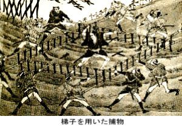
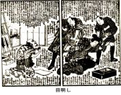

| 捕物の話（一）鳶魚江戸ばなし | |
| 三田村鳶魚 | |
| (2012) | |
捕物の話...与力・同心・岡っ引
目次
歌舞伎の立回り
蜻蛉返りの始り
捕手とヤワラ
大騒ぎな梯子取り
南町奉行所の捕物帳
捕物出役
元吉原での大狼藉
取籠りの騒動
これはまた大間違い
水盃で出役
定廻りの任務
番太郎の内職
入牢証文
岡ッ引の巣立ち
瓜の仁助
頓知の詮議
武家地に辻番
武家屋敷の門前捕り
寺社門前の私娼窟
与力・同心の身分
内与力が十人
不人相な画師
部屋頭三之助召捕り
暗い運動と明るい政治家
買米不正一件
鳥居の吹込み
水野の大奥釣
風月堂の親仁まで
高島四郎太夫一件再審
石河・浜中、歯向かう
品川教光院の御祈祷
政治資金の供給者
剣劇というものがはやるのも随分久しいことでありますが、実は恐れ入ってしまって、ろくに見もしないようなわけであります。それがまた映画の方へも入り込んで、なかなか喜ばれているらしい。私が剣劇というものを見ましたのは、沢田正二郎が大隈会館の庭で、野外劇とでもいうのですか、高田の馬場をやって見せてくれました、後にも先にもこれがただ一回ですが、剣劇という方からすると、なかなか沢田は有力な役者であったようである。その沢田のやったのを見ますと、高田の馬場へ斬り込んで行く、後も先もない、そこに二三十人ばかりも出ている役者を、片っ端から斬り倒して、すぐおしまいになったのでありました。
どこがおもしろいんだか、私にはわからなかった。芝居のことですから、写実といってみたところが、程度のある話でありますけれども、何にしても、あんなに一遍に人が斬れるものではありません。現にその高田の馬場で堀部安兵衛が斬りましたのは、村上庄右衛門兄弟とほかに二人、四人だけの話なのです。そればかりではない。例の『伊賀越』〔『伊賀越道中双六』のこと〕などでも、三十六番斬りなんていうことをいっておりますが、実際はというと、相手の河合又五郎の方で四人、渡辺数馬の方が一人、両方でたった五人しか死んでいない。新吉原の百人斬りといわれる佐野次郎左衛門でも、死傷わずかに二人でありました。
こんな例を尋ねていけば沢山ある話で、何程の手利きであったにしたところで、また、相手が大勢あるにしたところで、一人でそう大勢斬れるわけのものではない。例のチャンバラの興味というやつも、単に一人の強いところを見せるだけでなしに、斬合い・打合いをする凄じい光景を見せるところに、興味があるのかと思われる。子供等がチャンバラで嬉しがるのも、つまり敲き合いをするところにあるので、もう少し前の子供は、いくさごっこをやっておりました。それも、二十七八年戦役〔日清〕、三十七八年戦役〔日露〕と、大きな戦争が二つありましたが、その戦争なるものが機械的であって、一人の強さを見せるものでありませんから、どうも昔の武者絵で見るようなわけにはゆかない。間柄十郎左衛門とか、本多平八郎とかいう強い人が出てきて、斬りまくる。それが華やかにも見える。一騎打ちの勝負なんていうものもありはしないのですから、武者絵に現われている様子というものは、少くとも四五百年以前のもので、伝えられているところの、戦記や軍書の興味からきているのです。
それはまた、子供等がおもしろがるばかりではない。講釈の方でも修羅場と申しまして、戦いの話を盛んにやる。真打になる者は、必ず一席は修羅場を読まなければならぬくらいのものでありましたが、それもいつしか衰えました。これは時世の変化のみならず、戦争の模様が変ったために、それから、受け取る興味が現代の人になくなったためでありましょう。なるほど、子供等もその後いくさごっこというものを致しません。そうして、わずかにチャンバラの興味をむさぼるに過ぎぬようになってしまった。戦争が機械的になったから、剣劇という一人の強さを見せるものがおもしろがられる。それには、またいろいろな趣向をつけて、なるべくみんなにおもしろいように見せもするのですが、それとても、大勢斬れるとか何とかいうことよりも、一体斬合いというものが、そうおもしろいわけのものではない。それは考えてみなくてもわかる話だと思います。
歌舞伎の立回り
新しく剣劇という名前で出てこない前、すなわち、歌舞伎でも、すでにチャンバラの模様を舞台へ持ち込んでおります。しかし、歌舞伎の時分には、まだ実際に斬合いということが、全く絶えたわけでありませんから、どうしても実際に引っ張られる。従って、今の剣劇のようなことは出来ない。今日の剣劇は、全くそういうことを知らない人間どもに向ってのみ、空想的に喜ばれるものであります。斬合いの興味というものは、実際おもしろくないものだけれども、歌舞伎ではおもしろいようなものにしてやっている。それはどういうのかといいますと、従来は、これを「立回り」といいまして、その方を担当する役者をタテ師という。これにはまたいろいろな法則や規則があり、特別な名称もあります。誰も知っているだけでも、
千鳥・大回り・むなぎば・腹ぎば・横ぎば・ぎば・入鹿腰・ひともかえり・二ッがえり・つづけがえり・逆立・杉立・そくび落し・胸がえり・手這・猿がえり・あとがえり・重ねどんどん・飛越・ほくそがえり・死人がえり・かわむき・水車・一ッとこがえり・仕ぬき。
なんていうような名目が伝えられております。が、このうちの「ぎば」というのは、宙返りをすることなのです。こういういろいろな名目があります通り、立回りの仕方もいろいろある。それは、ただ人を多く斬るだけではおもしろくないから、斬られる方の人間どもが、いろいろなことをして引き立ててゆく。そこで、その方にタテ師というようなものも出来、中通りの役者は、「蜻蛉返り」ということを、必ず知っているのであります。
一体「蜻蛉返り」という名は、進んで来た位置で、そのまま後ろへ退ることが出来るのは蜻蛉だけで、その他の動物にはない、そこから起こったものだという。今いったように、いろいろな名目はありますが、もとはといえば「蜻蛉返り」一つで、それからいろいろに変じてきたのです。ただ斬るだけでは興味がないから、斬られる方へ趣向をつけて、いわゆる舞台効果を多くする。その立回りなるものは、いかにもそらぞらしい、ばかばかしいものでありまして、考えたらとても見ていられるものではありません。
ところで、昔の芝居すなわち歌舞伎の方で、この立回りを最も利用したものは、捕物であります。剣劇の方でも、しまいにはそこまでゆかなければならないから、どうしても捕物になるのですが、特に歌舞伎の方では、最も立回りの烈しい、人間が多く出るのは捕物に限られている、といってもいいように思われます。歌舞伎がそういう大立回りをやることは、世の中から本当の斬合いが全然なくならぬ時で、実際から引っ張られるところがあったのですが、それでも、何分の興味があり、相当な効果を収めている。それですから、あの無茶苦茶な剣劇のやり方でも、実際から引っ張られることのない今日では、子供らしい興味には相違ありませんが、これをおもしろく見る者があるというのも、あるいは無理でないかもしれません。一方では、昔話の桃太郎、鬼ヶ島征伐が軍国主義の何とやらで、しきりに論じ立てられている時代に、チャンバラは空前の大流行を見せる。もっともこれは戦争でもなし、軍国主義でもないから、いいのかもしれませんが、こいつは盛んになってくるばかりでありました。
けれども、剣劇と歌舞伎とでは、その見せてゆくものが一つではない。歌舞伎の方で立回りを見せる場合には、主役になる者よりも、蜻蛉返りの方が見せものなので、それが、舞台の変化、局面の転換とでもいいますか、そういう方に効能があったのみならず、またすこぶる舞台面を賑やかすものでもあったのです。まあこれをたとえて申しますならば、この節いうジャズ、あれは丼鉢の縁を引ッぱたく田吾作の酔興と似たようなものですが、ただごたごたするから、賑やかすのにはいいけれども、おもしろみのあるものではない。昔歌舞伎で喜ばれ、今剣劇で歓迎されているにしたところで、こうしたことに味らしい味があろうとは、何としても思われません。今の剣劇でするところのものは、実にお話にならぬ無茶苦茶なものでありまして、何も知らぬ同士が楽しむ――作者も見物も物知らずであることを、露出しているに過ぎないのでありますが、昔の歌舞伎のそらぞらしい、ばかばかしい、あの蜻蛉返り、一向人間らしくない気のするものではありますけれども、あれもやはり空想から持ち出したか、どこから取り入れたものか、ということを考えてみる。
蜻蛉返りの始り
ここで第一に思い出すのは『壇浦兜軍記』――これは享保十七年の新浄瑠璃ですが、この中に捕物の一章がある。無論この浄瑠璃は人形芝居にかけたので、人間のする芝居ではありませんが、その文句をよく読んでみますと、捕物の舞台面がよくわかると同時に、蜻蛉返りも人形がやっていたことがよくわかります。
物ないはせそ、打すへて引くゝれと一番手、十手ふり上げつゝかゝる、さしつたりと飛違へ、ゆがめし竹の片手をば放せば、真向よりかたはなかけ、はつしとはぢかれ、眼くらんでたぢたぢたぢ、徒倚辿引かへす、二番手は刺又を捕つたと突出す、ねらひをはづし、沈んで裾をはねさすれば、向ふ脛をあいたしこ、真逆様に、でんぐり返り、すきもあらせず三番手、つく棒取りのべ、まいてとらんと突出す、心得たりと身をかはし、つゝと入ってすてつぺい、微塵になれと、しっぺいはじき、突棒からりと投捨てゝ、べつたり土につくばうたり、一人がゝりは叶はじと、大勢四方を取廻し、乱れかゝるを事共せず、脛骨肩骨、当る所を幸いに、力有たけ、人有たけのふしを砕き、手を砕き、心を砕いて凌ぎげる、されども、防ぐは只一人、終に大勢おりかさなり、押へて縄をぞかけにける。
また延享二年の『夏祭浪花鑑』などを見ますと、「母者人が、とんぼう返り仕やらふ」とあって、蜻蛉返りという言葉が使ってあります。歌舞伎の方では、捕物の場合に限らず、蜻蛉返りする者を「トッタリ」と通称しております。「トッタリ」というのは「捕らえたり」ということで、むろん捕物の話でありますが、これらの言葉は、人間のする芝居に発生したものでなく、人形芝居から起こったのではないか、という疑いがある。そこで、この方面に委しい伊原青々園君の教えを求めましたところが、同君の説明は次のようなものでありました。
立回りのことは記録に乏しいが、元禄時代の評判記に、「太刀打の名人」という言葉が沢山ある。その主立った一人としては、「非人仇討」の荒木与次兵衛のごときも数えられている。広い意味からいえば、太刀打ちといえば立回りのことになる。遡って能の方を眺めると、『夜討曾我』などというものは、立派な立回りである。歌舞伎はそれから転じて、早くから立回りがあったのではないかと思う。その文献とては、明暦元年の八月、江戸の山村座で『曾我十番切』をやった時、鎧出立の十四五人が、舞台へ出て立回りをして、日々大入りであったことや、元禄三年の二月に、中村座で、団十郎の荒岡源太が大勢の捕手と立回りをする、それが大当りであった、というような記載もある。それからトンボの方になると、いよいよ書いたものが見当らない。だが、自分の考えでは、能の方に「仏倒れ」といって、はずみをつけないで、身体がそのまま、そこに倒れるという仕方がある。これはたしかにトンボの一種である。その次は人形の方で、『太閤記』の鈴木孫一が、腹を切ると蜻蛉返りをする。これは人形では死の苦悶などという、こまかい表情が出来ないから、ああいう倒れ方をしてそれを見せる。歌舞伎には「平馬返り」というのがあって、『菅原』の天拝山で、鷲塚平馬を道実が梅の枝で打つと、蜻蛉返りをして死ぬ。また『布引』で、妹尾が自分の首を自分の刀で斬って蜻蛉返りをする。この二つは歌舞伎だけれども、浄瑠璃から出たものだから、人形の型を取り入れたものであろう。能と人形と歌舞伎と、どれがもとであるかわからないが、蜻蛉返りは随分古くからあったものと思う。それから、蜻蛉返りは軽業のようなところがある。軽業が歌舞伎へ入ったのは、いつからかわからないが、阿国歌舞伎以来、あらゆる見世物から、おもしろいことは皆歌舞伎へ取り入れているので、蜻蛉返りもその頃からあったものじゃないかと思われる。また支那の芝居の影響も、何分かあるかもしれない。文化の初めに死んだ四代目の団蔵は、トンボの名人で、『法界坊』で、傘を持って三遍後ろ返りをするようなことをやった。近いところでも、トンボの名人として、中村千代飛・坂東善次、段四郎の親仁の三太郎などというのが知られている。三代目仲蔵も中通り時代には蜻蛉返りで賞美された、ということが『手前味噌』に書いてある、といったようなことを教えられました。
なるほど『劇場年鑑』などを見ましても、天明二年から立回りに後ろ返りを始めた、ということが書いてあります。天文以来は、いよいよ人形芝居の方で、いろいろな仕出しの多かった時ですから、私はにわかに人形からきたと断言することも出来ませんが、蜻蛉返りは、人間がやるには相当な稽古を要するけれども、人形ならば簡単に行われることで、どうも勝手がいいように思われる。そこで、舞台の上へ出てきたのは、どれがはじめであるかを決することは出来ませんが、全くよりどころのないこととは思われません。
捕手とヤワラ
捕手ということは、「取手、ヤワラ」と申しまして、二科の武芸でありました。あの有名な渋川伴五郎〔江戸初期の柔術家〕の子供、友右衛門の弟子の書きましたものの中に、捕手とヤワラの差別があることを知らねばならぬ、今の人は捕手を知ってヤワラを知らぬ、ということが書いてある。捕手（取手とも書く）とヤワラとは、各々一科をなしていたのでありますが、後には全く混じて、ヤワラの中に含まれていると見られるようになった。それは、拳法とも、また手搏ともいいまして、どちらもヤワラと紛らわしい名前になっておりますが、これは支那から伝来したもので、明暦年中に、王道元という者が長崎へ来て、伝えたのからはじまるともいい、また、陳元贇がはじめて伝えたともいわれております。ところが、陳元贇という人は、心越禅師と一緒に、万治年間に来朝した人で、捕手というものは、その以前からあったのであります。誰も知っている『武芸小伝』などを見ましても、捕手の上手な人を四人挙げておりますが、そのはじめに、「小具足捕縛は其伝来久し、小具足を以て世に鳴る者は竹内なり、今之を腰回りと云ふ」とありまして、捕手の方では、竹内流というのが一番古いらしい。竹内流腰回りの祖である竹内中務太夫という人は、作州津山城下波賀村の人で、天文元年六月二十四日に、どこからか一人の修験者がやって来て、この中務に捕手の術を教えた。その修験者は、それっきりどこへ行ったか知れませんが、中務はかねがね愛宕信仰の深い人でありましたから、愛宕の御利生でこういう術を授けられたものと信じまして、ますますその業に骨を折って、これを子孫に伝えました。その次が荒木無人斎で、無人斎流をはじめ、その次が森九左衛門で、この人は紀州の〔徳川〕頼宣卿に仕えた。その次が夢相流の夏原八太夫だとあります。山崎美成は、それについて、芝居で捕人の役をトッタリといっているが、これは戦国の言葉が残ったのである。『蓑輪軍記』の中に、「在る所の取伝の侍共呼出し」ということが見えている。この本には永禄六年二月二十二日の奥書があって、その頃に書かれたものである、と申しております。
まだそればかりでなしに、『室町殿物語』を見ますと、天正期に、堺・大坂を騒がせたあばれ者を取り鎮めた話がある。その取り鎮めた高橋作右衛門光範という人は、竹内流の極意を極めており、すべての武芸に達しておったらしい模様であります。
ここに高橋作右衛門光範といふ人あり、器量骨柄厳しく力ありて、一心の至剛なる事、凡そ世に類なし、兵法は我朝にある程の家々の奥儀を伝へ、取手は竹内の極意を極め、此外、十文字、長刀、鎌、琴柱など、家々の秘奥をかうぜり、大の男と雖も、大なる両腰を帯し乍ら、八尺の築土を彼方此方へ自由に飛越ゆる、水の底には定まって半日は耐へたり、相撲に於ては、大坂、堺、伏見、京都にも、其隠れなかりけり、殊に、一道の達者、万事に渡るとは此人にあるべきと、羨まざるはなかりけり。
こういうものを見ますと、やや新しい高橋の話にしても、天正期の話なのですから、捕手の術は、明暦や万治に渡来した支那人の伝授ではじめられたものでないことは、よくわかっています。
捕手の術というのは、相手を生け捕る方法なので、それを写したのが、芝居のトッタリであります。その中でことに目立ちますのは蜻蛉返りで、この蜻蛉返りなんていうことは、何だか武芸らしくなくておかしいのでありますが、これもまた、いささかよりどころのある話なので、『遺老物語』の中に、正阿弥専斎の話がある。この人は捕手が大変好きで、相当な嗜みがありましたが、ある時、自分が手飼いにして寵愛している猫を、四足を持って宙に下げて落してみると、途中ではね返って、ついにその猫は背中を打つということがない、幾度試みても同じことでありますから、専斎は、自分の好んでいる捕手のような術を、猫は自然にこれを得ていて、少しも無理でなく、投げつけられても背中を打たぬようにする、そこでだんだんその具合を修練致しまして、自分が屋根の上へ登って、人に突き落させる、そうして、何事もなく地面に突っ立つまでの修練をした、ということが書いてあります。蜻蛉返り・宙返りも、こういうことを専斎が嗜んだのを考えれば、よくわかる話で、これがだんだん捕手の一つになっていったものと思われる。そうしますと、トッタリのやるあの宙返りも、決していい加減なものではなくて、なるほど大いに誇張したところはありましょうが、全く種がないことではないのです。
大騒ぎな梯子取り
それからまたずっと大がかりになりますと、『在原系図』の蘭平――これはよく芝居でするやつですが、あの立回りは梯子取りの仕方であります。この梯子取りのことについては、おもしろい話がある。甲州街道の日野宿というところに、代々隼太といって、名主をつとめる家がありました。維新の際に名高い土方歳三の続きになっている家ですが、この隼太はなかなかの才物であって、村の者どもと折合いが悪い。しばしば村から訴訟を起して、隼太を追い込めようとする。隼太の方に横領や何かがあるので、再三再四訴訟致しましたが、才知弁舌があるために、いつでも隼太の方が勝訴になって、村民の方が負けになる。その最後の時に、やはり隼太が勝訴しまして、勝誇った顔つきで村へ帰りますと、意趣のかたまっている際ですから、皆で梯子取りにかけた。というのは、隼太は百姓ではありますけれども、武芸の嗜みがあるので、三人や五人かかったところで、なかなかとっちめることは出来ない。そこで梯子取りにかけて、多人数で引っ捕えて、ついに隼太を殺してしまった。これは嘉永期の話でありますが、この梯子取りというのは、どんな按配にするのかというと、『在原系図』の蘭平のようなものには違いないけれども、ただそれだけでは話がわからない。丁度『武学拾粋』の中に、その実例が出ていますから、それをここでいっておきましょう。
 ある士が江戸の下町を通る、その時、この士は年が若いのに、夫婦連れ立って歩いていた。昔は、若い夫婦が連れ立って歩くということは、大概なかったのですが、何かやむを得ぬことがあったのでしょう。この若夫婦が通るのを見て、町家の若い者が、一盃機嫌でありましたか、あるいは、若い御新造の縹緻がよかったので、そねむ心持があったのですか、この士に言葉をかけて、悪口を言った。士は聞かぬふりをして行き過ぎようとすると、町の者は図に乗って、人にこれだけものを言わせて、何とも返事をしないのは、唖か聾かといって、その士の耳を打ちました。もう勘弁が出来ませんから、士は抜討ちにその者を斬り倒した。続いてその連れであった者がかかって来るのを、また二三人斬り伏せた。さあ、士が抜いた、というので、大騒ぎになりまして、町人どもは、棒ずくめにして、取り押えるつもりだったのでしょう。士を取り囲んでまいりました。棒ずくめというのは、辻番などでよくやるやつで、芝居などにもありますが、袴の股立ちを取りまして、棒を持ってばらばら出て来て、相手を取り囲む。槍なら槍衾というところですが、棒ですから棒ずくめといいます。ところが、その棒も五六本斬り落し、四五人の者に手を負わせて、士は悠々と立ち去りそうになりましたから、今度は幾つもの梯子を持って来て、大勢で梯子取りにする。幾つもの梯子を前後左右に立てて、それを敵の上へ打ち掛けてくる。それは竪だが、梯子を横に押してもゆく。こうしていくつも打ち掛けて、その場へ押し伏せ、あるいは前後から挟む。相手が倒れると、大勢が梯子へ乗って押えつけるので、ついにそのために、この士は圧し殺されてしまった、ということが書いてある。これが梯子取りの仕方で、これを写したのが、蘭平の立回りの仕方なのであります。元禄期に、佐野次郎左衛門が、八橋を切って吉原を騒がせた時もこの梯子取りで、廓内の者が捕えたのであります。
こういうふうで、昔の歌舞伎に取り入れました立回りというものは、全く種のないことではありません。しかし、芝居のトッタリは、種があってもなくても、とにかく舞台を賑やかにする効能があります。そのトッタリのやるところは、前にも申した通り、全く根拠のないことではありませんが、さて捕物の実況はというと、芝居でするようなものではない。ただそれがおもしろいものでないのみならず、そう賑やかなものでもないのであります。
まず名高い捕物といえば、丸橋忠弥の捕えられた時なども、その一つでありましょう。これは『慶安太平記』などというものがありまして、講談や芝居はそれでやっております。田代又左衛門・奥村八郎右衛門という両人の訴人によりまして、幕府は浪人どもに謀叛の企てがあることを知りまして、老中の松平伊豆守は、月番の町奉行石谷将監に命じて、丸橋を捕えさせる。捕手の一番は馬籠弥五右衛門、二番は真島忠蔵、三番は遠藤文六・逸見新右衛門、そのほかに、与力・同心七十人というものがついてゆく。それのみならず、石谷家に伝わる秘法で、鶏卵の殻に爆発する薬を仕込んで、礫に打つ。その名を「八方剣草隠れ」という目潰しで、虎の巻の法であって、義経もこれを用いられた、ということになっている。この鶏卵に仕込んだ目潰しを打ち付けますと、それに当った者は、目が潰れるばかりじゃない、気絶してしまう。それを蘇らせるには、鼻から胡淑の粉を吹き込めばいいという、捕物にははなはだ重宝な石谷家の秘法でありました。この目潰しを、石谷家の近習十二人が、袋へ入れて腰につけ、万一手に余った場合には礫打ちにする、という支度をさせて、忠弥の宅に向いました。丁度繰り出そうとする時に、弓師藤四郎からも忠弥の謀叛を訴え出ましたので、直ちに藤四郎を案内にして、本郷御弓町の大岡源右衛門という旗本の屋敷内に住っております忠弥方へ向ったのです。その時は慶安四年七月二十四日の夜半でありまして、まず捕手の方では、「火事だ火事だ」と言って、大声を挙げて呼ばわりながら押し込んだ。酔っ払って寝ておりました忠弥は、跳ね起きると、一重帯に三尺一寸ある枕刀をさして、火事はどこだ、と言って出てまいりますのを、一番の馬籠がこれにかかった。組み付くかと思うと、直ちに三間ばかり投げ飛ばされて、肋骨が折れて即死致しました。二番の真島もかかったけれども、やはり投げ付けられて、起き上るところを抜討ちに斬られた。続いて、遠藤・逸見が抜き連れてかかる。捕えようとしても手に余る時は、斬るより仕方がないのですが、こいつも忠弥のために四つに斬り倒された。それから総がかりになりまして、手負いやら即死やら、十三人も出来ましたので、他の連中もだんだん後退りをする。忠弥はそれを見て、悠々と自分の居間へ入りまして、自殺しようと致しましたから、近習の者は盛んに目潰しを投げて、とうとうそれが当って、捕えることが出来た。裏口に下部の有竹八蔵が出て、捕手を一人斬り殺してつかまった、ということが書いてある。手負いから即死で、怪我人が十六七人も出来たわけになっております。
南町奉行所の捕物帳
しかるに、南町奉行所の捕物帳を見ますと、なるほど日取りは『慶安太平記』と同じでありますが、忠弥の住居は少し違って、「御茶之水上御中間町」と書いてあります。御茶の水上の御中間町というのは水道橋辺りで、駿河台最寄りのところにあった様子です。それから弓師藤四郎の案内ということ、これもよろしい。捕方に向いましたのは南の町奉行の石谷将監、これは当月の月番だったので、命を受けたのですが、そのほかに、中の町奉行の神尾備前守の手からも出役しております。両方で同心が二十四人出て、それが二手になっている。もちろん命を受けたのですから、南の方が先手をつとめるわけですが、忠弥は先手で召し捕ったので、神尾の手はいらなかったらしいのであります。忠弥を召し捕ってから、南番所へ寄り合いますと、久世大和守・牧野佐渡守が直ちに出て来られて、捕方に向った者へ褒美を与えた。捕親の石谷将監からも、一の手に時服二つ、二の手に時服一つを与えております。
それから、捕方に向いました一番手・二番手も、『慶安太平記』に書いたのとは違っている。すなわち、銀八枚と刀とを頂戴しましたのが、石谷の同心で一番手の匹地六左衛門、銀六枚と脇差を頂戴したのが、やはり石谷の同心で二番手を承った堀江喜左衛門、続いて辻小兵衛・原兵左衛門、それと先手の検使をつとめた神谷金太夫・羽田長右衛門まで、後詰の検使の名は、記録に書いてないとあります。これで見ると、両方の町奉行から出た同心が二十四人なのですから、南の方から出た者が十二人、それに対して先手の検使が二人、つまり同心六人について検使一人の勘定になる。この検使は与力がつとめるのです。
捕物にいよいよ出かける時の状況は、後でまた申し述べますが、いずれにせよ、与力は同心の働きを監視するためにまいるのでありまして、自身捕物に手を下す者ではない。与力は一騎二騎と数える、馬上のものでありますが、いつの頃からか、馬に乗って出役することはありませんで、槍一本持たせて出てゆきます。もし相手方が逃げでもするような場合には、その槍をもって逃さぬように防いで、そうして、同心に押えさせるように手伝ってやる。芝居でも、一渡り立回りがあって、捕手を追い込んでしまうと、今度は槍を持った厳しいのが出て、渡り合うことがある。あれが検使である与力の役を見せるところなのです。芝居に致しましても、決して相手を突き殺すようなことはしない。ただ槍であしらっているだけのもので、与力の役回りをよく現しているように思います。
忠弥の召捕りは非常に名高いものでありますが、実は死傷は一人もなかった。また、鶏卵の目潰しを投げつけたのでもない。何にしても、当時忠弥は宝蔵院流の槍の名人として知られた人ですから、槍を持って出て来られては大変である。不意を襲って召し捕るようにということは、松平伊豆守信綱がよく命じてあったのです。本当のことをいいますと、わざわざ夜の遅くなるを待って、近所隣へ大勢の人を配りまして、二階の戸口まで人が置いてあった。そうして、大竹を挫かせて、ポンポン音をさせる。いかにも近火であるような模様にして、「火事だ火事だ」と言って、まわりで騒がせましたから、忠弥は全く近火だと思って、二階の戸をあけて外を覗くと、それを機会に飛び込んだ。忠弥は刀なども帯びていなかったらしいので、造作なく捕えられてしまったのであります。もしこの時に死傷がありましたならば、捕物帳に必ず記載があるはずですが、どうもそれがない。捕物帳によりますと、忠弥の捕えられたその晩に、河原十郎兵衛と、十郎兵衛の親の勘右衛門とが、塩硝蔵で捕えられております。これも、一番は石谷の同心で吉野六太夫という者が銀八枚、それと並んで、神尾の同心で高田安太夫という者が銀六枚を頂戴している。親の勘右衛門を捕えましたのが、石谷の同心で成瀬弥五右衛門、それから、神尾の同心で矢野弥次兵衛という者が、やはり同じほど銀を貰っております。
これはどちらも傷を被っておりませんが、九月十三日の夜になりまして、志村又十郎・戸次庄右衛門・林戸右衛門という三人が、芝の札之辻三丁目に隠れているということが、訴人によって知れましたので、また両方から同心二十四人を出しました。ところが、この時は林が後詰の中へ斬り込んでまいりまして、大分大勢に怪我をさせた。それでも押えることは押えましたから、褒美金も余計出まして、銀百枚というものを、それぞれ差別をつけて褒美を行いました。この時林戸右衛門のために手を負うた者が列記してありますが、石谷の同心で手負いが、山村与左衛門・吉野六太夫・田中安左衛門、深手でありましたのは、やはり石谷の同心で井出市右衛門、それから、神尾の同心で橋本喜兵衛・間米弥右衛門、これだけが傷つけられております。こういうふうに傷つけられた者があれば、捕物帳に皆記載されてあるのですが、忠弥の時にはその記載がありませんから、怪我人のなかったことがわかる。林の時でも、深手の者三人、手負い三人、都合六人ですから、そんなに多数の人が怪我をしたわけではありません。それもそのはずです。捕方が多人数出役しておりませんから、何としてもおびただしい死傷の出来るわけはございません。
ついでだからここでいっておきますが、この捕物帳というのは、奉行所から捕物のために出動した記録であります。近頃は何の某捕物帳というわけで、同心や目明しどもまで、何か記録していることがあったように思われているらしい。まあ今日の巡査が持っている手帳のような具合に、考えている人もあるようですが、そんなものがあったわけではない。昔の捕物帳というのは、そういうものではないのです。
捕物出役
さて、それでは町奉行所から捕物として出役する場合は、どんなであるかということになる。その例としては、今の丸橋の例がよろしいので、これを御下知者と申します。御下知者というのは、幕閣の命によって町奉行が手を下すからこういうのですが、たとい老中の命でありましても、町奉行が命を下すのですから、その支配限りのもので、武家地や寺社地には向いません。旗本や御家人にはそれぞれ支配がありまして、その支配下に犯罪者がありました場合には、支配が取り調べた上で、評定所の方へ回して裁判にかけますから、町奉行の手は経ない。もしそれが出奔でもして、市街地に潜伏しているような場合には、その支配から幕閣へ上申する。そうすると、御下知者になるのであります。
もう一つ、御下知者でなくても、町奉行所から出動するのがある。それは、町方からの訴えでありましても、捨て置けぬような捕物であれば、猶予なく出て行きます。人数はその時の状況によるので、一定しておりませんが、平素、定廻り・臨時廻り・隠密廻りと申しまして、町奉行所から同心を出して、常に市中を巡邏させている。これを三廻りと申しますが、この三廻りという者は、罪人を捕えるために巡回するものではない。ことに定廻りのごときも、これも後で申しますが捕うべき者があれば捕えるけれども、捕えんがために回っているものではありません。
捕物については、捕物として奉行所から出役するのと、定廻りの手によって押えるのとの違いを知っておかなければなりません。それから町奉行所というものは、犯罪者を検挙するだけの役目のものではない。八丁堀の与力・同心は、町奉行所に所属しておりますが、これも非違を検挙するばかりが、この人達の仕事なのではない。また、非違を検挙するのでも、火付盗賊改というものが別にある。この手によって検挙することも多かったもので、江戸市中でも、加役といって恐れておったのであります。それから江戸を離れましては八州廻り、俗に八州様と申しておりました、これは代官手代が出るので、八州取締出役と申しまして、代官支配の地域及び万石以下の領地における犯罪を検挙するものでありました。
さて、そういう差別がありますが、町奉行所から捕物のために出役する、いわゆる御下知者のほかに、町方の訴えによって出役することがあるという。その例と致しまして、元吉原の「かつら事」というのがある。それともう一件、吉原の話がありますが、まず「かつら事」の話から申しましょう。これは正保元年三月五日の出来事で、大変な騒ぎでありましたが、そんなに怪我人などは出ておりません。
元吉原での大狼藉
「かつら事」と申しますのは、正保元年三月五日に、元吉原中通の揚屋甚右衛門という者のところへ、四国の浪人だということで四人連れ、珠三という角力取を一人供に連れて来まして、大勢遊女を呼び集めて遊興をした。そのうちに、京町高島屋清左衛門の抱えで、かつらという女がありましたが、どういうわけか知れませんけれども、客人がこのかつらに当りが悪い、あまり無理ばかり言われるものですから、かつらもその席におりかねまして、黙ってそこを出て、高島屋へ帰ってしまった。そうすると、その客達が怒り出しまして、こっちへ呼んだ女が挨拶なしに出て行ってしまうのはけしからん話だ、というので、揚屋の亭主を呼び出して、是非かつらを連れて来い、と言って聞かない。揚屋から高島屋の方へ行ってみると、どうもかつらは気分がよろしくないので、お暇もせずに帰ったほどだから行かれない、という。いろいろ申しましたが、どうしても出て来ない。それを聞いた客は、ますます立腹しまして、誰でも構わず取ってかかる、という有様でしたから、揚屋の内の者は、主人はじめ召使いまで逃げ出してしまって、誰もいなくなりました。客はそのいないところで、力み返っているのみならず、戸口もすっかり締めて、取り籠っている。近所の者も出合いまして、いろいろ外からなだめたけれども、どうあってもかつらを連れて来なければいけない、揚げられた遊女が、暇もせずに客の席を立ち去るというのはけしからん、自身来て詫びをすればよし、さもなければ許さない、と言う。何しろ揚屋一軒がらあきになって、客ばかりが中で力んでいるので、土地柄でもあり、困るものですから、いろいろと相談の上、とにかくかつらをあやまりにやって、ここを無事に済まそうということになりました。
高島屋の方では、何しろ食らい酔った客があばれているのですから、そんなところへ自分の遊女をやりたくはない。けれども、ほかに仕方がないものですから、かつらによく呑み込ませて、甚右衛門の家の前まで連れて行った。かつらは往来へ手をついて、私は先程気持が悪かったために、お暇も申さず帰りましたが、まことに不行届きでございました、どうか御勘弁下さい、と言って、丁寧にあやまった。そうすると、中にいる客の侍達は、自身であやまりに来たのはいいが、それなら中へ入って、盃を納めて帰るがいい、と言い出した。主人の清左衛門にしてみれば、もしもう一度客のところへ出したら、大事な女郎がどんなことになるかしれない、かつらは不加減であることはたしかなのですから、少々保養をさせました上で、気分がよくなりましたら差し出しましょう、と言って、客席へは出さずに連れて帰った。客はますます怒り出して、座敷へ来ないのはけしからん、遊女の癖に士をばかにしている、それなら、今われわれが斬って出て、一同の者に目を覚まさしてやる、と言って力み返っている。騒ぎはいよいよ大きくなってまいりました。
そこで、江戸町の重右衛門という者が、何とかなだめるつもりだったのでしょう、戸口のところへ行って、皆様方は立派なお士達とお見受け致します、何にしても当所は場所がよろしくございません、お名前が出るようになってはなりませんから、少々のことは御勘弁下さいますように、と言った。ところが、例の連中は重右衛門を引つつかまえて、内へ引き摺り込んで、それを人質にして力んでおります。重右衛門の子供に、十助という当年十七歳になる者がありましたが、今親仁が食らい酔った士の座敷へ引っ込まれたのを見て、出かけて行って、士達に申し入れました。ただいまお連れになりましたのは、私の親でございますが、何分年寄のことで、別に御用に立つ者でもございませんから、親仁はどうかお免し下さるように、その代り私を召し置かれるようにお願い致したい。――こういうのを聞いて、親の代りに倅が来るというのは神妙である、それでは親仁は返す、と言って、今度は十助を人質に取って力んでいる。この日はあいにく名主甚右衛門もおりませんでしたが、日暮に帰って来て、この騒ぎを聞きました。何しろ相手は酔っ払いの士なので、手のつけようがない。そこで、町奉行の神尾備前守までお訴え申し上げますと、早速与力八人と同心四十人を差し向けられた。そうこうしておりますうちに、この十助というのは機智のいい男と見えまして、これは外す方がいいと思ったのでしょう、小便がしたいから、暫時の間御宥免願います、と言って物干へ上りまして、小便するふりをして、物干から京町の裏の方へ、飛び下りました。ところが、無法者がある、取籠りがあるというので、吉原の町の者は、揚屋甚右衛門の家の周囲を、多人数で棒ずくめにして固めている。そこへ十助が飛び下りたので、よく気をつけていれば、そんな間違いはないのですが、何しろ皆一生懸命になっておりますから、目もくらんでいたのでしょう。遮二無二棒ずくめにして、十助を殺してしまいました。
それほどに吉原の町は騒いでおりましたが、だんだん時はたちますし、捕方に向った人達も、どうにも仕様がない。戸口のところから内の様子を眺めて、家の絵図などを見ておりましたが、その中でも、事馴れた人が言われるには、士達が五人も取り籠っているところへ、むざと押し入ってつかまえにかかったら、何分かの怪我が出来るに違いない、ここは何とかうまく騙して、大道へおびき出して搦め捕るより仕方がない、というので、与力の中の一人が、表格子を隔てて、中の酔っ払いの士と対談した。各々方は立派なお士のように見受けるが、ここに取り籠っておられるので、町の者が大騒ぎをやって、町奉行所へ訴え出た、その仕方はいかにも狼藉がましく見えるが、別段に人を傷つけたわけでもなく、酒興の昂じたものであるかに見受けられる、それ故備前守がわれわれに申し付けるには、別段のこともないから、よく異見をして、早速にそこを立ち去って、帰られるようにしたがよかろう、それでも合点しない時分には、よんどころないから召し連れて帰るように、という言付けを受けている、そこで様子を聞いてみると、別段なことがあったのではない、場所も悪いことであるし、こんなところにいつまでもぐずぐずしておられるのはお気の毒である、世間の評判にもなることであるから、引き揚げられた方がよくはないかと思う、そうは思うものの、各々方が御承知なく、ここを立ち去られぬ、ということであれば、我々も、役目の手前、よんどころなく召し捕らなければならぬ、各々方は一体何とお思いなさるか――こう言いました。そうすると、中にいる士どもは、いかにも仰せの趣きは承知致した、私どもは士の真似もする者であるから、だんだん申し募った果てにこうなったことで、別段に意趣遺恨があるわけではない、また、人を斬ったり、何かしたわけでもなし、この上各々方にお世話をかけるまでもない話である、ここを立ち去っても差支えないはずだが、われわれどもを引き出して、足場のいいところで搦め捕ろう、ということがあるかもしれないから、容易にここを出ることは出来ない、という返事をした。そこで与力の一人が、いやこの方ではそういうことはしない、公儀の御威光で召し捕る日には、何十人取り籠っていたところが、何の遠慮もいった話ではない、が、人をあやめたとか、御法度に背いたとかいう人でもなし、当座の酔興が募ったまでのことで、穏便に済した方が、いいと思うから、早速に立ち退かれるようにと申すのだ、といって、懇ろに勧めまして、得心されたならば、時刻の移らぬうちにお帰りになった方がよろしかろう、と言った。そうまで言われるならば、それに相違なかろう、御誓言を承った上で立ち去ることにしよう、と言う。いかにも偽りを申すことではない、というので、ここで話がつきまして、いよいよ立ち去ることになりましたが、ついては表の方の提燈を引かしてくれろ、と言い出した。これは、町内の者が提燈を持って固めているので、それを引っ込ましてくれろ、と言ったのです。
奉行所から出張った者は、委細承知致した、その代り、各々方は一人ずつ間をおいてお出かけ下さい、仲之町の方は町人が大勢集っていて騒々しいから、江戸町の方から大門口ヘお出なさるがいい、と答える。これも承知して、一人ずつ、例の余情羽織をかぶって揚屋を出て、江戸町の木戸のところまでまいりますと、そこには同心達が待ち受けております。そのほかにも、江戸町の塀際で待伏せして、木戸の内で二人ばかり縛った。そのうちに、一緒についていた角力取の珠三というやつ――これは珠三ばかりじゃない、どれも皆そうだったのですが、頭から羽織を被って、面体の知れないようにしている。珠三は小柄を二つ紙捻で縛り合せて、両刃にこしらえたのを口へ銜えまして、それの知れないように、羽織を被って出て来ました。こいつが、自分の前後に出た者が二人まで縛られたのを見ると、いきなりその小柄を逆手に持って、両方へ突き立てた。同心の神谷金太夫は脇腹を突かれて、それがために死にました。それから、その側におりました岩佐某という者も、珠三のために怪我をしました。しかし前後皆捕えられまして、一同に神尾備前守の御番所へ引っ立てられて行って、いずれも死罪になったのであります。この騒動の最中に、神尾・朝倉の両町奉行は、大坂町の辻まで出張って、騒動を鎮撫することに骨を折られた、というようなことがありました。
取籠りの騒動
その次は、元禄九年の二月四日に、京町一丁目の介右衛門の召使い八助という者が、揚屋町の往還で、会津から来ておる旅の者六右衛門という者に斬られた。八助は、斬られたので驚いて、揚屋の清六という者のところへ駆け込むと、六右衛門は追い駆けて来まして、清六の家の板の間のところで、とうとう八助を斬り殺しました。揚屋からは、久兵衛・八兵衛という両人が、棒をもって立ち向いましたが、これも怪我をしますし、近所から駆け付けた五兵衛という者も怪我をした。清六の家の者は驚いて、皆自分の家から逃げ出してしまう。あとは六右衛門一人になって、戸を締めて取り籠ってしまったわけです。
その騒ぎを、早速に京町の名主喜右衛門のところへ知らせましたので、喜右衛門から町奉行能勢出雲守へ訴え出る。奉行所からは、直ちに、与力二人、同心八人を捕方として遣されました。そのうちに日は暮れてきますし、吉原の廓中の騒ぎは大変なことになった。奉行所から出役した人達は、清六方の大戸を放して、家の中へ込み入って尋ねる。取籠りの中へ押し込んで行くのですから、これはよほど元気のいい仕事なのですが、六右衛門はおりません。二階を捜したけれども、二階にもいない。それでは天井裏へ上ったんじゃないか、というので、下から天井を突いてみたところが、やはり天井裏に隠れておりまして、脇差を下へ投げつけた。刃物さえ投げ出せば造作はない。早速大勢で取り押えてしまいました。
この六右衛門は、永富町の治郎左衛門という者のところに逗留しておったのですが、京町の海老屋で遊興した勤め代がないので、脇差を質に取ってくれ、と言ったけれども、一向に取り合ってくれない。ようやく同行した武兵衛という者が話し合ってくれましたので、そこを出は出ましたが、あとから八助が追っ駆けて来て、薪で六右衛門を打った。銭も払わずに遊興して行ったのだから、それを懲らすつもりだったのでしょう。そこで六右衛門が腹を立てて、八助に斬り付けたので、それがはじまりで、この騒動が起ったのです。
こういう按配に、吉原には取籠りがありましたが、吉原以外のところにもなかったわけではない。享保八年八月二十二日の七ツ半から夜に入っての話でありましたが、元飯田町の市郎右衛門店、薬種屋三郎右衛門の手代に、又七という者があった。上州生れの男だったそうですが、こいつが番頭と何か口論をした末に、それを斬り殺した。のみならず、押えようとして出て来た朋輩に傷つけまして、二階へ上って、梯子を引いて取り籠った。騒ぎを聞いて駆け付けた町内の者が、家の中へ入り込んで、モジリにかけて引き落そうとしましたけれども、モジリは斬り折られてしまう、提燈で二階の様子を見ようとしても、その提燈を斬り落される、という有様ですから、とても上る者がない。外から上るといっても、土蔵作りだから、どうにも仕方がない。困りきって、ついに町奉行所へ訴えました。それから捕方が向いまして、屋外から梯子をかけて、土蔵の窓のところへ詰め寄っていった、そうすると、薬屋のことですから、胡椒の粉がやたらにある。そいつを手当り次第に投げ出すので、目鼻へ入って、何とも仕様がない。屋内から上ろうとしても、やはり胡淑の粉を敲きつけるので、上ることが出来ない。大分大勢怪我人が出来ましたが、そのうちに、町人の弥惣兵衛という者が、肩のところを斬られたけれども、又七の腕をつかまえたものですから、自分の斬られたのは構わず、下へ引き下してつかまえてしまった。この弥惣兵衛は、褒美銀五枚と腰の物とを貰いました。
この時でも両番所から出役しておりますが、一の手に向いました諏訪美濃守の同心佐藤治部右衛門、二の手に向いました大岡越前守の同心林与一郎、諏訪方の浅尾庄次郎、大岡方の保田伴内なんていう者は、いずれも数箇所の手疵を負いました。この時は幾人で行ったか、わかりませんが、与力は検使として両番所から一人ずつ、荻野仁右衛門と後藤三郎兵衛という者が出ております。
こういうふうに、取籠りといいまして、誰も寄せつけないように犯人が険しく構えるということは、明和の頃まで続きましたから、飯田町でのようなことはいくらもあったのです。その度に町人どもでは手に余りますので、町奉行所へ訴え出て、捕物出役があるわけになる。しかし、ただの捕物と違って、そういう場所に取り籠った犯人になりますと、なかなかつかまえるのが厄介であります。捕物は殺さずに生捕りにしなければならないから、そういう険しいところに取り籠られると、なおさら始末が悪い。無理につかまえようとすれば、どうしても怪我人が出来る。だから『武備目睫』などという本には、取籠りを押える時の心得が、いろいろ書いてもあるくらいのものです。『古老物語』などを見ますと、こもり者の捕方は、囚人・警固人両方に疵をつけてはならぬ、生かしておいて働かせぬようにしなければならぬ、それには柔術が必要である、ということが書いてあります。
『武学拾粋』などには、取籠りを押えるのは、ただ勇気だけのものではない、どうしても頓知がなくてはならぬことだ、その例は古来いくらもあるが、その例に拘泥してしまうようでは、害があっても益はない、やはり自分の頓知頓才でつかまえるに限る。いずれにしても、上手におびき出すのが一番で、踏み込んで行くのはその次の策である。すべて捕物というものは、手に余る時は討って捨てるのが定法であるが、武士が、浪人・百姓・町人・盗賊などに手を下して捕えることは、昔よりないことである。武士の業としては、そういう場合には傷つけても差支えない、ということになっているが、捕物としては、やはり、同心とか足軽とかいう者を指揮してつかまえさせるので、我が手柄をしようとすべきものではない。「早着込」といって、綿入れの布子を水に浸して着たり、「野中の幕」といって、衣類や風呂敷ようのものを、モジリや鳶口の先へ引っかけて、飛道具を持っている者に対する仕寄にする伝授事がある。けれども、これに泥んでははかがゆかぬ、時により場合によって、自分で工夫をめぐらさなければならぬ。取籠りがある時は、士ならば、時を移さず踏み込んで捕えるがいいし、雑人どもなら、手間どった方がよろしい、という言い伝えがあるように、この取籠りを押えることは、いろいろ研究されているのであります。
取籠りは、何も江戸時代になって、初めて起ったことではありません。前にも引きました『室町殿物語』は天正期の話ですが、例の捕手の名人として聞えた高橋光範の手柄話があります。ある時、天王寺辺に恐しい腕の強い狼藉者が、主従二人で取り籠った。誰でも腕に覚えのある者があれば、立ち寄って我を捕えて功名にしろ、と言って、広言を吐いて立て籠っている。この辺を警備しておりました生駒雅楽頭の家来柳村源次兵衛・松本忠左衛門の両名が、主命によって、百五十余人の人数で四方を取り囲み、夜昼三日というもの、いろいろ騙したり、智略を用いたりしてみましたが、どうにもならない。取籠りどもは、この上は斬死して冥途の思い出にしよう、というので、捕手の押し寄せるのを待っている有様ですから、何とも手のつけようがない。取籠りがあって手に合わぬ時は、焼討ちにするよりほかに仕方がない、というのが、昔からの仕来りになっているので、焼討ちにするより仕方がないだろう、と言って思案に暮れている時に、生駒の家老が、主人にこういうことを申し入れた。大事の仕向けであるから、まことに毎度のことで気の毒ではあるが、高橋を頼んではいかがでございましょう、と言うと、雅楽頭も、それはよかろう、だが高橋は咳の患いで折角養生している趣きを聞いた、当方の頼みを聞いてくれるかどうかわからぬが、人をやって尋ねるまでもない、これからお前達が行って尋ねてみたらよかろう、ということでありました。それから高橋のところへまいりますと、昨日今日少し気持がいいと言って、出て来ていろいろな話をした。天王寺近辺の取籠りの話を致しますと、高橋が申しますには、わしもこの患いさえなければ、罷り向っていかようにもするであろうが、まだ何だか頭が重いようだし、身体も弱っているようで、気持がよくない、けれども、三日も四日もそうやってかかりきりで、何ともならぬとあっては、他国への聞えもいかがであり、生駒の家には人がないように思われぬとも限らない、相手は僅か二人の者が取り籠っているのに、焼討ちにするというのも業々しくよろしくない、また焼討ちにすれば、近辺の者も迷惑するであろうから、病中ではあるが、一つ行ってみることにしましょう、ということで引き受けてくれました。
生駒雅楽頭も、それを聞いて大変喜ばれましたが、高橋は、やがて人を連れまして、天王寺へ出て行った。そこを取り巻いている柳村・松本の両人に逢ってみると、二人とも疲れきって、青息吐息になっている。どうも長々の御苦労でお疲れのことと思う、自分はこの間中病気をして寝ておったが、殿より年寄衆を遣わされてお話があったから、御様子を見舞いかたがた出てまいった、と高橋が申しますと、二人の者は、どうもここに取り籠っている二人の者は、斬死の覚悟をして、主従心を一つにして、今はただいい相手を望んでいるのである、こういう曲者は、どんな手だてをしたところが、容易につかまえることは出来そうもない、と言って話した。いかにもごもっともであるが、私が中へ入って様子を見ましょう、だから、この取り巻いている人数を、一町ばかり引きなさるがいい、と言ったものですから、両人は委細承知致したというので、ずっと人数を後へ引きました。それから高橋は、自分のさしておりました両刀を取って人に渡し、わざと丸腰になって、取籠りのいる家の裏手へ回って行きまして、戸を敲くと、中では誰だと言う。一向苦しからぬ者である、奉行所から使いにまいったのであるが、まずここをお開けなさい、といかにも心しずかに、落着いて申しました。家の中の者は、何のために来られたか、言うことがあるなら、ここを開けないでも、外から言われてよかろう、たしかに承るであろうから、と言うので、高橋は折り返して、いやそれは何の気遣いもないことである、御覧なさい、この通り丸腰で、扇一本さえ身につけていないこの方だから、用心されるまでもないことではないか、と言った。中から外を覗いて見ると、あたりを取り巻いていた人数は影も形もなく、一人男すなわち高橋が、無刀で扇子も持っていない有様が見えましたから、もし怪しい者であったら、一討ちに討って捨てればいい、というので入口を開きました。
高橋は悠々と中へ入って腰を掛ける。二人の者は上座に坐って、どういう御用のお使いであるか、と言って尋ねた。高橋が申しますには、昨日今日天王寺の執行坊から、当所の警備に当っている生駒雅楽頭へ、こういうことを申し出でた、当山八町四方は殺生禁断の地になっている、それであるから、たとい重罪の者であっても、他国から来た科人ならば、執行惣坊として是非とも申し請けたい、ただし当所の者をあやめたものならば、別段のことであるが、もしそうでない者ならば、いかようなおはからいがあっても差支えない、まず当所の人をあやめた者であるかないか、そこを十分にお取り糺しあった上で、処置方を仰せ付けられたい、ということであったから、こちらではあなた方が取り籠っていられるわけが聞きたくなって、すなわち某が使者として来たのである、どういうわけでこうやって取り籠っておられるのか、それが承りたい、と言った。先方は、なるほどもっともだというような顔をして、ただ腕立てをする意味で広言をしたのから、事が間違いになって、取籠りをするようになったのである。別に当地で人を斬ったのでも何でもない、という始終を話した。そこで高橋が、腕自慢からさし縺れたというならば、もとより何の子細もないことである、暮れ方になった時分に、どこへでも立ち去るがいい、自分はこれから奉行の御前へまいって、よきように申し上げよう、と言ったものですから、相手も、そういうわけならというので、いくらか寛いだ様子に見えました。
それから、高橋はそこをさあらぬ体で立ち出で、奉行所へ帰りまして、かの者どもは夕刻にはひそかに落ちるであろう、その時に主人の方は私がつかまえるから、先に立って行く家来を取り逃さぬようにして貰いたい、と言った。やがて黄昏時になりましたから、高橋はまた出かけて行って、生駒に申し聞けたところ、勝手にどこへでも落ちられるように、ということである、ただし主従一緒に立ち退かれることはよろしくあるまい、家来は先へ、主人は少し後から立ち退かれたがよかろう、もし自分に送れということなら、一町や二町は送ってもよろしい、と何の隔りもなく申しました。先方は、それはありがたいが、途中に待伏せでもありはせぬか、いかにもおぼつかなく思う、と申しましたが、それは天王寺からの申立てもあることだから、ここで斬るの突くのということのある気遣いはない、だがもし何か間違いがあったところで途中で待伏せに出っくわしたところで、そこはここでも斬り死をするほどの覚悟のあなた方だ、これから先でも、斬り死されるとすれば、別段気にかけられることもあるまい、思いきってお出かけなさるがいい、と笑談のように申しました。そこでいよいよ落ちることになりましたが、もちろん少しの油断もなく、一足一足に気をつけている。もう夜に入りまして、世間も静まれば、辺りも真暗で、人の見わけもつかない時分に、家来は東の方を指して落ちて行きます。主人ははるか後ろの方から、両刀をさして西の方へ落ちて行く。丁度五月の半ば頃で、麦の刈積みが道端に沢山ある。高橋はその陰から飛び出すと、すぐにうしろから取って伏せてしまった。取ったという声をかけましたから、かねて隠してあった人数が、松明を振って出て来まして、この者を引き立てて行きました。家来も造作なく搦め捕って引き立てた。これで生駒はさしもおおげさな取籠り者を、高橋の機転によって、手もなく取り押えることが出来たのであります。
これはまた大間違い
いずれにも、取籠りというものは、騙して引き出して、縛りいいところまで誘い出すのが一の手だといいますが、いかにもその通りやるのであります。取籠りの話には、なかなかおもしろいのがありますが、前田徳善院玄以が京都所司代を務めている時のことです。小原の里から訴えましたのに、昨日の夕方、ある寺の中へ盗賊が四五人取り籠ったので、在郷の者が二三百人篝を焚いて、番をしているということである。それではというので、頭二人に上下五十人差し添えて、小原の里へ急がせました。その寺の表門までまいりますと、門は押し開いてあるが、中門はすっかり締め切ってある。そこまで取り詰めて行きまして、外からどんどん敲くと、中の者が、誰だと言う。そこで捕方の者が、お前方はどういう人で、何故寺の中へ押し込んで狼藉するのだ、わけを早速申せ、それを聞いた上で、理非によって処置をする、と言ったので、内から返答があった。それでは申しましょう、私どもは若州守護の者の家来でありますが、三十日ばかり以前に、主君に別れましたので、年来の厚恩を報ずるために、髪を剃って御菩提を弔いたい、そう思ってこの寺へまいりまして、和尚に向って出家したい由を話したところが、どう思ったものか、泥坊が押し入ったと言って騒ぎ立てた、そのために在々の百姓が乱入して、この寺を取り囲んでしまった、いくらわれわれは胡乱な者でない、と言って断っても、さらに承知しないで騒いでいる、こういうわけのわからない者を中へ入れたら、どんなことをしてくれるかわからない、それでこうやって木戸を固く締めているのでございます、というので、捕手に向った者も、話がまるで違うものですから、お前達の言うのに相違ないか、一応故郷へ実否を問いただすから、先方の問い合すべき人は誰々か委細申せ、と言った。それから中にいる者が、故郷の者の氏名や何かを委しく書き付けて、外へ投げ出しましたので、早速若州の方へ下げて調べてみると、その取籠りの者どもは、皆相当な士であって、五人いるうちの三人は女房のある者でしたから、この模様を聞いて、家族の者は大変悲しみまして、心配する余りに、従類眷属を大勢連れて出て来た。そうして奉行所へ申し開きをしたので、事はすっかりわかりまして、その人々はすぐそこを立ち去る、百姓どもはそれぞれ引き取らせました。それから玄以は、一体住持があわて者で、事がわからぬために、えらい間違いを惹き起したのだ、幸いに何事もなかったからいいようなものの、こんな騒ぎを起したのは、畢竟住職がよろしくないからであるというので、住持に隠居を申し付けた。士五人は叡山の方へ行って、そこで出家を遂げた、という話があります。
こういう按配に、故意に取籠りをしたのでない、人を斬ったとか、あばれたとかいうことから出来た取籠りでない場合がある。今の話でも、よくわかったから間違いにならずに済んだのですが、一つ間違えば、立派な取籠りになる。取籠りにはしばしば間違いがあって、必ず犯罪があるわけでなくても、取籠りだというので、召し捕ることになる。取籠りというものは、捕物のうちの迷惑なものであること、それをつかまえるには、騙しておびき出すのが上策で、踏み込んで行くのはまずい仕事だということは、昔から相場のきまった話なのであります。
水盃で出役
町奉行もそうですが、与力・同心にしましたところが、人を縛ったり、裁判したりするだけのものではありませんが、捕物出役の時は、召し捕る用事で出かけてゆくのです。それは前にもいった通り、御下知者といったような場合と、取籠り者があって訴え出る、その訴えによって出役する場合、それが捕物出役なのであります。この捕物出役の時には、大抵、当番与力一人が、平同心一人を連れて出役するのがきまりになっておりました。もっとも、捕縛すべき人数が多ければ、与力も一人でなく、同心の数も増すのですが、捕物出役に出るのは、当番の与力です。当番方の与力というのは、分担のない者が順番に町奉行所へ出て、庶務、受付や、宿直などをするので、それは、与力が二人、同心の中でも故参の者ですから、いずれ年取った者、それから物書同心、これは書記です、この年寄同心・物書同心が三人ずつ、その他に分担のない同心を三番にして、三分の一ずつ交代して勤めている。捕物出役といえば、この当番方の与力・同心の役目なのであります。前にも申した通り、捕物出役というようなことは、だんだん世の中が穏やかになって、荒っぽいやつが減るにつれてなくなってくる。それでもまだ明和頃まではありましたが、その後は全くなくなったようで、記録上にも見かけません。いよいよ捕物出役ときまりました時は、継上下で出勤している当番方の与力は、手早く衣類を改めて着流しになる。もっとも、文久頃からは与力の服装が変って、継上下でなしに、羽織袴で出勤するようになり、大分様子が変っておりますが、捕物出役というものがある時分には、継上下であったわけです。着流しになりますと、帯の上へ胴締めをする。もちろん両刀をさしております。手拭いで後ろ鉢巻をして、白木綿の襷にジンジン端折り、草鮭を穿いて、槍は中間に持たせる。そうして、若党二人に草履取一人を連れる。世間のたとえにも、ごたごた物のあるのを、「与力の挟箱のようだ」といったそうですが、いかにも与力の挟箱にはいろいろな物が入っております。おおよその種類十五点、喫斗目・麻上下・紋付・裏付きの肩衣・ホロ麻の上下・裏付きの上下・縞の着物・野羽織――これはブッサキ羽織というやつで、後ろの方が切れている、本当の名は割羽織です。野袴――これは黒八丈の縁が取ってあった。馬乗袴・半纏股引。半纏は前を合せるようになっている、紋のないやつです。帯・帯締め・野羽織――これは冬だけ着ます。脚絆・紋付の帷子・白帷子・紋付の黒羽織・羅紗羽織・白足袋・紺足袋――紺足袋で裏の白いのは、古いのを穿かないということを見せるためなので、これは小普請方からはじまったことでしょう。裏まで黒いと、汚れが目に立たないから、ごく新しい物好みを見せるには、裏が白くなければいけない。本当を申せば、紺足袋なら裏も共色でなければならぬのですが、どういう役目にしましても、畳の上の勤めなら紺足袋は穿かない。ただ、御庭番だけは、継上下の時でも紺足袋だった。これは登城してもすぐお庭へ行きますから、紺足袋でいいのです。与力も、奉行所にいる時は、白足袋を穿いていますが、出役の時は紺足袋でなければいけない。そこで融通の利くように、足袋が二足用意してあった。これはいつでも用が足りるように用意しておったので、こういうことを見ても、与力の仕事が変化が多く、繁雑であったことが知れます。また分担がないから暇かと思うと、なかなか暇でないこともわかると思います。
供に出る槍持は、共襟の半纏に結びっきり帯で、草履取は、勝色無地の法被に、綿を心にした梵天帯を締める。供の法被は勝色で、背中に大きな紋の一つ付いたのを着ている。
同心は羽織袴ででておりますが、麻の裏のついた鎖帷子を着込み、その上へ芝居の四天の着るような半纏を着ます。それから股引、これもずっと引き上げて穿けるようになっています。小手・臑当、長脇差一本――不断は無論両刀を帯しているのですが、捕物に出る時は、刃引を一本だけさします。鎖の入った鉢巻に、白木綿の襷、足拵えといったようなものです。同心の供をするのは「物持」といいましたが、こいつは紺無地の法被に、めくら縞か、千草の股引を穿いております。
そこでいよいよ出役の支度が済みますと、一同町奉行の前へ呼び出される。奉行から与力には、「検使に行け」ということを命じますし、同心には、「十分に働け」と言い付けます。そうして桐の実を三方に載せて出しまして、各々水盃をする。それから、与力は、一番手・二番手というふうに、捕物にかかる同心の順序を定めまして、出役一同を町奉行自身に表玄関まで見送る。そうして表門を八文字に開かせて出て行くのです。が、与力は、出役しても、決して捕物に手を下さない。槍を持たせて行くのは、同心の手に余った場合、その持ち槍で敵を弱らせて逮捕の便利を与えるためで、傷つけたり殺したりすることはありません。全く同心援助のためであります。
町奉行についている与力・同心が、人を縛りに出るのは、捕物出役だけであります。町奉行所は三つあったこともありますが、まず二つあった時の方が長いので、その一方が月番をつとめ、他の一方が明番になる。その月番でない時でも、両方の町奉行所から、三廻りと申しまして、同心を巡回させます。これは廻り場をきめておいて、抵触しないように江戸市中を巡邏する。三廻りといいますのは、第一が隠密廻りで同心が二人、これは名の通り隠密廻りでありますから、人に知れないようにやる仕事です。町奉行に直属しておりまして、秘密探偵を掌っている。まあ高等警察とでもいうのでしょう。隠密廻りは人を縛るようなことはありません。
その次が定町廻り、これは定廻りとも申しまして、同心六人、法令の施行を見回るとか、非違を監察するとかいう役廻りです。無論犯罪があれば、直ちに逮捕します。
それから、臨時廻りというのもありますが、これも同心六人、その名の通り、定廻りの補佐役みたいなものですから、人を縛ることも致します。しかし、縛るために巡邏するのではありません。だが、臨時廻りは、定廻りだけでは手が足りませんから出来たのではありますが、補佐役のような臨時廻りの方が、定廻りより格がいいようであった。というのは、定廻りが四十五六から五十がらみの者がなる。臨時廻りには、もっと年を取った人がなったそうです。いずれも、定廻りを永年勤めた者を引き上げて任命した。ですから、故参であり先輩であるので、自然と定廻りの上に立つようにもなるのです。一体廻り方というものは、二年や三年勤めたからって、いろいろ江戸市中の巨細なことが錯綜しているので、慣れた上にも慣れていないといけません。背中へ胼をきらした者でなければうまくはいかない。経験ということを背中へ胼をきらしたというのも、廻り方の永年の勤労を言い現わすのには、適当な言葉だと思います。もちろん、他の役人に通用する言葉ではありますまい。臨時廻りはただの補佐役ではない、たとえば、横合いから飛び出していっても、勝手をよく知っているから、十分御用が足ります。定廻りの相談相手にもなれる。ですから権勢もあったのです。
この三廻りというものは、皆同心の仕事でありまして、与力は出ない。もう隠密廻りになりますと、なかなか幅の利く者で、同心の中でも、最故参でもあり職務に練達している者がなるのです。世間で幅の利くことは定廻りが一番なのですが、同心の中でも、隠密方は自然重きをなすような形になります。定廻りは八丁堀の旦那というわけで、町方へ出ても幅が利く。この定町廻りがどういうふうに人を縛るか、つまり犯罪をどう取り扱うかということ、それから、定町廻りに付属している――表向きの名は小者というのですが、この頃皆が騒ぐ岡ッ引とか目明しとかいうもの、それらについて、まず定廻りのきまったことからはじめて、目明し・岡ッ引の説明に移ろうと思います。
定廻りの任務
三廻りの中で、隠密廻りは、その名の通りのもので、目に立った働きをしない方が持ち前になっておりますし、臨時廻りの方は、その名の通り、場所により、その時によって出かけるのでありますから、まず定廻りのことを一通り申しますと、それで大方わかりそうに思います。
廻り方の同心は、町奉行としましては、南と北とありまして、それが月番になっているので、隔月に回ってくる。月番の番所では、ずんずん新しい事件を受け付ける。非番の番所では、前の月から受け込んだ事件を片づけてゆく、という順序になっておりますから、非番といっても用がないわけではない。ただ新しい事件を引き受けないから、仕事が減っております。この両番所から出ます廻り方は、非番であっても、当番であっても、それには構わず毎日出ます。そうして、江戸の市中をおおよそ四筋ほどに分けまして、代り合って巡回しておるのであります。廻り方は竜紋の裏の付いた三つ紋付の黒羽織、夏なら紗か絽です。熱い時分には菅の一文字笠、寒天とか風烈とかには頭巾を用いるが、概して冠り物のない方が多い。そうして、御用箱を背負わせた供と、紺看板、梵天帯に、股引、草鮭で、木刀一本をさした中間が一人、そのほかに手先が二三人ついております。これで江戸の町々を巡邏するのですが、例の自身番というもの、これは一町に一つずつあったといわれているけれども、中には最合〔共同〕のやつがありますから、江戸中で、二百有余、三百近くくらいしかなかったでしょう。自身番のありますのは、町家といって市街地に限ったことで、武家地になりますと、辻番と申します。自身番も辻番も、仕事はまあ同じようなものですが、自身番の方は、いずれも大道に向いた九尺二間の建物で、それに、片方に「自身番」、もう一方に「何町」と書いた腰障子が嵌めてある。表の柱には短冊型の行燈、これにも、片方に「自身番」、もう一方に「何町」と書いてある。廻り方が自身番の前を通りかかりますと、立ち止って「番人」と声をかける。中では「ハアーア」と返事をする。「町内に何事もないか」というと、その返事は「ヘエーエ」と言う。こういう受答えがあって、ずんずん次へ次へと回ってゆくことになっておりました。何か事があれば、ここで申し立てるわけなのです。
自身番のことは、早いところで、宝永五年二月に、伊勢町で新しくこしらえた自身番の絵図があります。これは、きまりの上では九尺二間ということになっておりますが、事実は二間に三間ぐらいあるのが多かったようです。享保十五年正月の町触を見ましても、だんだん自身番が大きくなって、建物が立派になるようだから、そういうことのないようにしろ、畳などは琉球畳でなければいけない、夜番の時には炉をやめて火鉢にするように、町の都合によることではあるが、なるべく最合の自身番にして、町の費用を節約するようにせよ、ということを達しております。それから続いて、度々自身番を小さくすることを触れていますし、ことに寛政期になりましては、今まで建てひろげた分は、今後小さくこしらえ直すように、とまで達しておりますが、これはどうも行き届かなかったように思います。この自身番も、町々の木戸番屋も、明治元年の九月まで残っておりましたが、いずれも皆大きくなってはおりましても、最初きめられたもののような、小さいのはありませんでした。
そこで、この中にはどんな者がいたか。ことにまた調番屋とも申しましたし、大番屋とも申しまして名高かったのが、八丁堀の大番屋、茅場町の大番屋、材木町三丁目四丁目の大番屋――まだこのほかにも二三箇所あったようですけれとも、これらはずっと建物が大きかったようです。その中にはどういう者がいるかと申しますと、第一に書役です。享保六年九月に、町代という名称を使ってはならぬ、という達しがありましてからは、書役という名義になっている。これは自宅から自身番へ通勤しているのですが、やはり、家主と同様に、株の売買があったくらいのものでありました。大町と申しまして居付地主の多いところと、小町と申して居付地主の少いところとでは、書役の株の値段が違う、というようなこともあったらしい。給料は町々によって違うのですが、いずれも町入用のうちから出します。書役の用事としては、三年目ごとに出す人口統計、これが最も重要なもので、町入用の割付なども、やはり書役が計算して家主へ渡す、それを家主が地主から取り立てて、自身番へ持参する。こういうような仕事をやっておりました。家主というのは地主の雇人でありまして、元来は地主自身で町のことをいろいろしなくてはならないのですが、その代りに、家主という者を置いて、町務を執るわけなのです。それですから、家主というものは、町役人ではありますけれども、給金は地主から貰っております。
書役は夜も番屋におりますが、そう遅くまでいるものではありません。夜になりますと、五人番・三人番なんていうことがある。五人番というのは、家主一人、店番といって、地借・表店――そういうところの者が二人、雇い入れた者が二人という勘定になる。三人番となると、家主が一人、店番が一人、雇入れが一人で、これが毎夜詰めているわけです。自身番の主任とでも申しますか、そういうものは定番でありまして、これは、町によると書役が兼帯しているところもあり、別に置いてあるところもあります。自身番としては、定番が二人ずつあるわけになっておりました。自身番には自身番日記というものがあって、町内のことは何くれとなくこれに記しておきます。人別帳のごときも、名主と自身番と両方にありまして、家主の持っておりますのは、自分の預っている地面内だけの分で、全体のものではない。ですから、人口の移動なども、各戸主から家主へ申し立て、家主から定番へ申し立てる。一方では名主へも申し立てるのですが、まずそういうふうになっておりました。それから封じ紙、これは差紙ともいいまして、奉行所からの呼び出しなのですが、こいつは、羽織袴の同心が、名主または定番へ持参する。その時ついて来る供は奉行の中間で、大きな状箱へ御用状を入れて担いで来る。もし二通ある時は、一通は状箱へ入れて、他の一通は同心が懐中している。夜になりますと、奉行の紋のついた箱提燈を持ってやって来ます。定番はこういうものも扱わなければならない。もっとも、訴訟について番所へ出る時は家主がまいりますから、定番は出ないで構いませんが、差紙は定番が受け付けなければなりません。町入用の割付などでもそうです。大体は地主寄合できめますが、今月の入費は来月取り立てるので、これは小間割というけれども、実は坪で割ったものである。毎月場所にもよりましょうが、百坪について、一貫五百文から二貫文前後のものだったそうです。定番はこういう用をしておりますから、廻り方などが来た時にも、そこで取り押える者でもありました場合は、定番が書類や何かをこしらえる世話をしなければならない。定番がこしらえるわけではない、同心が口書などをこしらえるのですが、その側についていて世話をしなければならないのです。
番太郎の内職
近頃の人は、この自身番というものと、町木戸の木戸番とをよく間違えるのですが、昔は町々に町木戸というものがありまして、冬から春へかけては、夜の四ツ限りで締めて、その後は潜りから出入りさせる。もし怪しい者が潜りからでも出入りすることがあれば、町木戸の木戸番が拍子木を打って、次の木戸へ知らせる。また、捕物でもあるような場合には、町木戸を締めます。そういうことは町木戸の番人がするのですが、〔将軍の〕御成でもありますとか、何か警戒でもする必要があります時は、金棒を引いて歩いて、町中へ触れる。それから、火の見は木戸の側にありますから、火事があった時には半鐘を打つ。また、そういう用事があるために、拍子木を打って夜警をする。それが木戸番の仕事で、この木戸番のことを番太郎といい、番太ともいっておりました。番太郎は通勤するのではありません、この番屋に住っておりまして、そこで自分の職務をつとめるわけです。それですから、大概、焼芋屋をしたり、駄菓子を売ったり、荒物屋みたいなことをしていた。給料というものは極めて少いのですから、特別に町の方からこういう恩恵を与えていたのです。焼芋屋は火を扱う商売ですから、文句のありがちなものですが、番太郎は町内の用をつとめているので、番太郎が焼芋屋をやるについては、誰も異議を唱えない。焼芋屋は番太郎の専売のようになっておりました。女の子が赤い帯を締めていると、男の子供が番太郎の肉桂みたいだといって、からかったものです。番太郎のところでは、子供相手に一文菓子を売っていました。姫糊〔飯でつくった糊〕も売っていた、荒物も売っていました。そこで売る肉桂は、真中に細く切った赤い紙を巻いてあったから、女の子の赤い帯を、番太郎の肉桂のようだといったのですが、番太郎の本役よりも内職の方で知られておりました。子供のみならず、番太郎で買ってこいなどと、誰も言ったものです。この番太郎と自身番と間違えられては困るので、町内には自身番屋があり、また木戸番屋があったのです。
廻り方が自身番のところへまいりまして、何事もないかと聞いて、何もなければそれまでですが、あれば中へ入って来る。また諜者なども、廻り方の来るのを待っていて、ここで密告することがある。これを差口といいます。直ちにつかまえる必要があれば、踏み込んで行かなければなりませんが、その時は、町役人（家主）を案内にして、小者に縛ってこい、という命令をします。さもなければ、やはり町役人に言い付けて、自身番まで来い、と呼び付けます。いずれにしても、廻り方の同心が自身で出かけるようなことは、大抵ありません。踏み込んで縛るにしたところが、別段な騒ぎはやらないで、すぐに縄を打ってしまう。じたばたさせないのが手際なので、そういう場合に、抵抗することは滅多にない。手強い取籠りならばともかく、さもなければ、大した騒ぎになることはまずないといっていいのです。
これから呼び出して調べる場合にしろ、縛って来た場合にしろ、自身番屋で一通り調べてみます。もっとも、巡回中に挙動不審で押えるようなこともありますが、その時は、一番近い自身番まで引っ張って来て、自身番の中で調べる、八丁堀の同心連中の中には、「背中へ胼をきらせた」という言葉がありまして、何しろ十二歳から見習に出て、二十年、三十年の功を積まなければ、廻り方まではゆかれない。その間に仕損いがあれば、無論そこまでゆかれません。炎天、寒夜の嫌いなく、雨風に吹きさらされて苦労する。廻り方といって威張る頃までには、背中へ胼も切れましたろう。そういう苦労をして、大勢の囚人を取り扱っておりますから、廻り方にぼんくらなやつはいない。自分の仕事にかけては、随分功名を急いだところもありましたが、それでも、滅多に捕り違いとか、調べ損いとかいうことはありませんでした。
廻り方は、自身番で一応調べて、町内預りにするとか、放免するとか、「送り」と申して牢屋へやるとか、そういうことをテキパキ片づける。「送り」ということになりますと、ただ自身番へ置くわけにまいりません、そういう嫌疑者を置けるところへ持ってゆかなければならない。そこで、大番屋まで引っ張らしてやる。この大番屋までは、自分の連れている小者に縄を取らして、町役人付添いで送るのであります。またそうでなくても、小泥坊のようなものでありましても、大勢係合いがあるようなもので、一応それを調べてみなければならない、というような場合でありますと、普通の自身番では小さいから、大番屋でないと、大勢調べるのに勝手が悪い。そこで大番屋へ行くようになる。従って、大番屋には調番屋などという名も出て来るわけです。
係合いの者も少なく、テキパキ事がわかれば、すぐに伝馬町の牢屋へ送ったらよさそうなものだと思うかもしれませんが、昔にしましたところで、牢屋へ入れるというのは軽いことではない。いかに相手が町人どもでも、容易ならぬことでありましたし、また、牢屋の方にしましたところで、いかに定廻りが召し捕ったものであるにしても、入牢証文というものがなければ、伝馬町で受け取りません。入牢証文は、同心が調べて、すぐに同心の手でこしらえる、というような造作のないものではない。入牢証文をこしらえる間は、犯人を留置する設備のない並みの自身番ではいけませんから、どうしても、大番屋へ預けておくより仕方がない。その入牢証文はどうして出来るかというと、廻り方は囚人を大番屋へ預けておいて、夜分になりましても、すぐに奉行所へ取って返して、一件書類を出して、入牢証文を請求するのであります。それには町奉行の御用部屋――今なら官房とでもいいますか、町奉行の公用人のいるところです――ここに御用部屋手付の同心が十人いる。手付の同心は、官房の事務を取り扱うもので、手付の同心といえば、必ず御用部屋の仕事をするものときまっている。手付というのは御用部屋付のことで、町奉行所に付属する組同心を手付とは申しません。ここへ一件書類を出しますと、それが吟味方へ回る。吟味方の方では、その書類を見ました上で、御用部屋から出た入牢証文を当番方へ渡す。それから、その入牢証文が、伝馬町の――今日で申せば典獄ですが、例の石出帯刀〔伝馬町の牢役人が代々世襲した名前〕に渡される。これがどうしても一日はかかりますから、その手続きを済ますあいだ、どんなに早くても、一晩は囚人を大番屋へ預けておかなければならないのです。
入牢証文
入牢証文の文面は、大抵きまっておりまして、これは町奉行の名をもって出す公文書なのですが、
拙者組同心誰、市中見廻の節、怪敷者と認め、召捕来り候、一通り取調候処、罪科疑敷候に付、仮に入牢申附。
と書いてある。これは嫌疑のわけなので、入牢証文ができて、石出帯刀の方へ回りますと、大番屋へ預けてあるのを引っ張り出して牢へ入れる。その時に、町役人は無論ついてゆきますが、同心についている小者も一緒にゆくのです。そうすると、今度は与力の中に吟味方という者がありますから、その方で一調べ調べて、赦すべき者ならば赦すし、刑事被告人にすべき者ならする。ここで赦されることは、ほとんどないといってもいいくらいのものです。この時入牢証文が変るので、牢屋の帳面には、「何年何月何日入牢、何年何月何日再入牢」と書いてある。前の入牢は嫌疑で、再入牢から刑事被告人になったわけであります。
再入牢になりますと、今なら予審終結というところを吟味詰と申して、出来上った調書へ、被告人が拇印をします。すなわち、口書・爪印ということになります。口書・爪印が済めば、御奉行の申渡し、すなわち宣告がある。それですから、牢死致しましても、口書・爪印が済んでおりますと、申渡書というものがあります。罪科をずっと書いて、この者は存生なら何々の刑に処する、と書いてある。口書・爪印が済まぬうちに牢死した者は、申渡書がありません。
御奉行様の御白州というものは、一つの事件について二度か三度のもので、大概三度目には申渡しになる。それは、吟味方の方で十分吟味を詰めて、口書・爪印を済ませまして、御用部屋手付の同心が擬律までして、申渡しの文句もととのえてあるので、御奉行様は駄目を出せばいいのですから、度々の御白州はないわけなのです。また、御奉行様は、朝四ツの御太鼓より前に登城しまして、八ツより早く帰ることはない。そうして、帰って来てから、民事・刑事の訴訟を片付けるのですから、随分忙しいわけであるのに、日に三件も四件も片付けてまいりますのは、吟味方の与力が敏活に働く上に、御用部屋についている手付の同心なるものが、なかなか事馴れておりまして、よく働くために、そういう都合のいいことが出来たのであります。
岡ッ引の巣立ち
ところで、差口をします諜者、これは手先ともいいますし、御用聞ともいいますし、岡ッ引ともいえば、目明しとも申しましたが、同心に使われている表向きの者は、小者というのです。小者は奉行所へ通っていますが、手先とか岡ッ引とかいうものは通っていません。全く蔭のもので、誰が何という御用聞を使っているか、御奉行様はもちろん御存知がないのです。定廻りの同心などは、中間を供に連れておりますが、それは町奉行の中間でありまして、そのほかに、自分の使っている小者というものがある。芝居のトッタリに出てくるのは、この小者の風体を模したものであります。もっとも、芝居のトッタリに出て来るやつは、赤い房の十手を持っておりますが、小者の十手には房がついていない。赤い房のついた十手を持つのは、与力と同心に限ります。この手先・目明し・岡ッ引・御用聞などといわれている手合は、同心の下働きをするものですが、その多くは、給金などを貰ってはおりません。小者は始終同心について歩いてもいるし、同心の宅にもいる。そうして給金を貰うことになっておりますけれども、その給金たるや、半季に二朱くらいのものです。下女の給金でも二両二分から三両はするというのに、大の男でありながら、一年に一分しか貰えない。一分と申せば、いうまでもなく一両の四分の一だ。下女の給金と比較しても、安いにも何にも話にならない。それでも貰えれば、岡ッ引、目明しの中ではいい方なのです。そんな給金で大の男が使われているのは、ばかな話のようですが、小者だけは同心が使っているということが、上へ通っている。そのほかは、幾人、手先・御用聞・目明しの類がおりましても、奉行所の方へはちっとも知れていないやつが多い。全く使っている同心限りの人間なのです。ですから、改めて任命するの、しないの、その手続きのということはありません。で、ただ使っている同心が、自分の手札を渡しておくだけに過ぎない。それでも、手先とか目明しとかいう連中の古参の者は、なかなか大親分になって、大勢の子分を持っております。大親分になりますと、「旦那、何分お願い申します」と言って、自分のついている同心に頼んで、子分のために手札を貰ってくれる。そうすると、給金はないけれども、一人前の御用聞ということになるので、大親分の下には、同心の手札を貰わない子分も随分沢山おりました。
 そういうふうでありまして、廻り方の同心というものは、大親分の親分になるわけですから、随分人を持っている。大親分たちは大抵は何か商売がありますが、それも、料理屋とか、寄席とかいうものが多い。そんなことをしようというやつになると、同心に対して、今度鮨屋をはじめますとか、天麩羅屋を開業したいから、何分よろしく、と言って来る。多年使っている人間でありますから、二十や三十の金は出してやるというのが、まず普通になっておりました。
廻り方の宅には、小者のほかに、こういった何ともつかないような連中が、いつでも、二人や三人は拭き掃除なんぞをして、下男のように働いていたものですが、こんなごろごろしている連中でも、鍵縄や十手の稽古はする。鍵縄というのは、縄の先に鈎がついていて、その鈎を左の襟元へ引っ掛けまして、一本縄でぐるぐる巻きにしてしまう。非常に手ッ取り早く縛るので、そうしておいてから本縄をかけるのです。けれども、この手先・岡ッ引と称するやつは、元来が諜者なのですから、同心の指図がなければ、いかなる場合でも、犯人を縛ることは出来ない。小者といえば、同心の召使いになっている者ですが、それでも、同心の命令がなければ、人を縛ることは出来ません。縛るということは、昔でもなかなか重いことだったのです。
手先と称する者どもは、毎日ところどころに寄り合うところがあったといいます。ことに八丁堀付近には、彼等の落ち合うところがあったそうですが、まだほかにも、何カ所か、そういうところがあったらしい。こういう人間どもは、別に誰の手ということが、きっときまっているわけではない。主従の関係でもないのですから、気の合ったところへ出入りする。貰った手札というものも、必ずしも現在出入りしている同心のものとは限らない。先役、先々役あたりから貰ったのを平気で持っているやつも、珍しくはなかったのです。彼等は廻り方の誰にでも、勝手次第に出入りする。足繁く出入りしていると、自然その人に付属するようになってしまう。廻り方の方でも、あいつはなかなか具合がいい、ということを聞けば、どれを呼んで使ってもいいので、また、呼ばれて来ないなんていうやつもなかった。先役の手札を貰ったやつは、必ず後任者のところへ出入りするということもない。手札を貰い直すということもなかったのです。
それですから、随分取締りがあってないようなもので、有力な犯人などを突き留めた場合に、ことによると、いつも出入りしているところでない、ほかのところへ持っていって知らせるなどということも、あったそうです。それとともにまた、幾人もあります廻り方ですから、一人に所属しないで、大勢のところへ出入りするやつもある。南と北と両方の廻り方のところへ出入りして、その上に、まだ加役の方の同心のところへも出入りする、というようなやつもあったようです。もちろん、そういう手合は、大親分のところにころがっていて、食わして貰っているようなやつもあり、職人・日傭取・出前持・大道商人というようなもので、子分になっているやつもあった。親分の仕事を手伝う諜者といったところで、きまった人があってもないようなもので、大変幅広く諜者がいるようなわけにもなったのであります。
その代り、親分のところにいて、手助けをするようなやつでも、同心の方へは名前も通っていないようなのが沢山あった。何しろ親分限りの人間ですから、廻り方の知らないのがいくらもある。それですから、化け込むとか、玉を下げるとかいう時には、誰をどうしたんだか、ちっともわけがわからずに、用の足りることもあったのです。同心の内におって、小者にでもなっているやつはもちろんの話ですが、御用聞で親分のところにごろごろしているやつなどは、手当も何も貰わないのは、随分酔狂な話のようですけれども、それが別に探偵の興味を持っているとか何とかいうようなものではない。そいつらが、近所の興行場とか、内会の博奕でもするところとか、私娼の匂いでも嗅ぎ付けますと、そこへぶらりと出かけて行く。あいつは誰のところにいる人間だ、ということは知れていますから、やあ兄ィ来たか、茶でも飲んでゆきなせえ、と言って、すぐにその後から、これはまことに少いけれども、というので、いくらか包んで出す。近所を一回りすれば、二朱や一分の小遣はすぐ出来る。それが嬉しくて、彼等はただ使われて喜んでいるわけなのです。けれども、小遣になるというので味を占めて、むやみやたらに、足近く出かけて行ってもいけない。兄ィあんまりひどいじゃねえか、この間ナンしたばかりだし、この頃は景気もよくねえから、また来てくんねえ、というようなことにもなる。そこを器用にやりさえすれば、いやな顔もされず、小遣銭にもなるのです。つまり、この調子一つで、顔がよくもなれば悪くもなる。如才ないやつは、人にいやがられず、いくらかずつ男をよくしながら、銭にも困らないようにすることが出来たのであります。
同心の内に使われている小者などになりますと、方々から付届けというやつが、いろいろな具合式に入ってきますから、そうおかしなことを言わなくても、小遣銭に困るようなものではなかった。大親分のところにいる連中でも、たちの悪いやつは、繁昌している商家の前でごたごたして、何となしに包んだものを貰うことなどもありました。元来この諜者というものは、よろしくない人間どもを逆に使って、探偵の働きをさせるのですから、決しておもしろいわけのものではない。弊害はむろん著しいものがあるので、この弊害につきましては、江戸時代の政治論として、随分手きびしく、しつこく論じられてもおります。幕府のはじめた事柄ではありませんが、ことに戦国以来、犯罪の検挙について、嘱託ということが行われました。盗人にせよ、火付にせよ、たといその仲間であっても、事実を申し出た者には、何程の褒美を与えて、その罪は免除される、という意味のことを書いて、方々へ張り出す。これが嘱託です。同類に訴えさせるのですから、大変早わかりのする事柄ではありますが、これがまた、随分弊害の生じそうなことであります。つまりその筋を伝ってゆくので、悪いやつをつかまえて、悪いやつを捜させる。これがいわゆる、御用聞・岡ッ引・手先などというようなものを生ずるわけなのです。
もう元禄期になりますと、随分ひどい弊害を生じておりますが、それが享保期に入っては、更に甚しくなってまいりました。享保二年八月の町触を見ますと、贋者が沢山ある。それ故に、どこの番所にも、目明しというものは一人もないから、目明しなどと言ってかれこれするものがあったら、早速訴えて出ろ、という達しをしております。それから五年の五月になりますと、那須屋仁左衛門という者が、加役方の目明しと称して、方々から金を取った。これは強請で、ついに獄門になりました。自分の旧悪をあばかれるのが困るために、仁左衛門に金を出した町人どもは、いずれも科料の処分になりましたし、仁左衛門の下で働いて、町人どもとの間に入ったやつは、みな打首になりました。そうして、以降は目明しというものは一切ならぬ、ということを触れてもおります。
しかし、目明しということにつきましては、これよりもっと前、正徳年中にも、犯罪を赦して、捜索上の便宜にしておく人間がある趣きであるが、さようなことは一切相成らぬ、ということが達してあるのをみると、よほど前から、この弊害に困っていたのであろうと思います。贋役ということにつきましても、前申したような有様ですから、贋役か、本役か、弁別がつくわけのものではありません。享保期の名地方官といわれた田中丘隅などは、近年目明しというものが出来て、むずかしく知れにくいことを、見出し、聞き出して来て問い落すので、大変検挙上に便利であるから、その筋ではどこにもここにも、目明しのないところはないようになった、ということを書いておりますから、享保期には、目明しの数が多くなっているのではないかと思われる。けれども、享保期に目明しが始まったように考えているのは、田中丘隅にも似合わない話で、現に正徳期の触れの中にも、近年、目明し・口問などという者があって、奉行達がその輩の力を借りて天下の政治をするのは、けしからんことである、爾後さようのことは相成らん、ということがあるのをみれば、目明しという言葉も、享保期にはじまったものでないのみならず、その仕事はもっと早く、戦国以来、そういう姿になってきたものと思われます。
瓜の仁助
享保期に凄じい影響を与えました目明しの般若面源七のことは、『江戸の泥坊』の方で述べますが、あれなどは、まがう方のない目明しの弊害であります。それに続いて、瓜の仁助という者がありました。これは、松平左近将監乗邑が、特に命じて獄門にしてしまった男です。仁助に対する申渡しを捜しましたが、ついにまだ見つかりません。何でも、仁助が処分されたのは、寛保年中のことと聞いておりますが、これは、前に申したような、悪いことばかりする目明しではない。よほど通り者肌の男で、仁助美談といったようなものを残してもおります。彼が死んでから二十余年後の、宝暦十二年に出た『※千里新語』（※は口へんに耳）の中に、瓜の仁助の名を出して、彼の働きの凄じいこと、人の迷惑を取り除いたことが書いてあります。
頓知の詮議
江戸するが町に伊勢や権右衛門といふ両替あり、此手代に新介といふもの、去るお大名屋敷より金三十両受とりて帰りしが、頃は極月廿日あまり、みぞれまじりに、あめふり風もつよくふきければ、あまりの寒さにたえかねて、せんとうの湯に入、あたゝまり帰らんとおもひ、桶町のゆやへはゐり、きるものをぬぎ、首にかけし金の入たる財布を袖につゝみて、やにはにとびこみ、さむさをたすかり、ごくらくごくらくと悦びける、ゐりてのものは、くちぐちに、うたひ、浄るり、或は口さみせん、金まきちらすは深やまおろしに山ぶきの花ふきちらすがごとしと、むげんのかねのだんに、新介は心づき、いそぎあがりてそこそこに身をふき、きる物著るに、金の入し財布見へず、胸さわぎて羽織をふるい、又きる物ふるい見るに、いよいよないに極まりければ、ゆやのてい主に、かくといふて頼みけり、亭主いふは、かやうの事もあらんかとぞんじ、うせ物ぞんぜずと、張紙に書てはり置、大勢のゐりてなれぱ、盗人もあらん、せうしながら知らずといふを、新介此金がないとしぬる、人間一人助くるとおぼしめし、詮議して下されと、ひたすらのたのみ聞すてられず、うせし金の落著まではと、前の門の戸しめさせ、ふせうながらと、出入の人をとめけり、まへどはわるものなりしが、今は心もなをり、油商売して渡世とせし瓜の仁介居あはし、いぜんがいぜんなれば、人にうたがはれては男の一ぶんがたゝぬと、人をおしのけ進みいで、此せんぎは拙者にまかせたまへといひ、大ぜいの中に、侍と見え大小をさし、きぬの衣服をきてびゞしき男にいふは、其方金をとった者、いづくにあるぞ、白状せいといふにぞ、彼の侍大きに立腹して、しよさむらいにむかつて、そこつ千万の詞、ゆるさぬやつなれども、大勢の人のさはぎ、堪忍すると、まなこに角立いかる、仁介びくともせず、せゝらわらひ、おれがにらんだは違はぬ、盗人たけだけしいと、さかをくわすか、はやういふてしまへと、おちついたいひぶん、侍いよいよりつぷくして、おれをぬす人と悪名つけられ、もはや堪忍ならず、しやうこを出せ、そこつをいひかけ、しやうこがないと、おのれ切はなすと怒る、仁介いふは、おのれ両こしをさし、衣服にきぬ物をきるに、なにとてはらみ髪して居るぞ、まさしく其もとゆひにて、ぬすんだ金を湯ぶたにくゝりをき、此せんぎおさまつてのちに、すがたをかへ湯に入、くゝりおきし金をとり帰らんたくみ、一寸ンもちがひはせぬ、おのれが百年め、それそれと、仁介が下知にしたがひ、たいまつてらし湯ぶねに入、ゆをながししまひければ、あんのごとく、金、湯ぶたにくゝり付てありしを、仁介にわたす、ぬす人侍これを見て赤面し、へんたうなし、新介に金をわたしければ、大きに悦び、其もとの御せんぎにて金とりかへし、我命たすかる、かたじけなし、いのちの親と、仁介に礼いふて帰りけり、じやのみちはへびが知る、くさびをぬくにくさびをもちゆるとかや、さもあらんかし。
松崎観海なんという儒者もまた、仁助の噂を書いております。それは、ある水茶屋のところに、奥奉公でもしそうな女が腰をかけて泣いている。そうして、掛茶屋の亭主に申すには、私は御代参〔他人に代わっての参詣〕に来たのであるけれども、手水鉢で口をゆすいでいるひまに、側へ置いた包みを、何者にか盗られてしまった、その中には当社へ納めるいろいろな品が入っているので、あれを盗られてしまっては、参詣も致しかねるし、主家へも帰ることが出来ない、何としたものであろう、といかにも困った様子で泣いている。そこへぶらりと仁助が来まして、泣いている女中を見て不審した。どうして泣いておいでなさるのか、と言って聞かれたので、女中は水茶屋の亭主に話した通りのことを申しますと、それはお気の毒なことだ、少々お待ちなさい、何とかして上げよう、と仁助が言った。しばらくたって、その前を若い者が通るのを呼びとめて、わしは瓜の仁助だが、今この女中が、持って来なすった包みを盗られて、ひどく困っていなさる、どうか品を返して上げるように、お世話申し上げてくれろ、と申しますと、若い者は仁助の顔を見ておりましたが、畏りました、聞き合せてまいりますから、ちょっとお待ち下さい、と言って、どこかへ行ってしまった。仁助は女中を慰めて、まあ少しお待ちなさい、やがてお品を持参しましょうから、と言っている。しばらく待っておりますと、果して、前の若い者が風呂敷包みを持って来て、どうぞお検め下さいまし、お品に相違があってはなりませんから、と言って差し出しました。女中は喜んで検めてみましたが、何の足らぬものもない。厚く仁助にお礼を述べて、無事に代参を済して帰って行った。仁助という者は大変悪いやつだという話だが、こういうこともあった、というのです。
そういう辺から考えてみると、これは少し型の変った男ではあったのですが、大体において、どこかに無理をしなければいけない仕事をしているやつなのですから、よほど大きな無理があったものとみえます。その無理なことをした一の証拠としては、享保の十二年から、守田勘弥座の名題を、瓜の仁助が引き受けて、その金方〔金主〕をした。その時の狂歌があります。
乞食町名題をうりの仁介にて尻を押すのは車善七
これで、芝居の方へ手を延した資金が、どこから出たかということがわかる。こういう仕事も一方ではしていたのです。仁助がよほどひどいひびを入らしたものとみえまして、これ以来、目明しという称えを、幕府は厳しく禁じましたが、称えはなくなっても、目明しという事柄をなくすことは出来なかった。目明しという称えがなくなってから、御用聞とか、手先とか、岡ッ引とかいう称えになったのであります。それから、仁助のようなのはまだいいのですが、大体は、目明しであるということを嵩に着て、よくないことをするやつが多い。江戸市中のことではありませんけれども、地方の博奕打などには、十手・捕縄をお預り申して、どうのこうのというやつが、講談の中にもよく出てくる。実際そういうことをして男を売るやつがあったらしい。けれども、博徒の仲間では、そういう売出し方をしたやつは、どんなにえらくなっても、顔づけは悪かったものでありました。
手先と同心との関係や、手先とその親分との間柄や、親分と同心との交渉は、まことに分りにくい。今泉雄作翁は、八町堀の同心の家に生れた人であるから、かつてその見聞を話して貰ったことがあります。その話で知れていない事柄が余程分りました。それはこういうのです。
表面は定廻り・臨時廻りの総体に手先が属することになっているが、習慣の久しきところから、こちらに厚くそちらに薄いというようになって、自然きまって出入りするものが出来るようになる。定廻り・臨時廻りの盛んな家には、始終手先が来ているので、台所には酒樽が置いてあって、酒を飲ませる、御馳走に肴を食わせるというような状態であった。豆庄などという人は、この頭になるのだけれど、こういうところに出入りする子分になると、内のものはともかく、主人だけは、呼び捨てにしていたものである。が、これは、うまいものを食わせたり、酒を飲ませたり、あるいは物をやったりしなければ、十分に働かない。定廻りや臨時廻りの手柄というものは、下ッ端の手先が働いてくれなければ、仕方がないのだから、自から優待することになる。だから、ただ御馳走するばかりではない、仕着と称えて、時々の着物もやるし、表向ではないが、金もやったりしたものである。
なぜ、同じ同心でありながら、定廻りのものは、これだけのことが出来たかというと、何しろ、その人が有名でなければいけない、江戸の町中の信用がなければいけない、そこで、江戸の金持は、皆廻り方の家へ、付届けと称えて金を持って行ったものである。これも初めは秘密だったかもしれないが、盆、暮とか、五節句とかいう時に、その付届けを持って行って、もし家に何事かあった場合に、それを軽く済まして貰うようにする。表向きにすると金がいるし、その他にもいろいろな事情があって、お出入りが願いたいというので、金を持ってくる。賄賂というでもない。今日からいうと随分おかしな話だが、事実そういう状態であった。私の家は廻り方ではなかったが、年寄と称えて、少し格があったものだから、そのために皆やってくる。付届けといって、水引をかけ、熨斗をつけて、きまったものを持って来る。貰う方でも格別怪しまずに、どうもありがとう、相変らずというような調子で済ましていた。そういうものが定廻りには沢山ある。それにまた大名が頼んだ。大名でも、時に町方を頼まなければならないことがある。そこで、定廻りを出入りにするというので、留守居がやって来て、よろしく扶持をくれるようにする。扶持ということも、今の人には説明がいるかもしれないが、一人扶持が日に五合、十人扶持というと日に五升の米がくる。これが一年三百六十日ある上に、人望があると、三カ所からも四カ所からもくるから、相当な高になるのである。これにはまたおもしろい話があって、出入りの大名から羽織をくれる、何カ所も出入先があると、いろいろな紋の羽織が出来ることになる。ところで、その家へ行く場合には、貰った紋の羽織を着てゆかなければならぬ、まあ今の職人の印半纏みたいなものである。羽織は毎年貰うので、だんだん溜ってくる。私の家の紋も、元来は横木瓜だったのを、祖父の時に丸をつけたので、現に祖父の建てた石塔には、その紋がついたのが残っているが、それもこのわけで――次の羽織がくると、前のは自分の家の定紋に直す。その場合、丸がついている方が直すのに具合がいい、それで横木瓜に丸がついていたが、私の代になってから、もとの丸のないのに返してしまった。
八丁堀の同心は、定服として黒の紋付の羽織を着ていなければならぬ。が、妙なことには、士でありながら、御成先着流し御免ということになっていた。即ち袴を穿かない。これが士の中では、チョット異っている。与力の方は袴を穿くけれども、同心に限って穿かない。これはどういうわけだか、はっきり分ってはいないが、私の考えでは、こういうためではないかと思う。私の曾祖父の時代――天明あたりには、手先というものがごく少かったので、自分で賊を捕えなければならなかった、曾祖父は馬も上手だったし、剣術も柔術もかなり出来たらしいが、その時分に丁度「突き」ということがあった。これは、旗本の悪い奴が、槍をもって乞食を突いて歩いたので、それを捕えろということになって、曾祖父は、下に着込を着て、乞食のなりをして、千住の大橋に寝ていた。果して悪者がやって来て、槍で突かれた時に身を引いたので、着込にズウット疵のついたのが、私の家に残っていたが、とにかくそいつを手捕えにした。これは武術が出来なければいかんことはもちろんだけれども、こういう場合には、普通の着物ではいけない。昔士の着る半纏股引というものがあって、上は筒っぽで、下へ股引を穿いた、半纏股引というと、今あるのは職人のやつだけだが、昔のは股引の膝のところと踝のところを、紐で結ぶようになっていて、いわば洋服のさらに便利なものだ。
そういうわけで、賊を手捕えにする必要から、今のようななりをしていたが、だんだん時代がたつに従って、ある場所には、角袖の巡査みたいに、ただの着物を着る必要も起ってくる。手先もあれば、ある方が便利だから、だんだんその数が殖えてくる。そのために、自身が半纏股引で歩くことはなくなったが、その習慣で、着流し御免ということになったのではないかと思う。
もっとも、これは私の考えだけでいうのだから、そのことは繰り返して断っておく。それから、同心は着流しばかりでなく、御成先でも十手をさして歩いたものである。つまり、十手が今でいえば警察官のしるしみたいになっていたので、長尺が二尺一寸、並尺が九寸、房は緋の房に限っていた。私なども稽古はしたが、大抵袋に入れて、それをまた懐に入れていた。
御成先着流し御免は、いかにも今泉翁のお考えがよろしかろうと存ぜられる。御成先――将軍家の通過される場所へ、着流しのみならず、十手を帯びていたので、明白に理由は知れます。いつともいわず、捕うべきものあれば、直ちに押えるのが役目なのですから、いかにも礼装してはおられますまい。それから、「突き」ということは、翁の記憶ちがいのように思われます。そのことは、『街談文々集要』『聞之任』『宝暦現来集』などに見え、曳尾庵の『我衣』には、ことに委しく書いてあります。蜀山人に「やみにつき月夜につきの出ざるはやりばなしなる浮世なりけり」という狂歌もあって、文化元年の暮から文政三年の冬までの間に、突きの犯人が三四回検挙されております。この場合に、突きという妙な犯罪がしきりにあった年代を考えるよりも、ここで、手捕えという言葉が注意される。本来、廻り方同心は自分で召し捕るべきはずであるのに、手捕えなどという言葉が耳立つ。自分で捕えることのみでないから、手捕えといって、特に言い分けるわけでもある。いかにも、化政期には、同心が自身で手を下さずに、小者を顎でつかって縛らせた。従って、手捕えと別段な言葉もあろう。それがまた、別段な事柄にもなったろう。しかし、天明期にもそうであったか否か、それは肯われない。その頃までは、正直に同心が手を下して縛ったものと思う。
大体そんなような風習であって、定廻りの家には、自ら前にいった出入りというものがある。出入りの手先が何かいいものを持って来れば、褒美もやれば仕着もやる、酒を飲ませもするというふうで、まあ（廻り方の）子分みたいなことになっている。どうしてこういう関係がつくかというと、これにはまた親方があって、廻り方の方で手先が入用だと、親方のところへ「役に立つものはいないか」と言って行く、そうすると、「何々というものがいるから、おつかいになっていただきたい」というので、その者をよこす、こういうことを始終やっていたので、豆庄などというのも、その親方の一人であった。豆庄は自分では料理茶屋をやっていたが、こういう親方は豆庄ばかりではない、いくらもあった。その結果として――例えば、干物を盗まれたとか、着物一枚奪られたとかいう事件でも、商売を一日休んで番所へ出なければならない。どうも着物一枚くらいには替えられないというような時には、仕方がないから、豆庄なり、豆庄の家へ行ってなり、そういう手先の親方に、無論いくらか持って行って、「抜いてくれ」ということを頼む。その賊がつかまって、どこで盗んだということがあっても、それは抜いてしまう。今日の巡査や警部でも、つまらんことで大勢引合いに出すのは下手なので、昔はなるべく事の拡がらないようにする。賊は一番重い罪に刑を加えればいいので、詰らんことは抜いてしまって差支えない。その方が刑も軽くなるし、関係者も一々引き出されなくて済む。廻り方と、手先ないし手先の親分との関係には、こういうこともあったので、弊害といえば弊害ではあるが、私は存外弊害は少かったように思う。
この談話によって、手先の親分が、廻り方に手先を供給したことや、手先になるべき者を沢山子分にして置いたことが知れます。
武家地に辻番
一方では、町奉行の手によって、悪者や泥棒を検挙してゆく。そのほかにまだ火付盗賊改もあるのですが、とにかく、江戸の地積と申すものは、武家屋敷が六分通りを占めております。町家のあります市街地と比べますと、ほとんどその三倍ほどは、武家地になっている。その武家屋敷というものは、市街地へ通ずる道路を控えているのでありますから、そこの警察事項がどうなっているか、ということを顧みなければなりません。そこには辻番というものがあります。この辻番は寛永六年三月から始められたもので、その年の六月の法令を見ますと、人を斬った者があったならば、その屋敷の者が出合って、どこまでも追い駆けて留め置く、そうして一刀・脇差を取り上げ、子細を尋ねて、その次第柄を一通り町奉行所へ知らせるように、もし刀を渡すことを拒んだならば、打ち殺しても差支えない、怪しい者を追い駆けて行く場合には、先々の屋敷からも出合って、留め置くようにしなければならない、いずれにも、屋敷の前で人を斬ったのを知らずにいれば、その屋敷の番人の落ち度になる、という触れが出ておりますが、これが辻番の最初の職務規定であったようです。辻番というものの総数は、江戸中で八百九十九カ所ありまして、そのうち、大名持の辻番が二百十九カ所、旗本衆などで組合って持っているのが六百八十カ所でありました。この内訳のほかに、上野の目代の支配や、町奉行所支配のものもありまして、これが両方で十一カ所ある。町奉行支配というのは、拝借地に建てられたもの、上野目代支配というのは、東叡山〔寛永寺〕領なのでありますが、この特別な十一カ所を除けば、辻番はいずれも武家地にあって、武家地の警察事務を行っているわけであります。
そこで、辻番の様子はどんなものかと申しますと、番所の前には、自身番と違って、突棒・差股・袖搦が飾ってありますし、続松・捕縄の用意がある。もっとも、捕縄があったところで、命令がなければ、いきなり人を縛ることはなかったのです。芝居でもするように、辻番の番人は、菖蒲革の模様の袴を穿き、その股立を取り、六尺棒を小脇に抱えて、棒ずくめにして人をつかまえる。それですから、辻番から押えに出ることを、「棒が出る」と申しました。いろは短歌の最初にある「犬も歩けば棒にあたる」なんていうことも、そこから出たことじゃないかと思う。人が逃げてゆく時分に、遠くから棒を投げる。それが丁度股の間へゆきますと、足にからまって転ぶ。そこをつかまえるので、棒を使う者は、人を追う時分に棒を投げる。「犬も歩けば棒に当る」というのも、この六尺棒に当ることじゃないかと思うのです。明治になってから、邏卒というものが出来ましたが、その時は、もっと短い、擂粉木みたいなものを腰にさげていましたし、巡査になってからも、三尺棒を抱えて巡邏するようになっていた。これも辻番から伝来したものであります。
大名の一手持の方になりますと、辻番の前に台提燈が置いてあって、自分の家来がその番人になっておりますが、組合辻番の方は高張〔堤燈〕が立ててある。大名ならば、自分の屋敷の道路に沿うている幅がいくら広くても、一人持の辻番をいくつもこしらえますが、旗本の屋敷はそれほど広くもなし、またひとりで辻番を持つということも出来ませんから、近所で模合にして辻番をこしらえる。そのことを組合辻番というのであります。組合の方になりますと、年番・月番がありまして、組合の中から、特にこの方の世話を焼く人がきめてある。まだそのほかに頭取というものがありまして、これは組合辻番の人事を掌っております。頭取がしっかりした辻番でありますと、なかなかいい番人を置いてありますから、職務は立派に執り行うことが出来る。頭取が悪いと、人が選んでないから、職務の執行がうまくゆかない。どうせ、旗本衆では自分の家来が多くないので、辻番に出せませんので、いずれにも、他から雇い入れなければならない。享保八年には、二十人の町人に、辻番を請け負わせることがはじまっております。これは十二年までやってみて、弊害が多くて仕方がないので、やめてしまいましたが、その後、辻番請負という商売が出来ているのを見ると、折角辻番請負の町人をやめても、何にもならなかったようです。
辻番というものの人数は、どんなであるかといいますと、大名の一手持の辻番に致しても、組合の辻番に致しても、みな高割になっております。一万石から一万九千石までは、昼間三人、夜五人詰めることになっていて、そのうちに不寝番が一人ある。夜分は一刻ごと――ですから、今の二時間ごとに、自分の受持区域を回る。組合とすれば、組み合っている屋敷の前面だけは、一度ずつ回らなければならない、と規定されております。組合辻番の人の少いところでも、昼夜二人ずつで、それより少いのはないようです。町の方には自身番、武家地の方には辻番があって、それが相当な効力があるとすれば、まことに結構なことでありますが、宝暦版の『名産諸色往来』の中にも、
小路小路の辻番は、往還の狼藉者を咎め、厳密に其役場を勤む、これによって、闇夜の気遣もなく、幼児、独娘も、何の障なし。
というので、大変辻番の効能があったように書いてある。実はそうあるべきはずなのですけれども、それがなかなかあてにならないのです。
けれども、辻番の番人は、大名や旗本のどこから出たにしましたところが、幕府の命によって辻番を置いたのですから、大名や旗本の辻番ではなく、幕府の辻番であります。そうして、この辻番は幕府の御目付に従属している。現に、幕府自らも、享保年間までは、自分で辻番を出しておりました。これは公儀辻番と申しまして、江戸中に八十三カ所もあったのですが、享保六年八月になくなってしまって、その後の辻番は、みな大名・旗本から人を出すようになったのです。しかし、まだ公儀辻番のあります時分から、一般の辻番というものは、甚だ不安なものであったらしい。というのは、寛文三年三月に、辻番で男女当座の宿をしてはならぬ、食物その他の商売をしてはならぬ、という触れが出ている。それですから、後には辻番が出合宿のようなことにもなり、またそこが私娼の営業所にもなる、というようなことになってくるわけであります。寛文八年六月の法令には、六十以上二十以下の者、身体の不自由な者を番人にしてはならぬ、ということが書いてある。そうしてみると、老人や子供が辻番にいて、何か仕事をしていたのか、ということになりますが、辻番がそういう者につとまるはずはありません。これは、町人が請け負います前から、辻番にいけないのがあったので、それは、大名持の辻番でなく、組合持の辻番にあったようであります。〔荻生〕徂徠なども、早くから、健やかな者は年の若いうちは方々渡り歩き、年寄れば辻番などになり、果ては乞食になる、と言っているところをみますと、なかなか長いことふしだらな番人がいたことがわかる。それどころじゃない、行火と手焙を一緒にしたような木製の箱、それに辻番という名をつけております。辻番は、法令によって、戸を締めてはならぬ、吹払いになっているところで番をするから、寒くって堪らない。そこで、例の辻番を抱いていなければならぬ、ということになるので、この木製辻番の発達したことでも、辻番に老人の多かった証拠になると思います。川柳の方では、
辻番は生きた親仁の捨どころ
がうがめつせぬと辻番いゝ覚悟
というようなことをいって、老人の役に立たぬのがいたことを笑っている。
すは狼藉と辻番は戸を押へ
辻番の奥の手は戸をたてるなり
明け払っておかなければならぬものだから、出来事のある時には戸を締める、老人でなくても、役に立たない番人のいたことを笑ったのです。
づぶろくを辻番手柄そうにしめ
などというようなわけで、ろくな働きは出来ない。もちろん、組合辻番には、こういう者がいたに違いないが、中には頭取のしっかりしたやつがいて、人の詮議を厳しくしますから、やかましいので名高い辻番もあるにはありました。だから、皆が皆そうだというわけではないが、川柳で冷かされても言い訳の出来ないような者が多かったに相違ありません。
そこで、その職務はどういうことをするか、といいますと、寛永六年の法度からみれば、だんだん委しくなっております。辻番の仕事としましては、『異扱要覧』なんていうものが出来ている。それに挙げてある個条は、第一に捨子のあった場合――この捨子につきましても、三歳までは捨子、四歳からは迷い子ということになっておりますが、必ずしもそれには限りません。五六歳になっていて、足なども汚れず、歩かないで、外から来た様子の見えない者であったならば、やはり、捨子と見なさなければならぬことがある。そういう者があった時には、早速身内を調べて、疵のあるかないかをしらべ、相当な手当てをして御目付へ届け出る。迷い子であった時も同様で、早速御目付中へ届け出なければならない。
それから倒れ者、これは行倒れになった者とか、頓死した者とかいう類で、そういう場合には、そこに番人をつけておいて、すぐに届け出なければいけない。もし、それが、町人・百姓でなくて、二本さしているような者であれば、御徒目付衆の御検使を求めなければならない。変死・病死、これも相当に始末をして、御目付へ届け出なければならない。首縊りがあった時も同様である。
あばれ者があった時、これも早速届け出なければならぬが、御徒目付が検使に来て、その指図がないうちは、縄をかけてはならない。捕りすくめておいて、検使を受けなければならない。このあばれ者などになると、縄をかけずにおくのですから、老人でいけないばかりでなく、よほど腕に覚えのある者でなければいけないのです。喧嘩に限らず、手疵を負った者がある場合には、相手のあばれ者を押えて、辻番所の中へ置き、一方は医者にかけて手当をして、それから御目付へ届ける。
捨物・病人・酔払いのあった時、喧嘩・敵討などのあった時――喧嘩や敵討になると、大分面倒な手数がかかってくる。喧嘩であれば、両方引き分けて、足軽をつけて番をさせておかなければならない。もう片っ方を斬ってしまった――思う存分に殺してしまった場合であれば、斬った者をそこから立ち退かせず、辻番の中へ引き込んで、大小を預って、番人をつけておく。一方が手負いならば、医者を呼んで手当をする。もしそれが深手で、そこから動かせないような場合には、それぞれ相応な処置がありました。ことに厄介なのは、両方が旗本衆で、辻番の前で喧嘩した場合でありまして、こういう時は、足軽を大勢出して、往来を取り切って、人を通さぬようにして勝負をつけさせる。そうして、勝った方を番所に引き留めておかなければならぬのですが、もしそれを聞かないで、名を告げて自分の屋敷へ引き取るようなことがあった場合には、番人をつけてやって、どこの屋敷へ入ったか、ということを突き留めなければならない。喧嘩ばかりではありません、追駆者といって、人を追い駆けて来ることがある。たとえば、家来を成敗しようとしたのに、その家来が逃げて来た、というような場合ですが、この時は両方とも留め置かなければならない。これも押え付けるのですから、相当な者がいなければならないわけです。
それから、大名の供先を割るとか、慮外者を斬り捨てたというような場合も、御大法でありますから、お供から一人お残し下さい、と言って、一人は留めておかなければならない。廻り場の内へ、別に追われたわけでなくても、手負いの者が来た時は、辻番から出て押えまして、番所へ留めておいて、訴え出なければならない。
廻り場の内や門前で、自分の方の家来どもが、喧嘩をして手負いになったり、即死でもした場合には、またそういう取りはからいがある。手負いには限りません。不審な者があった時、斬られてもおらず、何もしていないにせよ、抜刀などを提げて通る者があったならば、いかなる理由があっても、番人が出て差し留めなければならない。夜昼に限らず、辻番所へ女が来て、道に迷ったとか、腹痛するとかいうようなことを申し出した場合には、住所を聞き糺して案内してやるなり、自宅から迎いの者が来るようにしてやるなりする。これはお届けだけでよろしい。廻り場の境に倒れ者があった時分には、両方の辻番から立ち会って、倒れ者の足の向いている方で引き受けて、取りはからいをする。廻り場の内に落し物があった時、これは封印をして置いて、御目付中へ訴える。放れ馬が来た時、病馬・死馬が出来た時――これは人が乗って通る馬の変事です。お濠へ人馬が落ちた時、お濠へ身投げをした者があった時、廻り御番衆が辻番へ疑わしい者を預けた時――この廻り御番衆というのは、江戸城の警戒で、内曲輪の方でありますと、両御番と申しまして、御小姓組御書院番から、その廻り役が出る。外曲輪の方は大御番衆から出る。それが巡回されるうちに、疑わしい者があった時は、その者を一番近い辻番所へ預けることになっている。お預りした方の辻番では、縄も何もかけてないので、逃げられては大変なわけですが、まず縄をかけるかどうかを伺って、その指図がなければ、縄をかけない。ことにそれが士でありますと、大小を預るかどうかということも、預けた御番衆の指図を受けなければならない。御番衆の指図を聞いて、それによって、組合なら、頭取・年番・月番などへ断る。また町奉行所へ召し連れる、というようなこともしなければならない。町奉行へ引き渡しますと、それからその始末を御目付衆へ届けるのです。
非人、雪踏直しの行倒れ、この時は、団左衛門・松右衛門の方へ申し付けて引き取らせる。廻り場に水死人があった時、車に轢かれたり、牛馬に踏まれたり、その他のことで怪我をした場合、これは怪我をした者と、させた者とをつかまえておいて、御目付の指揮を受ける。追い駆けられて来た者を留めた場合、これは追い駆けて来た者にすぐ渡しそうなものですが、それが出来ない。やはり御目付の指図を待つのです。
まず、大体こういったような仕事がありまして、これは、なかなか、老人や身体の不自由な者などに出来ることではない。この『異扱要覧』に書いてあることの大部分は、自身番でもやらなければならないのですが、自身番の方には、こういう書類が伝わっておりません。この辻番の規定は、自身番の仕事を考える上にも、まことに良い資料になるだろうと思います。もちろん、自身番は町奉行支配でありますから、何事も町の名主が関与しますし、お届けはみな町奉行所へするのであります。
ところで、こういう仕事のある辻番が、大分怪しいことになったものとみえまして、安永七年十二月には、辻番に怪しい者を差し置いた場合には、町奉行の手や、加役の手から踏み込むことがある、という法令を出しております。元来町奉行は、その名の通り、市街地を取り締るものですから、武家地にある辻番に手を延すはずはないのでありますが、辻番請負という口入屋〔斡旋所〕がありまして、そこからいろいろな人間を辻番へ入れる。その中には、駆落ちをして来た者だの、博奕をして逃げて来た者だの、随分いろいろな者がありますし、身分は町人・百姓で、ことに犯罪のある者などが、いい隠れ場にするような風がありましたから、ついに、武家地にある辻番に対して、時に寄って町奉行の手が延びることがある、ということを触れなければならぬようになったのです。それから見ても、辻番のある者は、その職務が行えぬばかりでなく、かえって怪しからんものになった場合もあったことがわかると思います。
それですから、元治元年の正月になりますと、将軍御上洛のお留守中の取締りというものは、ことに厳重でなければならないのに、組合辻番は請負まかせで、得体の知れない雇人を出しておくから、有名無実のものである、今後は自分の家来を出さなければならない、という法令を出しておりますが、これは行われなかった。元来、辻番の設置なんていうものは、辻斬りを心配して作られたのですから、その規模も甚だ小さいものである。組合辻番どころじゃない、米沢十八万石の上杉弾正大弼一手持の辻番の前で、万延元年三月三日に、水戸の浪人が大老井伊掃部頭の供方へ斬り込んだけれども、どうすることも出来なかった。それはそうでしょう、辻番の五人や十人いるところで、あれだけの騒ぎが持ち上っては、どうにもならないわけです。もっと小さな騒ぎでも、なかなか手に合わないで、いろいろな法令が出ているくらいですから、あんな大きな事件になっては、辻番は役に立たない。けれども、とにかく辻番というものがあって、武家地の警察事務に当っておったということは、世の中が穏やかであった時分には、全く効力がないでもなかったのです。
武家屋敷の門前捕り
そこで、武家屋敷の往来に面する方には、一般の警察事務の分担があるので、本当の意味からいえば、一般警察の事務を分担してゆけるわけでもあり、またゆくべきはずでもあります。が、その邸内はどうであるかといいますと、武家地だから武家ばかりのことのように思われるけれども、そうでもない。そこには町人なども入り込みますし、随分いろいろな事件がないともいえない。現に、泥坊なんぞは、討捨てにしてよろしい、ということになっておりますが、もしつかまえた場合はどうするかといいますと、これは町奉行か火付盗賊改の方へ通知する。そこで、門前捕りということもはじまっております。
その一番目立った例で申せば、天保三年五月八日に、浜町の鳥取侯の屋敷へ鼠小僧が忍び込んで、ここでつかまえられた。鳥取侯の屋敷では、取り押えてから、月番の北の町奉行の方へ知らせましたので、榊原主計頭の手付の大谷木七兵衛という者が出張って、鼠小僧を受け取ったのであります。手付ということは、前に説明してありますから、繰り返すには及びますまい。
門前捕りということになりますと、門前へ追い出して来たのを、そこで待っている同心が縛るのです。そういう場合でも、町同心が門の中へ入ることはないので、武家の邸内へは、町奉行の手の者は、一切入らぬことになっておりました。それですから、大名の大部屋という中間の合宿所に、賭場をこしらえて博奕を打ったり、旗本の屋敷でも博奕を打つ、というようなことがいくらもあった。これは、武家の邸内へは町奉行の手が入らないので、それを奇貨としてやった仕事なのです。浪人でも町に住んでいるのは、取り押える必要があれば、町奉行の手でずんずん押えますが、武家地であるとそうはゆきません。それがためばかりでもありませんが、武家地を町人に貸すことは厳禁してあった。町道場というものが厳禁してあったのも、神主や坊主は低い階級でありましても、寺社奉行の支配になりますから、町奉行の手で押えるとなると面倒である。それで町道場は許されなかったのです。
寺社門前の私娼窟
延享二年から、寺社の門前地――これは寺社についている地面で、寺社についていれば、寺社奉行の支配になるのです。そこに不便があるので、寺社奉行から町奉行へ移管しております。岡場所と称する私娼窟が、寺社の門前に発生しましたのも、そのはじめは、町奉行の手の及ばぬところに起ったのであります。こんなことですら、今日の洒落本を読み耽っている人間は、まだまだ知らずにいるのです。
町奉行の手は、なかなか寺内に延すことが出来ないもので、そのために大騒動が起りましたのは、例の仙石騒動――但州出石五万八千八十八石、仙石道之助という幼主の時に、仙石左京という者が悪巧みをして、家を奪おうとした一件であります。あれも、一時は悪者の方が景気がよかったのですが、江戸の仙石家の留守居をつとめております依田市左衛門・河野丹次郎の両人をもって、町奉行筒井伊賀守を頼んで、同家の浪人で忠臣でありますところの、神谷転と申す者をつかまえて、出石藩へ引き渡して貰おうとした。筒井伊賀守はそれを承知して、当時、神谷は虚無僧寺へ入って、友鵝と申しておりましたのを、天保六年四月二十一日に、両国横山町の往来で召し捕りました。その時神谷は、自分は普化宗に入っている僧分の者であるから、町方から召し捕るのはけしからんことである、一応寺へ引き取って、その上で、寺社奉行から御沙汰があれば、いつでも出頭する、ということを、再三再四断ったけれども、それを聞き入れずに引き立てて行って、神谷を入牢させてしまった。そうすると、下総小金の一月寺という虚無僧寺の本寺、そこの役僧をつとめております愛※（※は王へん＋「叡」の左側）という者が、なかなか承知致しませんで、すぐに寺社奉行の脇坂中務大輔へ訴え出ました。それから、七月九日、二十一日と、都合三度も訴え出て、寺社奉行に迫った。一体、町奉行が寺社奉行の支配の者を召し捕ったことは、容易ならぬ事柄でありまして、愛※の迫るのに道理がありますから、捨ておくことは出来ない。それがために、神谷転という者は、ついに町奉行から寺社奉行へ引き渡すことになり、仙石騒動は公裁を受けるようになったのであります。
もちろん、寺社奉行の方にも公事方というものがありまして、裁判をしたり、召し捕ったりする仕事があるのです。寺社奉行は三奉行の一で、なかなか羽利きの役でありまして、ほかの町奉行・勘定奉行などは旗本ですが、寺社奉行だけは大名が勤めることになっている。けれども、町奉行や火付盗賊改には、それぞれ役についた同心があり、また、その同心についた諜者もおりますから、それで探偵も出来るのですが、寺社奉行の方には、与力もなければ同心もない。人をつかまえたり、探偵したりする場合には、役についた与力・同心がありませんから、自分の家来を使わなければならないのです。寺社奉行の人を召し捕る模様は、あまり見かけておりませんが、ただ『享保通鑑』の中にこういうことがある。それは、雑司ヶ谷本能寺の日彦という者が、寺で使っている丁稚の庄助という者を殺した、それを、火付盗賊改の阿部式部から、将軍へ言上に及びまして、将軍からの命令で、寺社奉行が召し捕ることになった、その記事です。
享保五年八月十八日、寺社奉行被為召、月番にて松平対馬守江本能寺召捕候事被仰付、騎馬二人、足軽六十人差添、寺之四維を取巻、寺内之僧俗不残搦捕。
とあるので、まことに簡単なものではありますが、こういう記載は甚だ珍しい。「騎馬二人」というのは、元来与力は馬に乗って出てゆくのが当り前なのだけれども、町奉行の与力も、火方〔火付盗賊改〕の与力も、実際は馬に乗って出て来ない。これは略式なので、騎馬の方が本式なのです。寺社奉行には与力がありませんから、この馬に乗ったのは、自分の家来で、足軽が同心の用をするのであります。『天弘録』にも、
弘化二年八月朔日、武州堀の内村妙法寺において千部読経修行、今日不如法之僧廿四人召捕らる、千部修行につき、雇の衆僧共、休息所に於て博奕いたし候に付、寺社奉行青山大膳亮家来踏込召捕、吟味中揚屋入、大悪僧どもは無宿或は願人等のよし、妙法寺不埒に付閉門。
とあります。これも前のと同じことで、事馴れた、役についての同心がいない。自分の家来では、事馴れているわけがない。まして、探偵に必要な諜者などは、さらにその手にいないのだから、よほどやりにくいわけである。しかるに、この脇坂は、当時「また出たと坊主びっくり貂の皮」という落首がありますように、探偵という者を持っていないに拘らず、どうしてそんなに破戒の坊主どもから恐れられていたか。脇坂は、仙石騒動のみならず、有名な延命院日当の事件を捌いてもおれば、また召捕りもしております。それについて、わが国では最も例の少い、女探偵まで使用している。この女探偵の話は、『江戸の女』で取り上げましょう。
与力・同心の身分
すべてについて、支配違いということは、大分やかましいものでありますが、ことに捕物などになりましては、一段とこの係合いがむずかしいのでありました。それですから、仙石騒動のようなことも出来るので、町奉行を頼んで寺社奉行支配の者を縛らせたということ、それが藪蛇になって、ついに仙石左京永年の奸謀が破れる、というようなことも出来る。この支配の違うということが厳重であるだけに、お互いに融通し合うとか、連絡を取るとかいうことがないので、かりに町同心が武家屋敷へ追い込んだとしても、その屋敷から御目付へ届けて、御目付の命令によって引き渡すことはあっても、じかに屋敷と相対で、渡したり受け取ったりするようなことはない。寺社奉行と町奉行の関係にしましても、寺社の中へ追い込んだとか、寺社から町へ飛び出したという場合には、やはり支配違いで、その間に面倒な手続きがないと、受渡しが出来ないようになっております。また、町同心が江戸の支配地区から追い逃した場合でも、踏み出していって、それをつかまえるということは、しない方が多いので、ことに八州取締出役が出来て以来は、なおさらそこが面倒になってまいりました。八州廻りの方から江戸の市中へ追い込んだ場合も、同様でありました。それどころではない、同じ市内でありましても、火方と町方の与力・同心との間には、何の連絡もない。こういうことは、対立と申しますか、孤立しているといいますか、めいめい別々に働いているようなわけだったのであります。
これは役名も違っておりますし、役所も別ですから、まだしものことですが、同じ町与力・町同心であっても、その職務を融通することは決してない。捕物などにしましても、人を縛ることは同心に限られておりましたから、いかなる場合でも、与力がそれに手をかけることはなかった。これはよく皆が間違えることですから、念を入れるほどのことではないかもしれませんが、もう一遍繰り返しておこうと思う。そのことについては、八丁堀の与力であった佐久間長敬さんからも聞いておりますが、縄の稽古をするのは同心だけで、与力は決してしなかった、ということです。それから、八丁堀の同心の家に生れた今泉雄作さんのお話でも、柔術や縄の稽古というものは、同心は必ずしたけれども、与力はしなかった。八丁堀の組屋敷には、そのために稽古場が建っていた。同心の内に下男代りに使われている手先などは、鍵縄の稽古――鍵縄の鈎を着物の下前に引っ掛けて、その縄を全身にぐるぐると巻くことの稽古をする、という話でした。
故老の話もそういう風でしたが、書いたもの――『武学拾粋』などを見ても、
武士ハ、浪人、百姓、町人抔、手ヲ下シテ捕フルコトハナシ......同心、足軽ノ類ヲ下知シ、縄掛ケサスベシ、共二手柄ヲ争フベカラズ。
とありますし、『古老物語』にも、
武士たる者、縄の筋の事は不入候へども、組下の者に縄をかけさするに、武者縛、出家縛等の差別有之、其身不按内にては、組の者致方いかやうにしても、夫形に済置は、麁相なる事にては無之歟。
と書いてある。この方は、部下の者がどんな縛り方をしても、それを知らずにいるようではいけないから、一通り知っていなければならぬ、というのですが、こういうことを見ましても、人を縛るのが同心の役目であることは、よくわかると思います。ここに、武士は人を縛らぬもの、足軽・同心は人を縛るもの、ということが書いてありますが、明治の初めに、武家の家来を士族と卒族とに分けたことがある。その時分に、与力は士族でしたが、同心の方は卒族でありました。
そこでこの縛るということにつきましても、縄に結び目をつけるのが縛る意味になるので、結び目がついていなければ、縛ったことにはならない。自身番などで、乱心者・酔っ払い・あばれ者などを取り押えます時には、縄の結び目をつけないようにして縛る、縛るんでなしにからげる、あるいは巻くという言葉を用いております。本縄というのは、縄のかけ方ではなくて、縄の名なので、五尋あるのが本縄です。早縄というのが、その半分の二尋半で、最初縛る時には二尋半の方を使うが、いよいよ送る時になって、何々の罪に相当する、ということになりますと、本縄にかけ替えるのであります。この縄のかけ方もいろいろありまして、大方四十通り近くもあろうかと思う。縛り方の名称で、よくほかのことに用いられているのは、「トリシメル」ということ、獄屋のことを縮所という、これは元来縄のかけ方からの名称なのです。それから、よく浄瑠璃に出る四寸縄、これは縄をかけて結び玉を二つこしらえる、その結び玉と結び玉との間、または結び玉から肩までの間の寸法をいうのです。また、縛られる人間によって縄のかけ方が違う。
女縄・稚子縄・座頭縄・破戒縄・禰宜縄・山伏縄・給人縄。
というふうにいろいろあり、そのほかにも、火付縄とか、晒者になるやつは晒縄、死罪になるのは切縄、といった種類のものがある。また、揚屋縄・腰縄・片手縄なんていうのもある。この名称も随分数が多いようです。
しかし、同心は縛る役になってはおりますけれども、町奉行所についている同心は、縛るだけの役目の者ではない。三廻りといううちにも、定廻り・臨時廻りになっている者は、縛るのが役目でありますが、それとても、縛るだけの役ではありません、同心全体から申せば、縛ることは、極めて小部分の役目ということになる。南北両方の町奉行には、各々与力二十五騎、同心は最初五十人でありましたが、それが百人になり、さらに百二十人になっております。これを五番組といって、五つに分けてありました。
同心の方の取締りは、同心取締方というのがあって、これは与力がする。『町鑑』などを見ましても、天保前後のところでは、年番与力というのがあり、その下役は同心がつとめる。下役というのはみな同心の役で、一々職名のあるのは、与力がつとめるのです。続いて、御詮議役、これは吟味方と通称されておりました。それから、本所改・籾蔵懸り・養生所見廻り・町々高積改・牢屋見廻り・町火消人足改・御橋懸り・古銅吹所・御改正会所、こういうことになっておりますが、それが幕末になりますと大分項目が多くなっております。
このほかに、出役というものがあります。これは、評定所式日出役というのが、月番の方から、同心支配役ほか一人の与力、物書同心一人、平同心四人、非番の方から、与力一人、平同心四人、ということになっている。評定所立合出役、これが、月番の与力二人、物書同心一人、平同心四人、非番の与力一人、平同心四人。評定所御詮議出役というのは、出役人員は、時に随い、奉行の命令によることになっている。上野増上寺へ御成の節、御道見分出役、これは、双方から与力が二人、同心は月番の方が二人、非番の方が一人。御成当日御道筋見廻り並びに人払出役、これは、与力が双方で四人、同心八人ということになっております。他にも、いろいろな出役がありました。
内与力が十人
さて、町与力の数というものは、二十五人ずつでありますから、両方で五十人になりますが、実はこれは四十六人でありました。この町与力の総数に対して、上総・下総で大縄一万石貰ってある〔大縄地とは集団の知行地〕。それですから、与力の一人前というものは、二百石の知行取のわけですけれども、これを現米八十石といっておりました。他の武家に比べて、これだけはよほど変ったやり方で、何石とも何俵ともいわない。つまり、大縄でいただいているから、そういうことになるのです。もっとも、大縄でその全員に貰うのは、町与力だけではありません。御留守居与力・大御番与力・御書院番与力・御先手与力等があり、同心でも町同心はそうでないが、西丸御留守居・御宝蔵番・御鉄砲玉薬等の同心は、大縄で頂いておりました。そうした例が大分あったことはあったが、町与力もその一であると申していいのでしょう。知行取ではあるが、自分の知行というものがない。知行所は全体の者の知行所で、一人の分というのがないのであります。
そこで、両方の町奉行所で、与力の古参の者が二人ずつ、給知世話番ということをやっておりました。つまり、この人が収納して、他の与力へは、この人から分配することになっている。領地の名主を人選して、これは給知役と申しまして、南北で一人ずつ、二人ありました。それを八丁堀に住わせておいて、これが領地との間に立って、いろいろなことをするのです。
与力は事実上世襲でありましたが、法規の上では、抱席と申して、一代限りのことになっておりました。倅が十三四になりますと、与力見習に出る。それから採用されて与力になる。親の職を継ぎましても、それは、相続ではなくて、採用された体裁になっていたのであります。与力は二百石取でありますから、目見以上でも差支えないわけなのに、与力は目見以下ということになっておった。与力より収納の少い俵取、しかも町同心と同じ禄――三十俵二人扶持しか貰っていない小十人という者がありましたが、それでも目見以上であって、旗本衆になっている。旗本ではこの小十人が一番低いのです。しかるに、それに八九倍する禄を貰って、槍一筋の主でもある与力が、目見以下ということになっていた。それからもう一つ、与力には転勤転役ということを決してさせない。いつまでやっても、幾代たっても、与力は与力でいるより仕方がない。出世することは出来ない。それはなぜかといいますと、罪人を取り扱う不浄役人だからなのです。それでは、その大将の町奉行はどうかというと、この方は転勤もすれば出世もする。しかるに、与力には決してそれをさせない。これは幕府としては大分意味のあったことなので、どうしても出世出来ないようにしてあった。例の大塩平八郎などは、大坂の町与力であったのですが、与力がいやで、何とか出世したいと思って、転勤・転役の運動をしたけれども、どの方面もうまくゆかない。そこで、林大学頭に取り入って、金を融通することを働いて、それを便りに何とかしよう、という苦しい運動を試みたのですが、やはり先例古格を破ることが出来ず、何にもなれなかった、という話が残っております。
それから、これは町同心も同じことですが、与力というものは、町奉行所に居付の者である。すなわち、町奉行という職に付属しているもので、町奉行その人に属しているものではない。それですから、きまった命令のほかに、むやみなことを町奉行が命令したところで、彼等は決して動くものではない。町奉行所のことを何も知らない人が奉行になっても、まごつくことはない代りに、都合の悪いこともありましたから、内与力という者がありました。これは、自分の家来、すなわち町奉行の家来なので、事馴れた者を臨時に自分の家来として採用することもあれば、旧来からの家来を連れて来ることもありました。両町奉行所で、公用人が六人、目安方が四人、これが内与力でありまして、これに対して、大縄で貰ってある一万石のうちから、四人ぶりすなわち八百石だけを、この十人に分けてやることになっている。これが町奉行の家来で、人についたものなので、その代り、奉行が転役させられた場合には、それについているのだから、自分もやめなければならないのです。
与力は初任の時百六十石で、だんだん二百石まで進むものでありますが、古参になって、同心支配役ということになると、三十石増すことになっておりました。同心の方には、大縄の知行などはない。みな御蔵米取で、それも三十俵二人扶持というものである。町同心には限りません、同心という者は、大概三十俵二人扶持でしたが、それでも、年寄同心になると五俵増やして貰える。物書同心だと三俵増やして貰える。そのほかでも、捕物や何かの功があったり、永年の勤功によって、十俵ないし百俵までの増給を受ける者があります。拝領地は、与力が三百坪、同心が百坪ということになっておりまして、同心は町屋敷ですから、それを市民に貸して地代を取る、というような余禄もありました。同心も一代きりで、与力と同じく抱席でありましたから、親の跡を継いでも、それは相続でなしに採用であり、転役・転勤ということは、これも出来ません。
こういうふうになっておったので、同じ禄を受ける同心でありましても、町同心でさえなければ、ずんずん転勤・転役も出来れば、出世も出来る。町同心は、与力と同じく、法規の上から見ますと、他の同心より格が悪いことになっている。出世が出来ないのですから、格が悪いはずです。同心は、町方へ出ると、八丁堀の旦那ということで、なかなか幅の利いたものでありましたが、幕府の役人としては、すこぶるうまくないものであった。そのおもしろくない位地の同心に使われている小者、まして手先ということになりますと、前に申した通り、いずれも悪者であるとか、泥坊であるとかいう市井の無頼である。それですから、享保期には、ウンザイとも、ユスリとも申しまして、何か文句をつけては金を取る。悪所場などはひどくつけこまれて、根津の宮永町などは、それがために衰微しましたし、洲崎の久右衛門町のごときは、ついに潰れるようなことになりました。それがますます烈しくなって、悪所場とか博奕場とかいうものでなく、だんだん範囲がひろがってゆきまして、ユスリといえば、人の悪事をあばいて、訴えるぞといって脅迫することばかりをいうようになった。それだけ、ユスリの模様が変ってきたのです。芝居でもよくするように、訴人をすれば、褒美の金は望み次第、ということは、前にいった嘱託ということの慣しからも来ているのですが、小者とか、手先とかいう者の癖の悪かったことは、これでもよくわかる。それが世の中一般の有様になってきたのであります。
手先などの誰の子分というやつはもちろんですが、駆出しのやつでも、手拭一本、褌一本盗んだような泥坊を押えると、その引合いで奉行所へ呼び出す。町役人同道で三日も四日も呼び付けられては、経費もかかるし面倒でもありますから、諜者どもに銭をやって、盗難のことを言って貰わぬようにする。これを「引合ぬけ」と申しまして、いくら出せば引合いぬけにする、と言って、金を取るというようなこともあった。いずれ、僅かな代物で、犯罪も小さいものであれば、大目に見てやる。差口といって、廻り方に密告するのですが、それを言わないようにしてやるからいくら出せ、と言う。中には大きいのもありましょうが、小さいのになると、随分うるさいほどあった。何をしてもそういうような、行儀の悪い、もののわからないやつが手先をやっているのですから、なかなか滑稽なことがいくらもあった。その一として、長谷川雪旦の話があります。
不人相な画師
雪旦と申しますと、例の『江戸名所図会』の筆者です。斎藤月岑から頼まれて、あちこち図取りに歩いているうちに、ある時、聖堂から湯島の円満院あたりの図取りをするつもりで出かけました。途中で疲れたものですから、水道橋際の守山という鰻屋――近所は武家屋敷で、ほかにそういう業体の者がない所に、ただ一軒鰻屋があったのです。水道の樋の下に桝があって、その水で飼っておくから、ここの鰻は味がいい、といわれておった。家もなかなか結構で、お茶の水へ懸崖造りになっておって、座敷から富士がよく見えた。守山は維新の時まであったそうですが、なかなか乙な家であったらしい。そこへ雪旦が入りまして、御茶の水の風景を眺めながら、独酌で酒を飲んでいる。ただいまでは見るものも何もないが、鉄道が出来る以前には、駿河台の方は樹木がいっぱいあって、月夜などには、全く「天 高 月 小」というようにも見えた。聖堂の書生さん達は、あすこを小赤壁などと申しまして、眺めがよかったものです。雪旦もその景色に見惚れて、立ちつ居つ眺めておりましたが、暮近くまでそこにいて、食事を済まして帰って行った。ところが、その晩舟に乗って、崖下からこの守山へ泥坊が入り、少からぬ金品を盗んで、また舟に乗って帰って行ったという事件が起りました。守山から早速訴え出たものですから、出入りの者や何かに、心当りはないか、ということを尋ねられた。すると給仕女が言うのに、あの日五十ぐらいの坊主頭ではあるが、本当の坊主ではなし、といって医者や俳諧師でもない、そういう男がしきりに方々眺め回しては、手帖のようなものに何か書きつけている様子でしたから、どうもあれが胡散臭い、忍び込む足場を細かに見て行ったものではありますまいか、ということであった。それから、その男の人相・衣類のようなものを糺されて、委しく申しますと、何しろ近眼ではあり、顔つきもひどい面をしているから、和泉橋通御徒町に住んでいる長谷川雪旦という者である、ということがわかりました。絵師であることがわかれば、何できょろきょろ見回していたかということも、すぐに気がつきそうなものであるが、手先なんていうような連中には、そんなことのわかるようなやつはいない。一途に雪旦を泥坊と思い込んでしまった。
けれども、ただそれだけで縛るわけにはゆきませんから、雪旦の出入り先などを調べてみると、夏蔭という名高い国学者がある、そこへ出入りしているということが知れました。そこで、その手先がある晩そっと夏蔭のところへまいりまして、お宅へ出入りする長谷川雪旦という者の人柄はどんなものでしょうか、ということを尋ねましたから、夏蔭は平生のことを話して、あれは絵師であって、決して怪しいことをする人物ではない、一体お前は町方の誰の手についている人で、私のところへ尋ねて来なすったか、私の門人の中には、安藤・蜂谷・中村というような与力があり、同心としても、秋山などというのが懇意である、そういう者から尋ねて来そうなものであるのに、お前がじかに内聞きに来るのはおかしなことだ、と言った。手先はひどく恐縮して、まことに粗忽なことを致しまして申し訳がございません、と言って、詫びをして帰ってゆきました。そうすると、翌朝になって、与力の安藤小左衛門の子の源之進、これは夏蔭の弟子だったそうです、この人がやって来まして、昨夜あなたへ罷り出た手先は天野亀吉と申す者ですが、全く不心得の者で、卒爾に罷り出まして、問い糺しめかしいことを申したことは、何とも失礼の至りで、お詫びの致しようもありません、いずれ親仁もお詫びに出ますが、とりあえず私がお詫びに参上しました、と言った。この雪旦を泥坊と間違えた話だけでも、手先と称する者が、いかにもののわからぬ、何も知らぬ者であるかということもわかります。
部屋頭三之助召捕り
そこで、与力も同心も、まして手先となればなおさらのことですが、ただ世間へ出て、八丁堀の旦那で通っているから、盛んなもの、威張ったものと心得たり、人を縛るから権威のあるもののように考えては、とんでもない間違いになる。もっとも、手先といっても、そう一概にはいわれないので、なかなか厄介なやつもいるにはいました。北の町奉行の榊原主計頭の手付同心に、神田造酒右衛門という者がありまして、その手先に三之助というやつがいる。神田は手付同心で、廻り方の人達とは違って、役向きが変っておりますから、その手先になりました三之助なども、武家屋敷の内探りをすることを引き受けておりました。この三之助につきましては、時の老中大久保加賀守が、火付盗賊改でありました矢部左近将監に対して内意を下している。御下知者という時には、公然捕縛せよ、という命令を出すのですが、そうではなくて、注意するような意味で指揮するのを、御内意という、その御内意を矢部に下したのであります。矢部は御内意を受けて、ついに三之助を捕えましたが、これは当時なかなかの大手柄であったのです。
手先くらいの者を捕えるのが、何でそんなに大手柄であったかと申しますと、この三之助というやつは、一方では、人宿と申しまして、武家屋敷へ中間・小者の口入れをするのを、表面の商売にしておりましたから、寄子といって大勢の若い者を集める、そうして、それを皆自分の子分にして、方々へ中間・小者に住み込ませて、大親分になっているのみならず、自分もそこへ住み込んで、中間部屋の頭になっている。これは、法令もありまして、中間部屋の頭などは、勝手に町住居をしてはならぬ、必ず勤め先の屋敷におらねばならぬ、ということになっておりますが、三之助はそういうことはしません。町の方では人宿を商売にしており、自分は中間部屋の頭になっている、というやり口でありました。この三之助というやつが住み込むのは、いつでも火付盗賊改の屋敷ときまっておりましたが、自分が中間部屋の頭になっておって、その部屋を賭場にして大博奕をする。このテラ銭が、なかなか容易ならぬ収入になったのであります。
場所はといえば、旗本屋敷、ことに火付盗賊改を勤めている人の屋敷です。町奉行の手が絶対に入らぬのは無論のこと、当職の火付盗賊改が旦那なのですから、この方からも手が入る気遣いはない。これほど安全な賭場があるものじゃありません。だからどんどんその博奕場が盛ってゆく。三之助は、その屋敷の上役にも下役にも、体裁よくいろいろな名をつけて、賄賂を上手に遣ってゆきましたから、勝手向きのよくない旗本などでは、三之助に住み込まれた方が屋敷は賑やかになるので、博奕の方は見て見ないふうをする。殿様も用人も見逃すのだから、屋敷中で誰もぐずぐず言う者はない。三之助はそういうふうに具合よくやって、次から次へと、火付盗賊改が替るに従って、新役の方へ替ってゆく。いつでも安全な賭場を開いていられるようにするのです。そうして、両町奉行の内与力や、両番所の定廻りなどには、毎日一両ずつの付け届けをしたといいます。万事抜け目なく、そういうふうに働いておったので、三之助は前後十何年というもの、火付盗賊改の屋敷を回って歩いて、そこに巣を食って、大賭場を開帳することが出来た。のみならず、なかなかえらい大親分にもなり、名高い男にもなれたわけなのです。
丁度、矢部左近将監が、加役と申す火付盗賊改になりましたのは、文政十一年十月八日で、それから天保二年三月まで、足かけ四年、丸三年勤役したわけであります。ところが、この火付盗賊改の方は、定役というのが一つ、当分御加役というのが一つ、御増役というのが一つ、都合三組あるのですが、増役の方はないこともあるから、大概二組で勤めている。定役の方は、一遍辞令を受けると、転役するまでそれで勤める。当分の方は半年きりですから度々に辞令を受ける。この当分の方は、多く貧乏な人が勤めます。なかなか金のいる役回りだから、富裕な人でないと、定役の方は勤められない。長くなれば金も余計いりますけれども、持ち出して勤めるというのは大変だから、有福な人でなければ、定役はつとまらない。当分の方にしましても、勤役中は役扶持が四十人扶持つきますが、そんなことではとても足りません。だから、これは長く勤めるものでもなし、幕府の方でも長く勤めさせはしなかったのです。
火付盗賊改という役は、御先手頭がなったもので、御先手頭には弓組と鉄砲組とある、その組頭が火付盗賊改を兼勤するので、加役という言葉も、それから起ったのです。御先手といいますと、将軍の出陣の時の先鋒をつとめる役なので、平時は用がないから、火付盗賊改を言い付けられる。何か暴動が起るとか、事変が起るとかいう時には、御先手組に警備を命ぜられるのが定例で、平時は火付盗賊改を御先手から出すことになっておりました。御先手頭は役高千五百石なのですが、矢部は自分の持高三百俵である。本高は三百俵でも、御先手頭を勤める間は、千五百石が補給される。それに当分加役を勤めると、その方で四十人扶持だけくる。この両方で勤めるのですが、なかなかそんなことで足りるわけのものではない。けれども、矢部は腹に一物ある人ですから、その苦しい役を二年三年と続けて勤めてきたのであります。
ところへ、大久保閣老から見立てられて、矢部は三之助捕縛の内意を受けた。御内意がなくても、旗本屋敷で十何年もの間賭場を開いているような人間を、捨てて置くわけにはゆかない。まして、手際を見せたい、奇功を立てたい、と思っていたところですから、矢部は大変得意になった。何にしても銭が足らない。御役御免を願って引き込むのは造作もないのに、働いて損をしながら勤めていた矢部ですから、この役割は立身出世の緒口になると思い、非常に喜びました。これをうまくしおおせれば、御老中の覚えもめでたくなるに相違ない、というので、内意を受けたことは、同役にも知れぬようにしておいた。自分の部下でも、これが洩れたら三之助を逃すに違いない、逃せば、町方の与力・同心も彼を隠すに違いない。もし江戸から逃しでもしたらもう駄目だ、これは手近まで引き寄せてつかまえるより仕方がない、それには部下も安心出来ない、というので、矢部はひどく心配した。手先でも三之助のような厄介な手先が出来る。町奉行所の模様もわかれば、火付盗賊改の模様もわかる。火付盗賊改の方について回っていただけでは、町奉行の様子は知れない。そこで、銭儲けでなしに、銭を遣って町同心の手先になる、というような厄介なやつが出来るのです。
矢部という人については、まだあとにお話もありますが、幕末の三傑といわれたえらい男になっておりますけれども、すこぶる陰の暗い人で、大いに探偵根性が突っ張っている。三之助は、新しく火付盗賊改になった人のところへは、いつでも必ずころげ込んで来るはずなのに、矢部のところへはまだ来ていない。相役の永田与左衛門や柴田七左衛門のところあたりへ来ていないか、と思って気をつけてみるが、そこにもいないようだ。先役のところにいやしないか、と調べてみると、先役の松浦忠右衛門のところに三之助のいることがわかった。すると、矢部はそれを知ると同時に、病気であるといって寝込んでしまいました。けれども、別に医者を呼ぶこともしない。ただぐずぐずして寝ている。そうして、一方では組下の同心の木村俊蔵という者を使って、すっかり魂胆をしておいた。
それから、三之助と近しい間柄で、いろいろと往来のある者が、組の与力の中に二人あった。それを病床へ呼びまして、自分も近頃は病気で、御役を勤めることが難儀であるから、辞職しようかと思う、今まで勤めてきて、ここで辞職するのはいかにも残念だ、という述懐をした。呼ばれた与力二人は、お医者を呼ぶこともなさらず、ただ御病気ということでありますから、どうしたことかと、甚だ不安に思っております、何とか御療治のなさり方もありそうに思われる、まして御頭は御辞職なさるのを残念だとおっしゃるが、それは私どももまことに口惜しいことに存じます、それにつけても、何しろ御養生が御肝要である、と言って、わけのわからない顔をしている。矢部はそう言わせておいて、実は、近頃面目ないが、この方の病気は医者では癒らぬ、貧病である、どうも禄の少いこの方として、長いこと御役を勤めているので、蔵宿〔札差〕はいうまでもない、どこもここも借り尽して、もう金策の仕様もない、今となってはまことに残念ではあるけれども、御役御免を願うよりほかに仕方がない、しかしこの頃聞けば、先役の松浦忠右衛門のところの部屋頭をしている三之助という者は、金策が上手だという話である、今日お前達を内々で呼んだのは、その三之助という者に相談して貰いたいと思うので、それさえして貰えば、この方の病気はすぐ全快する、と言った。聞いた与力二人は、何とかして矢部の屋敷へ引き込みたかったのだが、いい按配の伝手がないので、今日まで連れ込まずにいたのだ、これは渡りに船だ、と思いまして、そのことならば御心配ございません、早速相談してお返事致しましょう、と言って引き退って、三之助に話しました。
三之助の方では、どの新役にしたところが銭がいる、その金策に困るから、それを機会にその屋敷へ入り込む、というのは、ほとんど型のきまったことなのですから、ちっとも猶予していない。よろしゅうございます、御用立てましょう、ただ、それはどうかじかに殿様へ差し上げたい、そのところは、お二人でしかるべくおはからい下さい、と言った。三之助の腹では、そうやってぴったり矢部にくっついてしまうつもりなのです。与力二人は、大急ぎで、三之助の返事を矢部に伝える。矢部も、内々のことであるから、身分には拘らぬ、面会してよろしい、だが相手が部屋頭というのでみれば、座敷へ通すわけにはゆかないから、庭先へ回すようにしろ、と言った。庭先だろうが何だろうが、じかに殿様に逢って、ぬきさし出来ぬようになりさえすればいいのですから、三之助は心得て、下谷二長町の矢部の屋敷へまいりました。奥座敷まで矢部が出て来る。庭先へ三之助を回しますと、矢部は縁先へ出て、何か二言三言言うが早いか、たちまちに取って押えて、三之助を縛り上げてしまった。
この三之助一件というものは、町方の同心、加役方、その他にも係合いがありますので、御勘定奉行の公事方、曾我豊後守の掛りになって、天保二年五月二十七日に、三之助ほか三人が遠島ということになり、御先手同心・町同心で、連累として処分を受けた者が二十八人ありました。ただここでおかしいのは、矢部の指図で犬になって、三之助を調べたり、相手になったりしておった矢部の組同心木村俊蔵が、譴責処分だけ受けている、これが目立って見える。いろいろなことをしているけれども、元来矢部の犬なのですから、こういうふうにしたのであります。
この面倒臭い、方々に係合いの多い三之助を、矢部が無造作に縛ったということが、一つの手柄になりまして、矢部はその年の十月二十八日に堺奉行に昇進し、駿河守になりました。それから、翌々年の四年七月には大坂町奉行に進み、七年八月には御勘定奉行になりました。御勘定奉行といいますと、役高三千石でありまして、矢部は、三百俵の身上から、三千石まで一息に漕ぎつけました。こういう、手柄を立てさせるといえば立てさせるが、一方から見れば、随分厄介極まる手先もいたのです。
これから、矢部がすっかり探偵好きになってしまって、探偵を盛んに用いて人を排斥したり、立身出世の道具にしたりしたので、えらい騒動を惹き起すことにもなった。そこのところを考えてみますと、探偵に関係の深い与力や同心を、転役させぬようにした幕制というものは、大いに考えなければならぬものと思います。なお、この矢部のことについては、どのくらいまで探偵根性が突っ張っていたか、ということも話さなければなりませんし、山だちは山で倒れ、川だちは川で果てるというように、ついに探偵のために矢部が倒れる、その相方になったのが鳥居耀蔵で、これがまたすこぶる探偵仕立の男である。探偵で立身して探偵で倒れる、ということをお話しておこうと思います。
暗い運動と明るい政治家
藤田東湖の『見聞随筆』というものが、二冊残っております。この本はほとんど過半まで矢部に感服したことが書いてあるのですが、その中にこういうことがある。矢部が藤田に対して、私はごく小身から起った者で、自分の才力でここまで出世したのではない、皆これは賄賂でやってきたのだから、世間ではさぞ悪くいう者があるだろう、と言って開っ放しな話をした、これが東湖を感心させたらしく、東湖はすこぶる新しい意味の返事をしております。何しろ、文政・天保という時世に、まるでこの頃にでも聞きそうな返事をしている。東湖という人が利口な人だからでもありましょうが、驚き入ったものであります。
東湖は何と言ったかというと、たとい暗い運動をしても、明るい政治家が世の中へ出ればよろしいわけである、あなたほどの人が世の中へ出るについては、どういう道行を取られたところが苦しくない、というのです。この言葉については、相当な批評もあることでしょうが、打ち明けたらしい矢部の言葉にも、またそれを評した東湖の言葉にも、まだ抜けたものがある。すなわち、この矢部駿河守定謙、最初は矢部彦五郎ですが、この人は、彦五郎の昔に徒士頭になった時から、賄賂も無論使ったでしょうけれども、それよりも、彼の探偵力、スパイを沢山使って、それによって、相手を挫いたり、自分の進路を開いたりしていることを見遁しているようです。
今の三之助事件などでも、加役の方には定御加役というのがありまして、これは一年通じて勤める御役、一枚の辞令でいつまでも勤めるので、このことを本役といいました、三之助事件の時に本役であったのは、永田与左衛門という人で、その一方の当分御加役が、矢部左近将監だったのです。この方は本役に対して加役という。加役の加役というと、面倒でわかりにくいが、本役に対して当分御加役の方を加役と申しました。つまり本役の補助のわけで、本役は一年通じて勤めるのですが、加役の方は、冬から春へかけて、半年ほどしか勤めない。辞令も一年一年に改めて受けるのです。矢部はこの時、文政十一年、十二年、天保元年と、続けて勤めております。本役の方は、与力十騎、同心五十人という定員になっておりますが、当分御加役の方はそのままで勤める。そのままと申しますと、御先手組には槍組と鉄砲組とあって、両方合せて三十幾組というほどあった。その一組は、大抵、与力十騎、同心三十人ということになっている。矢部は御先手の鉄砲組の方から出た人で、そのまま勤めるといいますと、与力十騎、同心三十人のわけであります。本役になると、定員に足りませんから、増人といって、他の組から同心二十人を補充するのですが、当分御加役の方は補充しないきまりになっている。もともと本役の補助というわけですから、捕物も少くてよろしいし、取り扱う事件の数も、無論多くないわけである。けれども、矢部のような人になりますと、手際を見せなければならぬので、ひどく働いてみせたわけであります。この時も、矢部があまり働くために、本役の永田は首尾が悪かった、というような話もある。
矢部はそういうふうに手際を見せまして、天保七年八月に堺奉行になり、大坂町奉行を経て勘定奉行になった。すると、九年の三月に西丸が焼けた。当時は、家斉将軍が隠居して、大御所で西丸におられたのですが、その西丸が焼けましたので、天保飢饉の際で、幕府の財政は窮迫しておったに拘らず、水野越前守は、大御所の御機嫌取りに、大急ぎで西丸造営にかかろうとした。しかるに、勘定奉行の矢部は大の不承知で、とにかく二ノ丸があいているのだから、二ノ丸へお出になったらよかろう、と言って反対した。しかし、大御所は二ノ丸へお出になるのはおいやであるというわけで、水野は矢部を西丸御留守居に転任させてしまいました。ところが、この西丸御留守居というのは、旗本の出世の行止りで、もうこれより先へ働きようもない、老人の欠び役なのです。大いに働こうと思った矢部が、そんな役に振り向けられては堪ったものではないから、天保十年の冬には、小普請支配という役へ後戻りをした。そうして、ここから江戸町奉行になろうと考えたのです。
その時の町奉行は、南の方が筒井伊賀守、北の方が遠山左衛門尉――これが例の有名な遠山の金さんというわけです。この二人が構えていますから、どうしても、このうちの一人をしくじらせなければ、江戸町奉行にはなれません。どちらかといううちに、矢部は筒井の方を蹴落して、自分の出場を作ろうとしました。この時分にはやった言葉に、「なげる」とか、「追い込む」とかいうのがあって、自分の出ようと思う先にいる役人を追い払って、そこへ乗り出そうとする。これは「蹴落す」ともいいました。こういう変な言葉が行われることは、天保の度が最も盛んだったようであります。
どうして矢部が筒井を蹴落すつもりになったかというと、筒井伊賀守という人は、水野越前守の敵になる。というのは、大御所のお気に入りの林肥後守・水野美濃守などと連絡を取って、西丸へ手を引くわけなのです。一体水野越前守という人は、西丸（世子家慶）御老中を勤めていた人ですが、その時分には、同僚の中でも、あまり羽振りがよくなかった。それは大御所のお気に入らなかったためらしい。そこでいろいろな策略を用いて、天保五年（家斉在職）三月、本丸の老中に転じましたが、どうも西丸（家斉退職後は家慶と入り替る）から掣肘されて仕方がない。この西丸から水野を押える一種の道具に、筒井がなっておりましたから、水野のためには目の上の瘤である。その目の上の瘤を除くのは、水野と結びつく何よりのいい材料である。これが筒井を蹴込むということのために、前に一度、西丸御造営で具合の悪かった水野と矢部が、都合よく結びつくわけになったのです。
けれども、ただ幕閣の筆頭にいる水野の敵だからといって、その人の邪魔になるという理由だけでは、筒井を蹴込むことになれるわけのものではない。が、矢部は一つ睨んでいることがある。それは、天保七年の飢饉の時に、幕府が買上米をしている、その時に不正があった。その事実を水野に吹き込んで、ああいう者を町奉行にしておいてはいけない、と言った。もともと邪魔だったのですから、水野はすぐに筒井を西丸御留守居にして、そのあとへ予定通り矢部が出てきた。このところはすこぶる都合よくゆきました。
買米不正一件
買上米の不正というのは、どういうことかといいますと、天保七年の買上米は、南町奉行所の与力仁杉五郎左衛門の一手扱いで、その手限りのことでありますから、町奉行の筒井よりほかに、詳細のことを知っている者はない。当時矢部は勘定奉行在職中でありましたが、幕府が買上米をする度に、いつでも不正があるものですから、それに気をつけておりました。そこで、買上米の資金を出した御用達の仙波太郎兵衛から、御救米勘定書控を内々で提出させまして、その書類を吟味しましたけれども、その中からは何も不思議なことは見つからなかった。そうしているうちに、自分が西丸御留守居に転役させられたので、さらに買上米事件というものを探る気になった。なぜ探る気になったかといいますと、胸に一物があるからで、ここへ追い込められてはかなわない、這い出すのにはどうしたらいいか、ということを考えていたのです。筒井が町奉行として買上米に関わることは、勘定奉行には関係がない。西丸御留守居になればなおさらのこと、小普請支配に至っては、最も縁が遠くなる。しかるに、矢部は、町奉行の手下の犯罪、町奉行の不都合なことを摘発しようとした。これは、そのあばき立てたことを、水野が自分の都合のために採用する、ということがあると睨んだからです。
そこで、矢部がどうして買上米の不正を捜し出したかというと、西丸御留守居であった時分に、南の定廻りの筆頭である堀口六左衛門の娘を見染めたというわけで、ひどく懇望して、金にあかして妾にした。どうして堀口の娘をそんなに懇望したかというと、買米事件は五年前の話で、その古いことを洗うには、主任であった仁杉が口を開くはずはない、仁杉の下に使われたのは、堀口と佐久間伝蔵との二人ですが、佐久間の方はなかなか硬骨漢で、矢部の自由にはならない、堀口の方なら何とかなりそうだというので、娘を見染めた。そうしてだんだんに都合のいいことを堀口から聞き出したのですが、その買米の内情というのは、こういう話なのです。
深川佐賀町の米問屋又兵衛という者に、越後米を買わせたところが、その回船が遅れたために、大坂・仙台の買付米と、入船が鉢合せをした。そこで相場が安くなって、大変損がいったのを、その損金を、又兵衛に出させないで、仙波に出させて、帳面を押し付けた。また、越後へ買米に行った又兵衛の手代どもが、三百両ほどの金を遣い込んだ。その金も、本材木町の地回り米問屋孫兵衛という者に命じて、地回り米を買上げさせた、その値開きの金で償わせて、帳面を押し付けた。それがために、米問屋の又兵衛という者は、回船の遅れた責任を免れたのみならず、手代の費消した金の弁償も免れまして、結局一文も損をせずに済んだ。そういう取りはからいを仁杉がしたのに、それを黙認したのが、町奉行の筒井伊賀守なのです。この計算の仕方が不正であって、上司を偽ったものだということになった。それをその時に覿面に暴露はしなかったけれども、この理由で筒井を追い込んでしまった。もちろん、仁杉などを処分するのが目的ではない。後日この不正一件の処分の時に、仁杉は牢死しましたから処分は受けておりませんが、その取りはからいを論じるのではなく、筒井を追い払う方が目的であった。当時この一件を暴露しなかったが、その目的は首尾よく達して、矢部は天保十二年四月二十八日に、南の町奉行になっております。
水野や矢部からいえば、これで注文通り行ったのですからいいわけですが、そんなことをされては、合点のゆかぬ佐久間伝蔵という者がある。仁杉の取りはからいというものは、買米事件については、相当骨を折っている又兵衛に大損をさせたくない、それがために、罪人などを出したくもない、という考えから、帳面を押し付けさしたので、別に悪意はなかった、それだから、筒井も何も言わなかったのだ、と佐久間は思っている。そういうわけであるのに、自分と一緒に仁杉の下にいて、万事一緒にやった堀口が、利欲のためとはいいながら、仁杉を出し抜いて、筒井をへこめる材料を矢部に与えるというのは、いかにも不人情なやつである、ああいう人でなしと同役であっては、自分も油断がならぬ、いつどんな目に遭うかわからない、これでは、秘密の多い町奉行所の用事は、誰とも一緒にすることが出来なくなってしまう、後来の見せしめのために、一つひどい目に遭わせてやらなければならぬ、と決心しました。
そのうちに、仁杉その他は牢に入りましたが、仁杉は牢の中で病気をしまして、宿預けになって、申し渡しもない間に死んでしまった。佐久間伝蔵は、年来部下であった情誼もあり、仁杉の最期の気の毒なことを、今更のように感じましたから、堀口を憎む心がますます強くなった。目に物見せてくれよう、という心持が、だんだん募ってきました。佐久間はそれから病気というわけで出勤しない。堀口も佐久間も年番方下役というので、同じ役を勤めていた。この年番方というのは、奉行所の会計事務を取り扱うので、その主任は佐久間彦太郎という与力でありましたが、ある日、伝蔵が彦太郎の台所から入って来まして、堀口の出勤する日を聞き合わせて帰って行った。それが刃傷のある三四日前の話でありました。
天保十二年六月二十九日、丁度矢部が町奉行になってから三月目です。伝蔵は年番所へやって来て、堀口の来るのを待っておりました。ところがどうしたのか、堀口が出勤しない。昼過ぎになって、吟味方下役に出ている堀口の倅の貞五郎が、何の用があったのか出て来た。それを見ると、佐久間は一刀の下に首を打ってしまいました。続いて出て来た高木平次兵衛、これも斬った。この高木という者は、堀口のために、矢部に渡す資料を蒐集する手伝いをしたものです。変を聞いて、伝蔵の弟の相場某が駆け付けて、取り押えようとする間に、伝蔵は年番所の柱に寄りかかったまま、咽喉を突いて落命致しました。そのあとへ目ざす堀口が出勤したので、遅刻したために、刃傷を免れることが出来たのです。この町奉行所の変事を聞いて、御徒目付が検視に来ましたが、矢部が筒井を追い込む資料が刃傷の基になったということを隠して、伝蔵は多分発狂したものであろう、と申し切りました。
その時に、御目付の鳥居耀蔵は、かねて仁杉の不正を知りながら、一件物である堀口や佐久間を捨てておくのを見て、矢部の取扱いを変だと思う。こう睨んだのは、鳥居が町奉行になりたいから、矢部を蹴るつもりなのです。そこで鳥居は御徒目付を使って、いろいろな調べを致しました。御徒目付というものは、総数六七十人もありまして、全体を三四人の与頭が統轄している。これは御目見以下第一の励み場と申しまして、なかなか働き場所です。役向きは探偵ばかりではありませんが、いろいろなことをほじくり出してくる役目なので、出世したい人間は、よく御徒目付に出たがる。その下に御小人目付というのが百人ほどありまして、これが、御成先の警衛とか、風聞ただしとか、その他いろいろな役目がある。両方とも任務はいろいろありますが、要するに、探偵向きの用事を持っているのであります。
鳥居という人は、なかなか聡明な人でもありましたし、また聡明であるから、何でも知らぬということがない、自分が力を入れて調べれば知れぬことはない、という意気込みを持った人でもありましたから、どうしても探偵向きに出来上っている。それが手柄になって、ずんずん出世したのですから、ますます出世がしたくなり、ますます聡明なところを発揮したくなる。そういう鳥居が矢部の処置に対して、どうもおかしいと睨んだのです。
鳥居の吹込み
それからこれを水野に吹き込むのにどうしたかというと、天保十一年十一月に、雲州松江十万六千石、松平出羽守を庄内へ、越後長岡七万四千石、牧野備前守を武蔵の川越へ、出羽の庄内十七万石、酒井左衛門尉を越後長岡へ、それぞれ転封を命ぜられた。これについては、大葛藤を生じまして、ついに、天保十二年七月十二日に、御沙汰止みということになりました。江戸幕府あって以来、大名が転封を命ぜられて沙汰止みになったのは、前後にないことだそうです。しかるに、この時は沙汰止みになった。この時に酒井左衛門尉は、老中であります水野越前守と太田備後守とへ、三千両ずつの金を贈った。それを町奉行の矢部が嗅ぎ付けて、こういう風聞がござる、と言って水野に告げた。そうすると、水野は、自分は一向にそういうおぼえはない、しかし、家来どもの中には、あるいはそうした金を取っているやつがあるかもしれぬから、帰邸の上吟味しよう、と言って、屋敷へ帰りまして、早速金座の後藤三右衛門に金を調達させて、庄内へ返金した。そうしておいて、家来の中に賄賂を受けた者があったから、すみやかに処分して、金は庄内へ返した、ということを断らせました。
このことは、矢部としてはどういう気持で言ったか、世間のことは何でもよくわかる、ということを見せるために言ったのであるか、それともほかに何か所存があって言ったのであるか、そこはわかりませんが、水野としてみると、こういうことをほじくるような男は、味方にしておいては危険だ、と思ったので、それから矢部に対して妙な感じを持つようになります。油断のならぬやつだ、という気がしたのでしょう。現に、一方太田備後守の方は、とうとうこれが根になって、天保十二年六月十四日に、退職しなければならないような道順を辿ることになったのです。
それをまた鳥居が知りましたから、矢部は御油断はなりませんぞ、あれは危いやつですぞ、それになかなか悪いことをするやつで、佐久間伝蔵の刃傷一件などでも、なかなか不都合なことをやっておる、買米の不正は、就職前から知っておりながら、しかも調べておりながら、町奉行になったら早速処分するかと思うと、仁杉の下を働いた堀口などは、処分どころか、かえって重く用いている、それはどうだというと、矢部には事件も犯罪もあったものでなく、自分が町奉行になるために、筒井を追い払う材料に買米一件をしたので、その材料を集めさせた堀口なので、お礼心で重用している、そういうことをやるくらいの矢部ですから、御油断はなりません、ということを、盛んに水野に吹き込んだ。
水野の方もいや気がさしているところだから、とうとうこれを受け容れまして、天保十三年三月二十一日に、町奉行就任以前、支配違いの者と申し談じ、筋違いの取り計らいをした、という理由で、矢部は在職わずか九カ月で、伊勢の桑名へお預けになってしまった。そればかりじゃない、鳥居はさらに手を回して、佐久間伝蔵の女房を使って、水野越前守に駕籠訴をさせた。そうして、矢部が勝手なことをしているということを裏書きさせた。
そういうふうに、むずかしく面倒臭くなっているということは、前にも申した通り、西丸の大御所さまの方と、本丸にいる当将軍の方と、側近の者が二派に分れているところから、その勢力関係で幕閣が動揺する。その機会に政権争奪になっていくのです。それですから、水野忠邦が十二代家慶将軍の信任を得て、改革を始めるという時の幕閣は、
水野越前守忠邦・土井大炊頭利位・真田信濃守幸貫・堀田備中守正睦
という顔触れであった。水野が退職しましたのは、天保十四年閏九月十三日でありまして、その後は、土井大炊頭が幕閣の筆頭になったわけですが、この人が筆頭になる時分には、鳥居は何の処分も受けなかった。水野方といわれた鳥居が免れたのは、一時土井の方へ党したから、それで免れたのだ、といわれております。
しかし、それは通り一遍の話で、決してそういうわけではない。水野が引っ込みましたのは、三侯所替沙汰止みの責任ということがありましたが、決してそればかりじゃありません。随分いろいろなことがあって引っ込んだのですが、引っ込みきりにはしない腹算用があったらしい。どうやって二度目に頭を持ち上げるかといいますと、文政八年に夷船打払令というものが出ている。黒船を見たら猶予なく打ち払え、というわけなのですが、これはどうも不条理であるから、よく事情を聞いてからにする、というふうに改めた。これは天保十三年の話です。しかし、こう改めたのは水野の議論ではない。水野は打払令の方だったのですが、真田信濃守幸貫、これが例の佐久間象山先生の主人なので、この人の説によって、打払令をやめた。そうすると、水野が退いてから間もなく、オランダ国から幕府に対して、開国の勧告書を提出してまいりました。これは有名な話でありまして、幕閣の評議にかけたところが、家慶将軍が、これについてはどうしても水野が出なければなるまい、ということを言われて、――つまり、前の夷船打払令をやめたことが一の足場になって、一遍引っ込んだ水野が、再役することになった。それは弘化二年四月三日の話で、オランダから来た開国の勧告書に引き続いた事柄であります。
水野の大奥釣
そういうわけでありましたが、一体水野が君寵を得るようになったのは、西丸の方では、例のおみよの方、家斉将軍の寵愛の女に取り入って、その方から取りなしてもらったからです。当将軍の方へも、自分の養女を御中臈に出して、それが大分御寵愛になった。それから、御側御用人で、水野が再勤する少し前に老中になっております信州飯田の堀大和守親※（※は「うかんむり」の下に「王」そのさらに下に「缶」）、この人と結託しておった。自分の養女はお気に入りのお妾になっているし、姻戚である堀はまた御側御用人で、水野を推しますから、わずかの間に再任することになったのです。そのすぐ前の幕閣は、どうであったかといいますと、土井大炊頭が引っ込みまして、その後は、阿部伊勢守が筆頭になっている。これで、水野を主として排斥したのは、土井・真田の両人であったことがわかります。水野が再任します時の幕閣は、次のような顔触れでありました。
阿部伊勢守正弘・牧野備前守忠雅・堀大和守親※・青山下野守忠良・戸田山城守忠温
一方には堀がついておって、土井を戴いた水野排撃派が十分に動けないように、奥向きの方から仕向ける。それですから、阿部正弘はなかなか骨が折れた。けれども、水野が首尾よく再任するようなわけですから、鳥居がこの過渡期を処分されずにいたということも、別に不思議はありません。この時分は何事も容易に手がつけられないようになっておった。というのは、お互いに摘発し合うのですから、その間の機微というものは、なかなか物凄いものであったのです。矢部や鳥居が探偵を配っていたばかりではない、水野自身もまた、随分探偵好きでありました。
風月堂の親仁まで
水野が最初改革にかかります時、天保十二年五月十三日に、御裏御門番頭の川村清兵衛という者が、御勘定吟味役ということになった。もう一足で勘定奉行になれるわけで、非常な出世をしたのですが、これが探偵の功によるのだといわれております。この川村という人は、吹上御庭番というものを勤めておった。御庭番というのは、吉宗将軍が紀州から本家を相続された時に、連れて来られた家来でありまして、これだけは桜田の御用屋敷に住っておって、総数が幾軒あるか、どれほど禄を貰っているか、平生何をしているか、そういうことの一切わからぬものだったのです。川村も、どんなことをほじくり出した手柄で、そんなに出世したものかわかりませんが、これが水野のために大いに働いている。
西郷隆盛なども薩摩の御庭番だったので、そのために大変世間の付合いも広く、世間のことを知ってもいたのです。幕末に有名であった村垣淡路守、あの人も御庭番から出た人です。天明の頃に勘定奉行を勤めた明楽飛騨守という人がありましたが、この人などは、江戸市中を三年も飴売りをして歩いた、といわれた。隠密御用で出世したことは明らかです。長州征伐前後のところで、人夫に化けたり、物売りに化けたりして入り込んでおって、萩で大分殺された者があるようですが、御庭番のことですから、一向にわからない。御庭番は目見以上と以下とが入り混りになっておりまして、将軍が庭に出られた時に、直接命を受けたり、報告したりする。老中に対しても同様のことをする。一体は将軍についているのが本職ですが、御用の次第によっては、老中にじかにもいうことがあるのです。
水野が、どんな人を何人隠密に使っていたのかはわかりませんが、御庭番としては川村がよくわかっている。水野のおッ母さんというのは、風月堂の二代目である大隅喜右衛門の娘ですが、この初代は大坂の人です。この二代目の娘が、水野和泉守忠光、すなわち越前守忠邦の先代のお妾に上って、その腹へ出来たのが、水野越前守なのです。風月堂の二代目は、水野に随従して京都にいる間に死んだので、東京には墓がありません。これは、水野が文化九年十一月から京都所司代になって、十一年十一月に西丸老中に転任するまでの間の話なのです。風月堂二代目の喜右衛門が、そうやって忠邦につき従っておったのは何であったか。所司代に菓子屋の亭主がついて回るということも、随分おかしいようですが、風月堂の三代目に至っては、江戸の市中をぴりぴりさせた。これは水野の高等探偵だというので、市民が恐れたのですが、それから考えてみると、二代目も同じような用事を負わされていたんじゃないかと思う。水野は探偵を多く使う人で、鳥居のために天保改革を誤ったことになっていますが、そこは因果応報で、探偵好きは探偵のために食われる。鳥居は間もなく倒れましたが、その倒れるのも、探偵を多く使った、濫用したことから起っているのであります。
高島四郎太夫一件再審
例の高島秋帆――高島四郎太夫の一件は、事新しくもなく、誰でも知っている話ですが、鳥居甲斐守の掛りで、天保十四年の三月に結審しまして、例によって、幕閣の指揮を仰ぎました時分に、老中の土井大炊頭が、差し控えろということで、その裁判の進行が中止になったのであります。こういうことは、ほとんど例がないことで、処分の仕方が、重いとか軽いとかいって直すことは、幕閣の指揮としてもありますけれども、裁判を止めてしまうというのは、例のないことなのです。その時は、丁度三侯に替地を命じて（松江の松平出羽守を庄内へ、庄内の酒井左衛門尉を越後長岡へ、長岡の牧野備前守を武州川越へ）、その替地について大紛擾の起っている際で、これは後に土井大炊頭から沙汰止みということにしてしまった。無論このことばかりではありませんけれども、これらが主立ったことになりまして、さしもの水野越前守も――所替えの沙汰止みが閏九月七日で、その朔日頃から、水野は病気と称して引き籠っており、ついに、その月の十三日に御役御免になる、という段取りになりました。もっとも、この替地ということは、水野越前守が自分で言い出したことではありますが、これを支持する者も、それぞれにあったのです。が、この時は裏面へ回っての運動がなかなか烈しく、容易に事が行われなかった。鳥居などは、無論水野を支持する方だったのですが、やはり沙汰止み論を唱えるようになった。これは、一般には、鳥居は自分の位置が危くなったから、鳥居を排斥するために動いている土井の方へ加坦したのだ、といわれておりますが、そうではなくて、水野を支持するために、沙汰止みを唱えたらしいところがある。この沙汰止み論を唱えたために、水野は罰せられても、鳥居は処分されずに済んだのだ、といろいろなものに書いてあります。土井を大将として水野排斥を企てている連中の方からいうと、ただ水野が御役御免になったというだけでは、本当に排斥したことでない、という肚がある。どうしても、水野を倒して与党を追い払うには、それだけではいけない、根こそぎやらなければ駄目だ、という深い計画がありましたから、わざと水野だけ引っ込むに任せたらしいのです。それは、この九月になりません前、高島四郎太夫一件の進行中止を命じた時分から、もう考えていたことなので、この時何か都合のいいものを握っていたらしいのです。
そこで、御側御用人であった堀大和守が、弘化元年六月二十四日に老中になりました。これは水野の相棒で、堀が奥におり、水野が表におって、内外呼応して仕事をしている。だから、水野だけ倒したのでは、その一党は倒れない。堀が老中に乗り出した弘化元年に、オランダから開国の勧告書が来ました。前に申しました通り、水野は最初鎖国論者だったのですが、例の黒船打払令改正以来、大分緩和されている。それ故に、オランダから来た勧告書について、将来わが国が外国に対する態度を決定する場合には、どうしても水野でなければいけません、ということを将軍に吹き込んだ。誰が吹き込んだかといえば、無論相棒の堀が主としてその衝に当るのです。それですから、水野は早速に再び老中の筆頭ということに返り咲きをした。そうなると、今度は土井の方がいたたまりませんから、八月五日になって辞職する、ということになる。一方では、その翌日に鳥居が町奉行を免ぜられる。その相棒で勘定奉行にまでなっている榊原主計頭も、その月の二十三日にやめております。そうして、もう弘化二年の二月二十一日には、鳥居は評定所へ引っ張り出されて、吟味を受けるようになっているのであります。
けれども、この形勢はまた長く続きませんで、四月二十日には水野が再び御役御免ということになり、堀も同日にやめさせられております。それは、この場合押し切って、一方では水野が再び幕閣に立つとともに、一方では水野を排斥した土井が追い込まれたのですが、排斥派はそれに屈しませんで、水野の与党である鳥居や榊原を敲いた。その響きで、水野越前守は、どうしても引っ込まなければならず、相棒の堀もやはり引っ込まなければならぬように仕向けてまいります。
一方、高島四郎太夫一件は、停止されたままでおりましたが、弘化二年正月二十二日に、吟味の仕直しを命じております。これは評定所の吟味で、しかも五手掛というのであります。五手掛というのは、寺社奉行久世出雲守・大目付深谷遠江守・町奉行鍋島内匠頭・勘定奉行久須見佐渡守・目付平賀三五郎、という顔触れでありまして、三奉行と大目付・御目付、これだけで調べますから、五手掛というのです。これが幕府時代では一番重い裁判の仕組みでありました。評定所は最高の裁判所でありますが、その上に、この裁判官もまた最高の裁判官である。この主宰者としては牧野備前守、これは水野を排斥する方の急先鋒ともいうべき人で、土井もこの人に動かされていた、とさえいわれているくらいであります。
石河・浜中、歯向かう
この高島四郎太夫一件吟味仕直しというのは、どんなものであるかといいますと、これは鳥居甲斐守の家来本庄茂平次の誣告にかかるものであります。茂平次は当時召捕手配中でありましたので、取り押えてから吟味にかかろうかということを、五手掛の方から幕閣へ伺い出た。そうすると、幕閣は、鳥居甲斐守が審理処分としている教光院一件というものがある、これが大変怪しく見える、町奉行跡部能登守の手に、茂平次の養子である幸輔という者が取り押えてあるから、まずその方の吟味に取りかかれ、と命じております。はじめは高島四郎太夫の吟味仕直しという命令でありましたが、それはそっちのけにして、教光院一件をやれ、というふうに替っている。この命を受けた五手掛が、教光院を吟味しているうちに、今度はまた、甲府勝手の石河疇之丞・浜中三右衛門という者の嘆願書を下付されて、この方の吟味をしろということになりました。命令されてから三度変化している。この石河という者は、天保十三年正月、浜中の方は同じ年の三月に、いずれも小普請入りを致したもので、両人とも翌十四年十一月七日に、甲府勝手を申し付けられ、その際にこの嘆願書を提出したのであります。
それからこの方の調べをすることになって、石河・浜中の両人は甲州にいるのですから、甲府勤番支配の方へ申し付けて、江戸へ回すようにする。それとともに、引合いとして、元御徒目付の金田故三郎、御書物奉行の渋川六蔵を吟味に及びました。その際に、ちょうど本庄茂平次が召し捕られました。一方ではまた、嘆願書の調べから、御金改の後藤三右衛門に及びまして、すみやかに同人を喚問することになった。これでみると、どれにしたのがいいかといって、命令する方の幕閣が迷っているようなあんばいで、裁判させる主要事件が三度変っておりますが、石河・浜中の嘆願書を握って、これで水野を倒せる、という見込みがついたのかと思われます。この五手掛の事件は、教光院の事件でもなし、高島の再審でもなし、かえって「甲府小普請石河疇之丞其外のもの共不届之取計いたし候一件」ということになっておりまして、嘆願書の詮議が主となって、八月十五日に結審しております。この結審とともに、高島の一件は全く分離することになりました。
嘆願書を出した石河という者は、支配勘定という役を勤め、浜中の方は、表火之番を勤めておりました。この両人は、鳥居がまだ御目付を勤めている時分から、出入り致しましたもので、もっぱら探偵の方の仕事をしておった。鳥居は御目付を勤めている時分に、金田故三郎から――御徒目付も沢山あるが、どうもそういう者だけ使ったのでは思うようにゆかない、支配違いではあるが、御徒目付や御小人目付でない者を使った方が、かえって世間の秘密がわかると聞かされたので、それらの人間を使ったのです。石河とか浜中とかいう連中は、何とかして出世の手蔓にありつきたい、という心持で内偵しているので、現に浜中のごときは、御徒目付にしてやるといわれておったそうです。この両人はかねがね渋川六蔵と懇意でありまして、渋川から紹介されて鳥居の手についた男なのですが、御目見以下の励み場でもあり、出世もしやすかった御徒目付にしてやるということで、鳥居はこの連中を手に入れた。また、どうして、この二人の人間が、出世さしてくれるだろうということを信じて、探偵に骨を折ったかといいますと、目の前に渋川は鳥居の推挙で御書物奉行になっている。鳥居が推挙してくれれば、どこへも出世が出来る、と言って、渋川も勧めるので、二人も乗り気になったらしい。渋川は天文方見習で、蘭学者間に知己が多かったものですから、高野長英の『夢物語』なども、誰より先に見ている。そこで、『夢物語』の中に不都合なことがある、と言って指摘したのですが、これはほかの御目付には出来ないことです。鳥居は渋川と懇意で、蘭学者の模様がわかっているから、大変な手柄を立てたわけなので、鳥居が蘭学者に当りが悪かったのは、特に蘭学者を憎んだのではない、ただ、渋川との関係から、よくその様子がわかったので、例の聡明ぶりを振り回して、他の人の手の届かない方面に、腕を見せたかったのです。石河・浜中の両人も、武家屋敷へ潜り込んで、いろいろ捜すことが上手だから使ったので、町奉行になった後も、町の与力や同心は、武家屋敷へ入り込んで捜すことは出来ない。鳥居はそういう意味で、引き続き、石河・浜中の両人を使ってきた。さんざん使って、いろいろなことをやらしておいて、何とかして取り立ててやればいいのですが、何としても、当時の幕閣は閣内が極めて不統一で、ごたごたしておりましたから、それを何とかしてやる機会がない。そのうちに、この二人は反対派から睨まれまして、山流しとさえいわれた甲府勝手――甲府住居を言いつけられてしまった。二人の方では、今までさんざん使っておいて、あとは放り出してしまうなんて、いかにも鳥居はひどい、というふうに考えて、ひどく腹を立てて歯向かった。それがこの嘆願書になったので、要するに、スパイ好きがスパイに倒れる、敵が自分を倒さないで、身方が自分を倒す。それが水野排斥の何よりの道具になったのであります。それについての委しいことは、当時の政権争奪の話になって、捕物とは大分縁が遠くなりますから、スパイの飛び跳ねる様子のよく出ているところだけ、かいつまんで話すことにして、大体は省略することにします。
品川教光院の御祈祷
嘆願書の内容は後に出てきますが、まず、大井村教光院事件というのは、どんなことであるかといいますと、寄合〔禄高三千石以上の非職の旗本〕であった水野美濃守という人があって、この人が水野越前守を呪詛したという評判が高くなった。これは天保十二年四月以来継続していることなのですが、けしからん風聞があるという趣きで、その取調方を町奉行の鳥居に命じました。水野美濃守はもと大御所家斉の三寵臣の一人で、御側御用取次を勤めた人であります。天保十二年閏正月三十日、家斉が死去した時に、例の御遺書事件というものがあって、直ちに水野越前守を排除する計画を立てた。それが暴露して、同年四月十六日に、殿中で御役御免になっている。これは異例のことでありまして、普通は別に御沙汰があって、御役御免になるのですが、この時はだしぬけに、出勤しているところへ、御役御免ということになった、と同時に寄合になり、差控えを命ぜられておりました。それが、教光院一件のために、天保十三年六月二十六日に諏訪因幡守へお預けになり、相続人たる孫の備前守は、甲府勝手になった。これは、水野美濃守が江戸にいては、閣内の反対者に通謀して、いろいろな邪魔をするので、江戸には置きたくない、何とかして追い出さなければならぬというので、あたかも美濃守の信心している教光院で、祈祷をさせたという風聞があるのに乗じ、差控えを命ぜられながら慎しみ方よろしからず、という名目をつけて、信州諏訪へ追っ払った。もちろん御祈祷のことは表へ出さずに、慎しみ方よろしからずで追っ払ったのです。
それですから、水野美濃守に対する怪しい風聞というものは、水野越前守が聞き込んで、その調方を鳥居に命じた、ということになっておりますが、内実は二人でどんな計画をしたか、わかったものではない。一体、大井村教光院の了善という者は、どういう者であったかといいますと、無学文盲の山伏で、羽黒山の仙寿院の配下ということになっている。けれども、そんないい加減な山伏では、なかなか飯の食えるものでないから、信者をどっさりこしらえなければやってゆけない。了善がある時海中に入って水行をやっておりますと、寒中のことで、寒さのために絶息致しました。前後不覚になって倒れております時に、沖の方から行衣を着た異形の老人が現れ出て、我はこの国の厄病神である、怠りなく信心する者には霊験を与える、と言って、その老人が見えなくなったと思ったら、了善は息を吹き返した。それから、その画像をこしらえて、厄神と称した。けれども、それをあらわに出しておくと、神体は何者だということになる。そう聞かれても、了善は無学で返答が出来ないから、箱へ入れて秘仏ということにして、厄病大権現という掛物をこしらえた。御加持を頼みますと、厄病真言というものを唱えさせて、掛物を貸してやる。それから、病人が全快して掛物を返しに来る時、寄り道をすれば、その家の者が皆厄病に罹る。――まあこういったものでありましたが、その厄神講が大繁昌致しまして、講中が二千人以上になった。了善も大得意で、まずゆたかに暮せるようになりましたが、そうなると、なかなか効験ある山伏だというので、厄病ばかりでなしに、いろいろな祈願祈祷――といううちにも、ことに呪誼を頼んでくる。それを断ると、自分に験がないから断ると思われては、信者の減るのが恐しい。何も方法は知らないのに、それを引き受ける。別段御祈祷をするでもなく、引き受けてやっている。けれども、それだけでは人の信仰を繋ぐわけにゆきませんから、高尾山の枇杷の滝へ連れて行った。願い事のある者は身体を清浄にして、荒行をしなければいけない、と言って連れ込む。滝へ浸した紙を御符だと言って渡し、その紙を切って貼り付けるので、その切り方や真言を教えるのです。この前後のところでは、高尾山の枇杷の滝が流行りまして、この滝に打たれると、気違いが直るというので、ここに籠るということが、明治の二十年ぐらいまで続いておりました。大きな滝ではありませんが、流行というものは妙なもので、その高尾の流行っている時分に、了善もそういうことをやった。水野美濃守の家族どもは、誰から聞いたともなく、この了善を信じまして、いろいろな祈祷を頼んでおったのであります。
そこへ付け込んだ鳥居は、とにかく、水野閣老から命令を受けたということで、自分の家来である本庄茂平次に、取調方を命じました。表面は湯治願ということにして、暇を出したのです。この本庄茂平次という男は、例の護持院ヶ原の敵討で名高いやつで、前から鳥居のところへ潜り込んでいたのですが、鳥居は、町奉行になった天保十三年正月から、茂平次を自分の家来にして、屋敷内へ住まわしていた。この茂平次に、教光院の取調方を命じたのです。茂平次の従妹におそでという女があって、これが二十年以前から、水野美濃守の奥向きに奉公しておりました。水野が御役御免になりまして、桜田の屋敷を取り上げられて、引払いになる時に、お暇が出たのですが、胸に一物ある茂平次のことですから、その女を鳥居の屋敷へ引っ張り込んで同棲している。これは、水野美濃守という者が、水野越前守にとって油断ならぬ人間だということを、先刻知っているから、茂平次がこういうことをやったのです。
茂平次の女房になっているおそでは、水野美濃守の奥向きにいる時分に、代参で教光院へ行ったことがある。そこで、教光院の取調べを命ぜられた茂平次は、すぐに、おそでを連れて、大井の教光院へ出掛けて行った。私は水野美濃守の家来であるが、主人の御役御免のために浪人した、名は金八と申す者である、私の主人は大御所様にはことにお気に入りであったので、もちろん二心なくお仕え申したのであるから、水野越前守殿さえお出にならなければ、差控えなどという、御処分めかしいことを申し付けられるはずはない、まことに恨めしいのは、越前守殿のお取りはからいである、私はどうかしてこの敵を討って、主人にもう一度花を咲かしたい、そのために、実は内密のお使いを奥向きから申し付けられたので、両人同道で出たわけである、どうかあなたの御祈念によって、越前守殿を倒して、主人を世に出していただきたい。――こう言って、かなりの額の金包みを出して、了善に頼みました。けれども、了善もこれは困るから、どうもそういうお頼みはお引受け致しかねる、と言って、どうしても受け合わない。いくら頼んでも承知しないので、茂平次は重ねて、そういうことでありますれば、美濃守の存意が相立つような御祈念が願いたい、もしそれもいけないというならば、美濃守の身体安全の御祈祷でもいいから、何分お願いしたい、さもないと、越前守殿はどんな御趣向を立てられるかわからない、主人のことをよく思っていないのだから、再び花が咲くどころじゃない、一身の安全もむずかしいかもしれない、だから何分の御祈念をお願いしたい、と言って頼んだ。了善も、それならお引受けしましよう、ということになったので、茂平次はお初穂を上げて、使者のことであるから、受取りを戴きたい、と言って、了善から受取りを貰った。そうして、お前はこれを持って屋敷へ帰れ、と言って、おそでに持たして先に返してしまった。いかにも美濃守の屋敷へ返したような顔をして、実は鳥居のところへ返したわけなのです。
おそでを返してしまうと、茂平次はあとへ残りまして、実は私は今日覚悟してこちらへ出向いたので、何としても主人の身の上が心配でならない、しかし、私のお願いをあなたが承知して下さろうとは思わない、実際またこれは御無体なことであるかもしれない、何と申してもあなたがお引受け下さらぬとならば、私は今日限り武家奉公をやめて、あなたのお弟子の山伏になります、そうして御祈祷を習って、主人のために敵を討ち、無念を晴す存念である、と言って、坐り込んだきり動かない。あまりひどく頼むものですから、了善も弟子に出来ぬとも言いかねて、とうとうこれを承諾しました。
それから茂平次は、教光院にいることになりましたが、油断なく信者の名前の書いてある帳面を見たり、信者との往復の書状などに注意している。そのうちに、水野美濃守の女で、内藤外記という人の後室になった人のところから、了善へ招きの状が見つかった。この手紙は一証拠だと思って、早速それを奪いまして、今度は了善に向って、私もだんだん御厄介になっておりますが、どうか水行を一つさせていただきたい、ということをしきりに頼んだ。了善も、それでは水行をなさるがよろしかろう、と言うので、一緒に連れて高尾山へまいりまして、例の通り枇杷の滝にかかって、どんどんと水を浴びている。これが丁度天保十三年の六月十八日でありましたが、茂平次は一生懸命で水を浴びながら、何か真言を唱えている。了善は本当に教えるつもりだから、そこはこう、あすこはああ、と言って、しきりに注意している。そこへ南町奉行所の捕方の者がどかどかと押し込んで来まして、たちまち両人を押えにかかった。了善の方は無造作に縛られて、伝馬町の牢屋へ叩き込まれましたが、茂平次はどこへ逃げたか、行方がわからなくなってしまいました。
一体ここのところがすこぶるおかしいので、茂平次はともかく、了善に召し捕るべき筋があったとしても、これは山伏のことですから、寺社奉行の方へ引き渡されなければならないのですが、ここでは一向そんなことはない。南町奉行の組の者を遣わして、了善をつかまえたのみならず、十九日から町奉行所へ呼び出して、吟味をしている。一方の了善は、つかまって牢へ入っているのに、茂平次のやつは、少したってから、ただいま湯治から帰りました、と言って、平気で鳥居甲斐守の広間番を勤めている。了善はいろいろ詮議を受けるけれども、水野越前守を呪詛したなんていうことは、もともとないんだから、さらに承知しない。いくら責めても罪に墜ちるわけがない。あの水行は何のためにしたか、と言って聞くと、水野美濃守の家来で、水行を習いたいという者があって、それに教えるためにやっていたのである、それに偽りはありません、と言い張っている。何としても吟味の埒があきません。
そこで、鳥居が配下の与力である佐久間健三郎・原鶴円という両人に言いつけた。了善はどうしても落ちないが、あれは何としても服罪させなければいけない、やむを得なければ、茂平次を一度牢に入れて、茂平次の方は有体に申し立てている、ということにして対質させるがいい、というので、同心の小倉朝五郎に言い付けまして、吟味所でつき合すのだから、茂平次を縛って、縄付きにして引き出すように、と言った。元来嘘のことなのだから、与力も同心も取りはからいにくいのですが、御頭の指図だから仕方がない。茂平次を縛って、吟味所へ連れて行った。貴様はどうしても水野美濃守に頼まれて祈祷したことを白状しないが、貴様と一緒にやった金八の方は、ちゃんと服罪している、これから対質するからさよう心得ろ、というわけで、茂平次をそこへ呼び出して、白状した通りここで有体に言え、と言った。茂平次のやつは、私はたしかに了善に頼んで、水野越前守殿を呪詛しようとしたに相違ありません、と申し立て、また、了善に対しては、おれはもうきれいに白状してしまったから、お前も有体に申し上げるがいい、お互いに洒落や道楽で枇杷の滝へかかったのではあるまい、こうなった以上は、一切白状して、お慈悲を願った方がいい、さあ言いなさい、というふうに押し付けて、とうとう、水野美濃守の女に頼まれて、けしからん御祈祷を致しました、ということに吟味を詰めまして、了善を遠島の処分にしたのです。けれども、事実は全くないので、本庄茂平次がいろいろたくらんで、残酷なことをやった。それをさせたのは誰かといえば、鳥居甲斐守で、そうまでさせるようにしたのは、水野越前守も罪があることと思います。
そこで――佐久間・原の両与力も、小倉同心も、頭が指図を致したにしろ、かような不法なことをしたというので、二人とも後に処分を受けております。これはたしかに処分されるだけの値打ちもあり、実際処分されてもいるのですが、これ以上に進んで、鳥居が茂平次に頼んだようなことを八丁堀の同心どもに頼んでも、やってはくれない。だから、茂平次のようなやつを、鳥居が寵愛することにもなるのです。これが科条になって、それとあらわには言いませんけれども、水野美濃守は、慎しみ方よろしからずという名目で、信濃へ追い払われた。しかし、鳥居はこのために大変に褒められもすれば、褒美も与えられて、おそろしく面目を施した。鳥居はいい心持になったけれども、茂平次は何も貰わなかった。これがおもしろくないので、茂平次は次第に鳥居に背くようになってきたのです。
政治資金の供給者
それからまた、後藤三右衛門の一件、これは、石河・浜中両人の嘆願書の中に書いてあることから顕れてきたのであります。教光院一件でも、内実を暴露致しましたのは、やはりこの両人の嘆願書でありましたが、後藤三右衛門の場合はつかまえられて、しかも死刑になった。この一件では随分いろいろな人が処分されておりますが、後藤は飛火でもしたような按配であって、実はそうではない。どうしてもここまで持ってこなければ、水野越前守を排斥する方の連中が承知出来ないわけなので、その手がかりを嘆願書に得たのであります。高島四郎太夫も結局中追放〔中くらいの追放刑〕であり、本庄茂平次は死罪ということでありましたが、牢屋の火事があった時に、立ち戻って来たのが神妙であるというので、これも中追放になった。鳥居以下もそれぞれ改易御暇になりましたが、死刑になった者は一人もない。ただ後藤だけが死刑である。それでは後藤がどんなことをしたかというと、上書した文言が幕閣に対して無礼である、というだけの話なのです。けれども、この後藤を倒さなければ、水野や堀は倒れず、従って、水野・堀の両人に食い付いている者が倒れないから、どうしてもここまでやってしまわなければならない。そこでこういう結果になったのであります。
後藤三右衛門は天保十四年五月に内願を致しました。この内願から、ことさらにいろいろな関係が深くなってきたのでありますが、その内願というのは、後藤家の先祖である庄三郎以来の家柄を申し立てて、自分の身柄を取り立てて貰いたいというのが要点で、それとともに、金銀の吹立て〔鋳造〕をさせて貰いたい、ということがあった。それから、この三右衛門は、信州飯田若松屋弥七という人の子供で、後藤の家へ婿に来た者でありまして、その関係で、若松屋弥七が、文化十二年二月十五日から領主の御勝手向御仕送となって、堀大和守の勝手向きの賄いをしている。後藤三右衛門は始終その金を出しているので、堀が奏者番になった時も、寺社奉行になった時も、御側御用取次になった時も、その政治資金は、皆この人の手から出ているのです。それですから、天保七年七月十七日になりますと、三右衛門は、一代限り帯刀御免、馬上勤めといって、馬に乗って出勤するようになりました。前にも申しましたように、水野越前守と太田備中守が、賄賂を取った、取らぬという話のあった時も、水野は三千両の金を後藤にこしらえさせている、というような間柄になっている。水野と堀とは、水野の女が堀の倅のところへ嫁に行って、姻戚関係になっておりますから、切っても切れぬ間柄であることは、申すまでもありません。
三右衛門が内願を致しましたすぐその後、天保十四年六月十日に、印旛沼掘割の工事が始まりまして、水野出羽守・酒井左衛門尉・松平因幡守・林播磨守・黒田甲斐守、この五頭の大名がお手伝いということになった。印旛沼の掘割工事というものは、今日でも有望な事柄のようになっておりますが、この時には失敗しました。これは、老中上席の水野越前守が主宰者で、町奉行の鳥居甲斐守、勘定奉行の梶野土佐守、御目付の戸田寛十郎、御勘定吟味役の篠田藤四郎、こういう顔触れが御用掛ということになって、工事を始めましたが、どうもうまくゆかない。ついに翌十五年六月十五日に、中止しなければならなくなりました。
しかるに、五頭の大名でやっている工事がうまくゆかないので、これは幕府の直営として、掘割工事を遂行しよう、という考えが、水野越前守にあった。鳥居も同様な考えを持っておりましたので、江戸の中で、七万両金を出す者を物色して、幕府の直営にしてやりたいというところから、しきりに七万両の出資者を求めようとした。この時、後藤三右衛門の貯金は二百万両ということだから、彼に上納金をさせて、掘割工事を継続すれば何でもない、という献策を、石河がしたところが、鳥居と志を同じゅうする榊原主計頭は、大いに耳を傾けたけれども、鳥居は、あれは懇意な人間だ、と言っただけで、何も言わなかった。これは、鳥居の方が水野と後藤の接近している事情を知っていますから、後藤に出させたいとも思わなかったのです。けれども、後藤はこの話を聞くと、それは出してもよろしい、金は出しますが、その代り金銀吹足しの方をお許し下さるように、またその資料として、民間にある古金銀・金銀具の類を差し出させるような方法を取っていただきたい、――こういう意向でありました。
そこで、天保十五年六月に、水野は鳥居に対して、通用金吹直方取調を命じております。これにはいろいろなことがありまして、当時の貨幣改鋳問題に関しては、大分面倒臭いことがあるのですが、その時に、鳥居は後藤の意見を聞いて、書面を出させている。この書面が問題の書面になるのですが、鳥居は通用金吹直しという名目で、後藤の要求をいれるとともに、後藤を御勘定組頭に取り立てる機会を作ろうとした。これは、無論水野とも話し合ったことらしい。それですから、八月十三日には、鳥居は勘定奉行兼帯になっております。町奉行だけでもなかなか忙しいのに、もう一つ役を兼ねるというのは、到底出来た話ではない。従来そういう例もないのです。しかるに、鳥居はここで勘定奉行兼帯ということになった。そうすると、金銀改鋳役の三右衛門は、鳥居の配下になる。鳥居が勘定奉行になりさえすれば、後藤を抜擢して組頭にするにも都合がいい。通貨の吹直しの方も、後藤を取り立てて、着々歩を進めようとしたのですが、ここまできたところでケチがついて、蹴落されることになったのであります。
この時は、水野の方にも、鳥居・榊原という者があって、これが下を働いている。水野を倒そうという反対派の方には、筒井・遠山という者があって、同じ役割を果たしている。この時分ほど、政権争奪に町奉行の動いたことはありません。配下の者どもを皆スパイにして、それを盛んに使ったのがこの時であります。町奉行が政権争奪の道具になり、そこに関わりのあるすべての者もまた、これに狂奔するのは、全く前後にないことでありました。水野越前守については、いろいろな評判もあり、議論もあるのですが、どうもこの人には手段を選ばぬというところがある。従って、物騒なことでも何でも平気でやる。水野は自分の改革政治を行うのに、誰か後楯がなくてはいけないから、水戸の烈公〔徳川斉昭〕を担ぎ出して、むやみにえらい者に宣伝した。これが後々まで随分厄介なことになっている。老中でいる間に、すでに始末がつかなくなって、水野もひどく弱って、ついに烈公を放り出してしまった。この話だけでも、いろいろなことがあるのですが、万事御都合主義で、筋道を忘れるようなところが、この人にはありました。
はじめ水野が老中になろうと志した当時でも、肥前唐津の六万石というものは、実収二十五万石もあったのですが、九州大名は辺防の重任があるので、老中にはなれぬきまりになっている。どうしても国替えをして貰わなければ、自分の志を達することが出来ない、というところから、遠州浜松の六万石に転じた。この方は実収十五万石ぐらいのもので、大変損なのですけれども、老中になりたいばかりに、その方に替らして貰った。それから、家慶将軍の信認を得るためには、自分の養女をお妾に出したり、家斉将軍の時にも、晩年、寵愛のおみよの方によれついて運動したり、そういうことをやって君側を固めている。こういう手段を構わない男だから、いつでも打っちゃられた方に不平がある。西丸の奥にも不平があるし、烈公でもおもしろい感じを持っていない。そこで、いつも水野を挟んでごたごたする。幕閣の不統一になるのはやむを得ないので、阿部伊勢守のごときは、後輩であるに拘らず、両方をうまくあやなして、例のないほど早く老中になっている。牧野備前守のような人になると、後藤を倒して水野の足を払うということでも、随分気をつけて上手にやっているけれども、これがまた阿部のために蹴られる。まあ鼬ごっこでもしているような具合になっているのです。
こういうふうに騒ぎが大きくなってまいりますと、その下でうごめいているスパイの動きまで、おのずから幕府の運命に関するようになり、世道人心にも影響してくる。幕府を不安なものにしたのは、水野越前守の改革だと私は思います。スパイを大勢使うと、水野の改革のようになって、それ以後の幕府は、動けなくもなり、実際振るわなくもなっている。それを小さく使った場合はどうかというと、これもいけません。前にも、両御番・大御番の昼夜廻りのことを申しましたが、これはあってもないような状態になって、久しく、楽勤めといって、年寄役のように思われておった。雨が少しでも降れば、廻りに出ない。夜は家来だけ出しておく、といったふうでありましたが、天保五年にいよいよ御改めがあって、昼夜廻りは精を出さなければならぬぞ、ということを達せられた。しかしこれも二、三カ月で立消えになりまして、九年の三月には、改めて、廻り方が等閑で召捕者がない、今日からは、博奕・小盗みする者はいうに及ばず、怪しい者とみたら、すぐに捕えるがよろしい、従来は穏便が何よりであったが、それではならぬ、少々の捕違いはあっても苦しくないから、少しでも怪しい者があったら、容赦なく引っ捕えるように、精々入念にやれば、ひとかどの勤功になる、というお達しがありました。
それから御番衆が勉強して、盛んに目明しを使ったり、あるいは加役の方の年来者を家来に抱えたりして、入用を惜しまずやるようになった。怪しいとみた者は、片っ端から捕えて、町奉行へ渡したものですから、四月の上旬には、牢屋は何百人という人数でいっぱいになってしまった。これは西丸炎上の後で、江戸市中の人心が不穏な際でありましたから、こういう方法を取れば、市内の浮浪人達はつかまるのを恐れて、他国へ逃げて行く、そうやって江戸を静穏にしよう、という政策だったらしいのです。
この政策で大儲けをしたものは目明しなので、御番衆は新たに目明しを使うので、従来の町同心や加役よりも手当を余計くれる。それに町同心や加役の方ですと、罪の大小によらず、あやふやな者ではいけない、たしかな犯罪者でなければ困るのですが、御番衆への差口〔密告〕は、そうたしかでなくっても、数の多い方がいい、ということになった。その結果、これまではいろいろな関係から、見逃されていたような目明し自身も、大分つかまるようになって、この政策で儲かった目明しが、やはりこの政策のためにつかまるようになったのです。けれども、そうむやみに罪人が殖えたのでは、収容する牢屋の方が困る。そこで内々御沙汰がありまして、頭々からの指図で、また雨が降れば廻らないように、逆戻りをすることになりました。